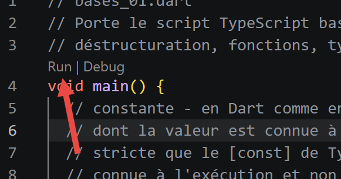
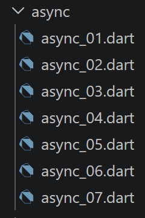
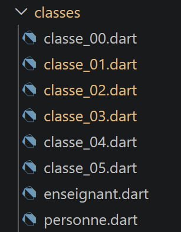

3. Les fondamentaux

Ce chapitre reprend, script par script, la progression du chapitre [Les fondamentaux] du cours TypeScript : mêmes sections, même ordre, un script Dart en regard de chaque script TypeScript.
3.1. Les bases de Dart
Cette première section couvre le socle commun à tout programme Dart : variables, listes, boucles, fonctions, portée des variables, types de base et conversions.

3.1.1. script [bases_01]
| // bases_01.dart
// Porte le script TypeScript bases-01.ts : variables, tableaux, boucles,
// déstructuration, fonctions, typage dynamique, opérateurs de comparaison.
void main() {
// constante - en Dart comme en TypeScript, [const] déclare une constante
// dont la valeur est connue à la COMPILATION (une constante encore plus
// stricte que le [const] de TypeScript, qui lui n'exige qu'une valeur
// connue à l'exécution et non réaffectée)
const String nom = "dupont";
// un affichage écran - [print] est l'équivalent Dart de [console.log]
print("nom : $nom");
// un tableau (on dit "liste" en Dart) avec des éléments de type différent
// [dynamic] car cette liste mélange volontairement plusieurs types
// (démonstration) - c'est l'équivalent du [any] de TypeScript : Dart
// n'effectue alors plus aucune vérification de type à la compilation
// sur les éléments de cette liste
final List<dynamic> tableau = ["un", "deux", 3, 4];
// son nombre d'éléments
int n = tableau.length;
// une boucle
for (var i = 0; i < n; i++) {
print("tableau[$i] = ${tableau[i]}");
}
// initialisation de 2 variables avec le contenu d'une liste
// Dart n'a pas de déstructuration de liste à l'affectation comme
// TypeScript (const [a, b] = tableau) ; depuis Dart 3, on peut utiliser
// un "pattern de liste" pour obtenir le même résultat (cf dart3/*.dart
// pour une présentation complète des patterns)
final [chaine1, chaine2] = ["chaine1", "chaine2"];
// concaténation des 2 chaînes
final String chaine3 = chaine1 + chaine2;
// affichage résultat
print([chaine1, chaine2, chaine3]);
// utilisation fonction
affiche(chaine1);
// le type d'une variable peut être connu avec runtimeType
// (l'équivalent Dart de l'opérateur [typeof] de TypeScript)
afficheType("n", n);
afficheType("chaine1", chaine1);
afficheType("tableau", tableau);
// [ATTENTION, différence de fond avec TypeScript] en TypeScript, le type
// [any] permet à une variable de changer de type en cours d'exécution
// (n = "a changé" après n = 4 est valide). En Dart, le type d'une
// variable est fixé une fois pour toutes par sa déclaration : [n] a été
// déclarée [int] ci-dessus, donc n = "a changé" est un ERREUR DE
// COMPILATION, pas une simple négligence tolérée à l'exécution. Pour
// retrouver un comportement comparable à [any], il faudrait déclarer
// [dynamic n = tableau.length;] dès le départ - mais ce n'est pas ce que
// fait ce script, volontairement, pour mettre en évidence la différence.
// La ligne suivante est donc COMMENTÉE : la décommenter provoque une
// erreur de compilation.
// n = "a changé";
print('type[variable n]=${n.runtimeType} (Dart interdit de lui affecter '
'autre chose qu\'un int : voir le commentaire ci-dessus)');
// une fonction peut rendre un résultat
int res1 = f1(4);
print("res1=$res1");
// une fonction peut rendre plusieurs valeurs : Dart ne peut pas renvoyer
// directement un tableau JS hétérogène dans des variables séparées avec
// une syntaxe [let x, y, z; [x, y, z] = f()] comme TypeScript. On utilise
// soit un Record (cf dart3/, la solution moderne et typée), soit ici,
// pour rester proche du script d'origine, une liste que l'on déstructure
// avec un pattern de liste (Dart 3) :
final (res2, res3, res4) = f2();
print("(res2,res3,res4)=${[res2, res3, res4]}");
// on aurait pu récupérer ces valeurs dans une liste
final List<dynamic> t = f2ListeAny();
for (var i = 0; i < t.length; i++) {
print("t[$i]=${t[i]}");
}
// des tests
for (var i = 0; i < t.length; i++) {
// n'affiche que les chaînes - [is String] est l'équivalent Dart de
// [typeof(x) === "string"]
if (t[i] is String) {
print("t[$i]=${t[i]}");
}
}
// [ATTENTION, différence de fond avec TypeScript/JavaScript] l'opérateur
// [==] de Dart correspond TOUJOURS à l'opérateur strict [===] de
// JavaScript : il n'existe pas, en Dart, d'opérateur de comparaison avec
// conversion implicite de type comme le [==] non strict de JavaScript.
// La comparaison "2" == 2 est donc toujours fausse en Dart, quel que soit
// l'opérateur utilisé - le code ci-dessous n'a donc, volontairement,
// qu'une seule branche (pas de section "avec ==" puis "avec ===" comme
// dans le script TypeScript d'origine, cette distinction n'existant pas).
if ("2" == 2) {
print("la chaîne 2 est égale à l'entier 2");
} else {
print("en Dart, la chaîne '2' n'est jamais égale à l'entier 2 "
"(pas de conversion implicite comme le == non strict de JS)");
}
// d'autres tests
for (var i = 0; i < t.length; i++) {
// n'affiche que les entiers >10
if (t[i] is int && t[i] > 10) {
print("t[$i]=${t[i]}");
}
}
// une boucle while
List<num> t2 = [8, 5, 0, -2, 3, 4];
var i = 0;
num somme = 0;
while (i < t2.length && t2[i] > 0) {
print("t2[$i]=${t2[i]}");
somme += t2[i];
i++;
}
print("somme=$somme");
}
// arrêt du programme main ici car il n'y a plus de code exécutable
// affiche
// ----------------------------------
void affiche(String chaine) {
// affiche chaine
print("chaine=$chaine");
}
// afficheType
// ----------------------------------
void afficheType(String name, dynamic variable) {
// affiche le type de variable - [runtimeType] est l'équivalent Dart de
// [typeof] : contrairement à [typeof] qui rend une chaîne générique
// ("number", "string"...), [runtimeType] rend le nom du VRAI type Dart
// de la valeur (int, String, List<dynamic>...)
print("type[variable $name]=${variable.runtimeType}");
}
// ----------------------------------
int f1(int param) {
// ajoute 10 à param
return param + 10;
}
// ----------------------------------
// rend 3 valeurs sous forme d'un Record (Dart 3) - le type Dart moderne et
// typé pour ce que TypeScript ferait avec un tableau hétérogène [any[]]
(String, int, int) f2() {
return ("un", 0, 100);
}
// même résultat que f2(), mais sous forme d'une liste [dynamic] pour
// rester au plus près de l'écriture [any[]] du script TypeScript d'origine
List<dynamic> f2ListeAny() {
return ["un", 0, 100];
}
|
Commentons ce code :
- ligne 9 : [const String nom] : en Dart, [const] exige une valeur connue à la COMPILATION - une contrainte plus stricte que le [const] de TypeScript, qui n'exige qu'une valeur non réaffectée à l'exécution.
- ligne 18 : [List<dynamic> tableau] : Dart appelle «le tableau du JavaScript]* une [liste], et [dynamic] y joue le rôle du [any] de TypeScript pour désactiver la vérification de type sur les éléments.
- ligne 31 : [final [chaine1, chaine2] = [...]] : Dart n'a pas de déstructuration à l'affectation comme TypeScript ; le PATTERN DE LISTE de Dart 3, utilisé ici, obtient le même résultat (présentation complète des patterns dans le chapitre [Nouveautés Dart 3.x]).
- ligne 56 : [n.runtimeType] remplace l'opérateur [typeof] de TypeScript, avec une différence : il rend le VRAI nom du type Dart ([int], [List<dynamic>]...), pas une simple chaîne générique (["number"], ["string"]).
- La ligne [n = "a changé";] est commentée volontairement : contrairement à une variable [any] de TypeScript, une variable Dart garde le type fixé à sa déclaration - cette affectation serait une ERREUR DE COMPILATION.
- ligne 69 : [final (res2, res3, res4) = f2();] : une fonction Dart ne peut pas «rendre plusieurs valeurs» dans des variables séparées comme le ferait un tableau hétérogène TypeScript ; [f2] rend ici un RECORD (Dart 3), déstructuré immédiatement par un pattern de liste.
- ligne 94 : [if ("2" == 2)] : l'opérateur [] de Dart correspond TOUJOURS au [=] strict de JavaScript - il n'y a pas d'équivalent Dart du [==] non strict de JavaScript, donc pas de second cas à montrer ici, contrairement au script TypeScript d'origine.
On rappelle que pour exécuter un script Dart, vous pouvez taper la commande suivante dans un terminal VSCode :
dart run chemin_du_script.dart
Par exemple ci-dessous :
si votre terminal est positionné sur le dossier contenant le script [bases_01.dart]. Vous pouvez également dans l’éditeur de texte cliquer sur le terme [Run] inscrit au-dessus de la fonction [main] :

Le résultat de l’exécution de [bases_01] est le suivant :.
| nom : dupont
tableau[0] = un
tableau[1] = deux
tableau[2] = 3
tableau[3] = 4
[chaine1, chaine2, chaine1chaine2]
chaine=chaine1
type[variable n]=int
type[variable chaine1]=String
type[variable tableau]=List<dynamic>
type[variable n]=int (Dart interdit de lui affecter autre chose qu'un int : voir le commentaire ci-dessus)
res1=14
(res2,res3,res4)=[un, 0, 100]
t[0]=un
t[1]=0
t[2]=100
t[0]=un
en Dart, la chaîne '2' n'est jamais égale à l'entier 2 (pas de conversion implicite comme le == non strict de JS)
t[2]=100
t2[0]=8
t2[1]=5
somme=13
|
3.1.2. script [bases_02]
| // bases_02.dart
// Porte bases-02.ts : var/let/const en TypeScript, var/final/const en Dart.
void main() {
// pour initialiser une variable, on utilise [var] (type déduit) ou un
// type explicite (comme [int] ici) pour les variables MODIFIABLES -
// l'équivalent du [let] de TypeScript
int x = 4;
x++;
print(x);
// [final] pour une variable affectée UNE SEULE FOIS à l'exécution -
// l'équivalent du [const] de TypeScript (une valeur connue seulement à
// l'exécution, mais non réaffectable ensuite)
final int y = 10;
x += y;
// interdit - x est modifiable mais y ne l'est pas : y++ provoque une
// erreur de compilation, exactement comme en TypeScript
// y++;
// [NOUVEAU par rapport à TypeScript] Dart offre un second mot clé,
// [const], plus strict que [final] : une constante [const] doit être
// connue à la COMPILATION (comme au tout début de bases_01.dart). Il
// n'y a pas d'équivalent de cette distinction final/const en
// TypeScript, où [const] ne signifie que "non réaffecté".
const int z = 100; // connu à la compilation : valide
print(z);
}
|
Commentons ce code :
- Une variable modifiable se déclare avec un type explicite (ou [var]) : c'est l'équivalent du [let] de TypeScript.
- [final] est l'équivalent du [const] de TypeScript : une valeur affectée une seule fois, mais dont la valeur n'est connue qu'à l'exécution.
- ligne 19 : [NOUVEAU] Dart ajoute un second mot clé, [const], plus strict que [final] : une valeur [const] doit être connue à la COMPILATION. TypeScript n'a pas cette distinction à deux niveaux.
Le résultat de l’exécution est le suivant :
3.1.3. script [bases_03]
| // bases_03.dart
// Porte bases-03.ts : portée des variables - une variable de premier niveau
// de fichier (portée "top-level", l'équivalent Dart de la portée de module
// de TypeScript) est visible depuis les fonctions du même fichier.
// variable top-level (en dehors de toute fonction/classe), comme le [let]
// de premier niveau du script TypeScript
int count = 1;
void doSomething() {
// count est ici connu : une fonction voit les variables top-level du
// fichier qui la contient, exactement comme en TypeScript
print("count=$count");
}
void main() {
// appel
doSomething();
}
|
Commentons ce code :
- Une variable déclarée en dehors de toute fonction (portée [top-level]) est visible depuis toutes les fonctions du même fichier - exactement le rôle d'une variable de portée module en TypeScript.
Le résultat de l’exécution est le suivant :
3.1.4. script [bases_04]
| // bases_04.dart
// Porte bases-04.ts : une variable locale à une fonction cache une variable
// top-level de même nom - le même principe de masquage (shadowing) qu'en
// TypeScript.
// variable top-level
const int count = 1;
void doSomething() {
// la variable locale cache la variable top-level
const count = 2;
print("count inside function=$count");
}
void main() {
// variable top-level
print("count outside function=$count");
// variable locale
doSomething();
}
|
Commentons ce code :
- Une variable locale à une fonction, de même nom qu'une variable top-level, la MASQUE ([shadowing]) à l'intérieur de cette fonction - le même principe qu'en TypeScript.
Le résultat de l’exécution est le suivant :
| count outside function=1
count inside function=2
|
3.1.5. script [bases_05]
| // bases_05.dart
// Porte bases-05.ts : une variable déclarée à l'intérieur d'une fonction
// n'est pas connue en dehors de celle-ci - même principe qu'en TypeScript.
void doSomething() {
// variable locale à la fonction
const count = 2;
print("count inside function=$count");
}
void main() {
// ici count n'est pas connu : la ligne suivante, si on la décommentait,
// provoquerait une erreur de compilation ("Undefined name 'count'"),
// exactement comme en TypeScript
// print("count outside function=$count");
doSomething();
}
|
Commentons ce code :
- Une variable déclarée à l'intérieur d'une fonction n'est pas visible en dehors d'elle : y faire référence hors de la fonction est une erreur de compilation, exactement comme en TypeScript.
Le résultat de l’exécution est le suivant :
3.1.6. script [bases_06]
Ce script est plus court que son équivalent TypeScript : voir le commentaire en tête de fichier pour la raison.
| // bases_06.dart
// Porte bases-06.ts : portée de bloc.
//
// [ATTENTION, différence de fond avec TypeScript/JavaScript] TypeScript a
// TROIS mots clés de déclaration aux portées différentes : [let] et [const]
// sont à portée de BLOC, mais [var] (hérité de JavaScript) est à portée de
// FONCTION - une variable [var] déclarée dans un bloc {...} "fuit" en
// dehors de ce bloc, ce que ce script montre justement avec [count3].
// Dart n'a PAS cet équivalent de [var] : [var], [final] et [const] sont
// TOUJOURS à portée de bloc en Dart, sans exception. Ce script est donc
// plus court que l'original : il n'y a que deux cas à montrer, pas trois,
// et les deux se comportent comme les cas [let]/[const] de TypeScript.
void main() {
// [var] (type déduit) définit une variable de portée bloc
{
// la variable [count] n'est connue que dans ce bloc
var count = 1;
print("count=$count");
}
// ici la variable [count] n'est pas connue : la ligne suivante, si on la
// décommentait, provoquerait une erreur de compilation
// count++;
// [final] définit une variable (non réaffectable) de portée bloc
{
// la variable [count2] n'est connue que dans ce bloc
final count2 = 1;
print("count=$count2");
}
// ici la variable [count2] n'est pas connue non plus
// count2++;
// il n'y a pas de 3ième cas en Dart : aucun mot clé de déclaration ne
// permet à une variable de "fuir" en dehors du bloc où elle est déclarée,
// contrairement au [var] de TypeScript/JavaScript utilisé pour [count3]
// dans le script d'origine.
}
|
Commentons ce code :
- [var] et [final] sont TOUJOURS à portée de BLOC en Dart, sans aucune exception.
- Ce script ne montre que DEUX cas, là où le script TypeScript en montrait trois : Dart n'a pas d'équivalent du [var] de JavaScript, dont la portée est celle de la FONCTION (pas du bloc) et qui «fuit» hors d'un bloc [{...}] - une source classique de bug en JavaScript, structurellement impossible en Dart.
Le résultat de l’exécution est le suivant :
3.1.7. script [bases_07]
| // bases_07.dart
// Porte bases-07.ts : les grands types de données de base et leur
// introspection avec runtimeType (l'équivalent Dart de typeof).
void main() {
const int var1 = 10;
const String var2 = "abc";
const bool var3 = true;
const List<int> var4 = [1, 2, 3];
const Map<String, String> var5 = {'nom': 'axèle'};
// une variable de type fonction - Dart type les fonctions avec la
// notation [TypeDeRetour Function(paramètres)]
int Function() var6 = () => 3;
// affichage des types avec runtimeType
print("var1.runtimeType=${var1.runtimeType}");
print("var2.runtimeType=${var2.runtimeType}");
print("var3.runtimeType=${var3.runtimeType}");
print("var4.runtimeType=${var4.runtimeType}");
print("var5.runtimeType=${var5.runtimeType}");
print("var6.runtimeType=${var6.runtimeType}");
}
|
Commentons ce code :
- ligne 12 : [int Function() var6 = () => 3;] : Dart type les fonctions avec la notation [TypeDeRetour Function(paramètres)] - une fonction est un type comme un autre, assignable à une variable.
- ligne 8 : [runtimeType] affiche, pour chaque variable, son VRAI type Dart ([int], [String], [List<int>], [Map<String, String>] (ligne 9), [() => int]...).
Le résultat de l’exécution est le suivant :
| var1.runtimeType=int
var2.runtimeType=String
var3.runtimeType=bool
var4.runtimeType=List<int>
var5.runtimeType=_ConstMap<String, String>
var6.runtimeType=() => int
|
3.1.8. script [bases_08]
Ce script change de nature par rapport à son équivalent TypeScript : là où bases-08.ts illustrait les conversions IMPLICITES de JavaScript, ce script montre les conversions EXPLICITES qu'il faut écrire à la place, Dart n'en pratiquant aucune (cf. le commentaire en tête de fichier pour le détail des trois règles concernées).
| // bases_08.dart
// Porte bases-08.ts.
//
// [ATTENTION, différence de fond avec TypeScript/JavaScript] ce script
// change complètement de nature par rapport à l'original. JavaScript (et
// donc TypeScript, qui ne fait qu'ajouter des types vérifiés à la
// COMPILATION mais garde le comportement de JavaScript à l'EXÉCUTION)
// pratique de nombreuses conversions de type IMPLICITES à l'exécution :
// - dans un test [if (data) ...], n'importe quelle valeur est convertie en
// booléen ("" et 0 sont "fausses", "abcd" et [1,2,3] sont "vraies"...) ;
// - l'opérateur [+] fait une addition SI LES DEUX opérandes sont des
// nombres, sinon une concaténation de chaînes ("12" * 1 vaut 12, mais
// "12" + 1 vaut "121") ;
// - true/false se convertissent en 1/0 dans un calcul...
// Dart n'a AUCUNE de ces conversions implicites :
// - la condition d'un [if] doit être un [bool], un point c'est tout : [if
// ("abcd")] est une ERREUR DE COMPILATION, pas une conversion automatique ;
// - [+] exige des opérandes de MÊME type (String+String, ou num+num) : "12"
// + 1 est une erreur de compilation ;
// - un [bool] ne se convertit jamais implicitement en nombre.
// Ce script montre donc, à l'inverse du script TypeScript d'origine, les
// conversions EXPLICITES qu'il faut écrire à la place de chacune de ces
// conversions implicites.
void main() {
print("---------------[Pas de conversion implicite vers un booléen]------"
"------------------------------");
// en TypeScript, [showBool(valeur)] teste directement la "véracité" de
// n'importe quelle valeur. En Dart, il faut écrire soi-même le test
// explicite qui correspond à ce qu'on veut vraiment vérifier : une chaîne
// vide, une liste vide, une valeur nulle... [showBool] ci-dessous
// n'accepte donc, à dessein, qu'un [Object?] (nullable) et documente,
// pour chaque famille de types, la conversion EXPLICITE équivalente
showBoolEquivalent("abcd", (v) => (v as String).isNotEmpty);
showBoolEquivalent("", (v) => (v as String).isNotEmpty);
showBoolEquivalent([1, 2, 3], (v) => (v as List).isNotEmpty);
showBoolEquivalent(<int>[], (v) => (v as List).isNotEmpty);
showBoolEquivalent(null, (v) => v != null);
showBoolEquivalent(0.0, (v) => (v as double) != 0.0);
showBoolEquivalent(0, (v) => (v as int) != 0);
showBoolEquivalent(4.6, (v) => (v as double) != 0.0);
print("---------------[Conversion explicite d'une chaîne vers un nombre]"
"------------------------------");
showNumber("12");
showNumber("45.67");
showNumber("abcd");
print("---------------[Conversion explicite vers un booléen]------------"
"------------------------------");
// contrairement à Boolean(data) en JavaScript (qui applique les règles de
// "véracité"), il n'existe pas de fonction Dart générique équivalente :
// chaque type doit fournir sa propre notion de "vide/non vide" (montré
// ci-dessus avec showBoolEquivalent)
print("---------------[Conversion explicite vers un nombre]-------------"
"-----------------------------");
showNumber2("12.45");
showNumber2(true); // ce cas est traité séparément ci-dessous
showNumber2(null);
print("---------------[Conversion explicite vers une chaîne]-------------"
"-----------------------------");
showString(5);
showString(6.7);
showString(false);
showString(null);
print("---------------[Autres cas]------------------------------");
const String string1 = '1000.78';
// en Dart, [+] entre une String et un num est une erreur de compilation :
// il faut convertir explicitement l'un des deux opérandes
// conversion de string1 en nombre, puis addition
final double data1 = double.parse(string1) + 1.034;
print("data1=$data1 (conversion explicite obligatoire, contrairement à "
"'1000.78' + 1.034 en JS qui concatène en chaîne)");
// conversion inverse : le nombre en chaîne, puis concaténation
final String data2 = (1.034).toString() + string1;
print("data2=$data2 (ici on choisit sciemment la concaténation, en "
"convertissant le nombre)");
// true/false ne se convertissent JAMAIS implicitement en nombre en Dart -
// il faut écrire soi-même la correspondance voulue. [valeurBool] est une
// variable (et non le littéral [true] directement) : avec un littéral,
// dart analyze verrait la branche [: 0.0] comme du code mort (toujours
// faux), puisque la condition serait alors connue à la compilation.
// (delibérément [final], pas [const] : un [const] resterait une constante
// de compilation, et dart analyze détecterait quand même le code mort)
final bool valeurBool = true;
final double data3 = valeurBool ? 1.0 : 0.0;
print("data3=$data3 (équivalent explicite de 'true * 1.18' de JS, "
"combiné à la multiplication ci-dessous)");
print("true converti puis multiplié par 1.18 = ${data3 * 1.18}");
}
// affiche, pour une valeur donnée, la conversion booléenne EXPLICITE qui
// remplace la conversion implicite de JavaScript - [testeur] encode la
// "bonne" façon de tester cette valeur particulière
void showBoolEquivalent(Object? data, bool Function(Object?) testeur) {
print("[data=$data], [type(data)]=${data.runtimeType}, "
"[test explicite équivalent]=${testeur(data)}");
}
void showNumber(String data) {
// contrairement à [data * 1] en JS (qui échoue silencieusement en NaN si
// data n'est pas numérique), [double.parse] lève une [FormatException]
// explicite en cas d'échec - on l'attrape ici pour illustrer le cas
// "abcd" du script d'origine
try {
final nombre = double.parse(data);
print("[data=$data], [nombre]=$nombre, [type(nombre)]="
"${nombre.runtimeType}");
} on FormatException {
print("[data=$data] : FormatException, ce n'est pas un nombre valide "
"(contrairement à Number('$data') en JS, qui rendrait NaN sans "
"lever d'erreur)");
}
}
void showNumber2(Object? data) {
// conversion explicite selon le type réel de la donnée - il n'y a pas de
// fonction Dart unique équivalente à Number(...) qui accepterait
// indifféremment un num, un bool ou null
double? nombre;
if (data is num) {
nombre = data.toDouble();
} else if (data is String) {
nombre = double.tryParse(data);
} else if (data is bool) {
nombre = data ? 1.0 : 0.0;
}
print("[data=$data], [type(data)]=${data.runtimeType}, [nombre]=$nombre, "
"[type(nombre)]=${nombre.runtimeType}");
}
void showString(Object? data) {
// toString() existe sur (presque) tout objet Dart, y compris null
// (rendu "null") - assez proche, ici, du comportement de String(data)
final String chaine = data.toString();
print("[data=$data], [type(data)]=${data.runtimeType}, [chaîne]=$chaine, "
"[type(chaîne)]=${chaine.runtimeType}");
}
|
Commentons ce code :
- [showBoolEquivalent] : Dart n'a pas de conversion implicite vers [bool] - une condition [if] exige un VRAI [bool] ; chaque famille de types (chaîne, liste, nombre) doit fournir explicitement son propre test de «vide/non vide».
- ligne 126 : [double.parse]/[double.tryParse] remplacent la conversion implicite [Number(chaine)] de JavaScript : [parse] lève une [FormatException] explicite en cas d'échec, [tryParse] rend [null] - jamais de [NaN] silencieux.
- ligne 73 : [double.parse(string1) + 1.034] : [+] entre une [String] et un [num] est une erreur de COMPILATION en Dart - contrairement à ['1000.78' + 1.034] en JavaScript, qui concatène silencieusement en chaîne.
- [true ? 1.0 : 0.0] : [bool] ne se convertit JAMAIS implicitement en nombre en Dart - il faut écrire soi-même la correspondance voulue, là où [true * 1.18] est valide en JavaScript.
Le résultat de l’exécution est le suivant :
| ---------------[Pas de conversion implicite vers un booléen]------------------------------------
[data=abcd], [type(data)]=String, [test explicite équivalent]=true
[data=], [type(data)]=String, [test explicite équivalent]=false
[data=[1, 2, 3]], [type(data)]=List<int>, [test explicite équivalent]=true
[data=[]], [type(data)]=List<int>, [test explicite équivalent]=false
[data=null], [type(data)]=Null, [test explicite équivalent]=false
[data=0.0], [type(data)]=double, [test explicite équivalent]=false
[data=0], [type(data)]=int, [test explicite équivalent]=false
[data=4.6], [type(data)]=double, [test explicite équivalent]=true
---------------[Conversion explicite d'une chaîne vers un nombre]------------------------------
[data=12], [nombre]=12.0, [type(nombre)]=double
[data=45.67], [nombre]=45.67, [type(nombre)]=double
[data=abcd] : FormatException, ce n'est pas un nombre valide (contrairement à Number('abcd') en JS, qui rendrait NaN sans lever d'erreur)
---------------[Conversion explicite vers un booléen]------------------------------------------
---------------[Conversion explicite vers un nombre]------------------------------------------
[data=12.45], [type(data)]=String, [nombre]=12.45, [type(nombre)]=double
[data=true], [type(data)]=bool, [nombre]=1.0, [type(nombre)]=double
[data=null], [type(data)]=Null, [nombre]=null, [type(nombre)]=Null
---------------[Conversion explicite vers une chaîne]------------------------------------------
[data=5], [type(data)]=int, [chaîne]=5, [type(chaîne)]=String
[data=6.7], [type(data)]=double, [chaîne]=6.7, [type(chaîne)]=String
[data=false], [type(data)]=bool, [chaîne]=false, [type(chaîne)]=String
[data=null], [type(data)]=Null, [chaîne]=null, [type(chaîne)]=String
---------------[Autres cas]------------------------------
data1=1001.814 (conversion explicite obligatoire, contrairement à '1000.78' + 1.034 en JS qui concatène en chaîne)
data2=1.0341000.78 (ici on choisit sciemment la concaténation, en convertissant le nombre)
data3=1.0 (équivalent explicite de 'true * 1.18' de JS, combiné à la multiplication ci-dessous)
true converti puis multiplié par 1.18 = 1.18
|
3.1.9. script [bases_09]
Contrairement aux nouveautés ECMAScript qui seront remplacées par le chapitre [Nouveautés Dart 3.x], ce script reste à sa place : la plupart de ces opérateurs existent nativement en Dart depuis longtemps, parfois bien avant 2020.
| // bases_09.dart
// Porte bases-09.ts (les opérateurs modernes ECMAScript 2020-2021).
// Contrairement aux "nouveautés ECMAScript" qui seront remplacées plus loin
// par le chapitre Nouveautés Dart 3.x, ce script reste ICI : la plupart de
// ces opérateurs existent nativement en Dart depuis longtemps (parfois
// depuis Dart 2.0/2.12, bien avant 2020), ils font donc partie des
// fondamentaux Dart au même titre que le reste de ce chapitre.
void main() {
// ------------------------------------------------------------------------
// 1) l'opérateur de coalescence des nuls [??] - existe en Dart depuis
// longtemps (Dart 2.0), et se comporte EXACTEMENT comme en TypeScript :
// il ne déclenche la valeur par défaut que si la valeur est null (Dart
// n'a pas de valeur [undefined] séparée de [null])
// ------------------------------------------------------------------------
// typé [int?] (nullable), et non [int] : avec un type non nullable,
// dart analyze verrait juste titre que [?? 10] ne peut jamais se
// déclencher (le type garantit déjà que quantite1 n'est pas null) - alors
// que le but ici est justement de comparer le comportement de [??] sur
// une valeur non nulle (quantite1) et sur une valeur nulle (quantite2)
const int? quantite1 = 0;
// en Dart, il n'existe pas d'opérateur [||] pour cet usage : le [||]
// logique de Dart n'accepte que des opérandes [bool], donc "quantite1 ||
// 10" serait une erreur de compilation - il n'y a donc qu'un seul
// opérateur à montrer ici, [??], sans le risque de bug illustré par le
// script TypeScript d'origine (0 est de toute façon un [int], jamais
// interprété comme "faux")
print("quantite1 ?? 10 = ${quantite1 ?? 10}"); // -> 0 (quantite1 n'est pas null)
const int? quantite2 = null;
print("quantite2 ?? 10 = ${quantite2 ?? 10}"); // -> 10 (quantite2 est null)
// ------------------------------------------------------------------------
// 2) le chaînage optionnel [?.] - existe en Dart depuis longtemps aussi
// ------------------------------------------------------------------------
final personne1 = PersonneAvecAdresseOptionnelle(
nom: "Dupont",
adresse: Adresse(ville: "Nantes"),
);
final personne2 = PersonneAvecAdresseOptionnelle(nom: "Martin"); // pas d'adresse !
// [?.] arrête l'évaluation et rend [null] dès qu'une étape est null, au
// lieu de lancer une exception "NoSuchMethodError" sur null
print("personne1 ville = ${personne1.adresse?.ville}");
print("personne2 ville = ${personne2.adresse?.ville}"); // -> null, pas d'erreur
// on peut combiner [?.] et [??] pour fournir une valeur de remplacement
print("personne2 ville (avec défaut) = ${personne2.adresse?.ville ?? "ville inconnue"}");
// [?.] fonctionne aussi sur les appels de méthode...
final objetAvecMethode = ObjetAvecMethode();
print("appel méthode existante : ${objetAvecMethode.direBonjour()}");
// ...et sur l'accès à un élément de liste (via l'opérateur [?[ ]])
final List<int>? listeOuNull = null;
print("élément d'une liste absente : ${listeOuNull?[0]}"); // -> null
// ------------------------------------------------------------------------
// 3) les opérateurs d'affectation logique [??=]
// ------------------------------------------------------------------------
// [a ??= b] équivaut à [a = a ?? b] : affecte b seulement si a est null -
// celui-ci existe en Dart, avec exactement la même écriture qu'en
// TypeScript
final config = Configuration(delai: 0, page: null);
config.delai ??= 1000; // délai vaut déjà 0 (valeur valide) -> reste inchangé
config.page ??= 1; // page est null -> devient 1
print("config après ??= : délai=${config.delai}, page=${config.page}");
// [ATTENTION, différence de fond avec TypeScript] Dart N'A PAS
// d'opérateurs [||=] et [&&=] : le [||] et le [&&] de Dart n'acceptent
// que des [bool] (comme vu au point 1), et il n'existe pas de raccourci
// d'affectation pour ce cas - il faut écrire le test explicitement
String messageAffiche = "";
// équivalent explicite de [messageAffiche ||= "message par défaut"] :
// en Dart, il faut soi-même écrire le test "faux" qui a du sens (ici :
// chaîne vide) plutôt que de compter sur une notion générique de "faux"
if (messageAffiche.isEmpty) {
messageAffiche = "message par défaut";
}
print("messageAffiche après le if équivalent à ||= : $messageAffiche");
// équivalent explicite de [a &&= b] (affecte b seulement si a est déjà
// "vrai") : là encore, un simple if, [a] devant être un vrai booléen
bool utilisateurConnecte = true;
if (utilisateurConnecte) {
utilisateurConnecte = true; // "b" du a &&= b
}
print("utilisateurConnecte après le if équivalent à &&= : $utilisateurConnecte");
// ------------------------------------------------------------------------
// 4) séparateurs numériques [_] dans les littéraux
// ------------------------------------------------------------------------
// [ATTENTION, différence avec TypeScript] Dart n'accepte PAS le caractère
// [_] comme séparateur visuel dans un littéral numérique : "1_000_000"
// est une erreur de syntaxe en Dart. Il faut écrire le nombre "en clair",
// éventuellement en le formatant pour l'affichage avec le paquet [intl]
// (NumberFormat) si la lisibilité à l'affichage est le but recherché.
const int unMillion = 1000000;
print("unMillion = $unMillion");
// ------------------------------------------------------------------------
// 5) BigInt
// ------------------------------------------------------------------------
// [ATTENTION, différence de fond avec TypeScript/JavaScript] le type
// [number] de JavaScript est un flottant double précision, qui perd sa
// précision au-delà de 2^53 environ - d'où le besoin d'un type [BigInt]
// séparé pour les très grands entiers exacts (numéros de carte bancaire,
// identifiants...). Le type [int] de Dart, lui, est un VRAI entier signé
// sur 64 bits sur toutes les plateformes natives (VM, AOT) : il reste
// exact jusqu'à 2^63-1, largement au-delà du [Number.MAX_SAFE_INTEGER]
// de JavaScript (2^53-1) - la plupart des usages qui imposeraient un
// BigInt en JavaScript n'en ont donc simplement pas besoin en Dart.
print("l'équivalent Dart de Number.MAX_SAFE_INTEGER n'existe pas : "
"int est exact jusqu'à 9223372036854775807 (2^63-1)");
const int grandNombre = 9007199254740993; // > 2^53, imprécis en JS, exact ici
print("grandNombre = $grandNombre (exact, alors qu'il perdrait sa "
"précision stocké dans un Number JavaScript)");
// pour un besoin réellement illimité (au-delà de 64 bits, ex. calcul
// cryptographique), Dart ne propose PAS de type BigInt dans sa
// bibliothèque standard (dart:core) : il faut alors se tourner vers un
// paquet tiers tel que package:fixnum, ou implémenter son propre calcul -
// un besoin nettement plus rare qu'en JavaScript, d'après ce qui précède.
}
// ------------------------------------------------------------------------
// classes utilitaires pour la démonstration du chaînage optionnel
// ------------------------------------------------------------------------
class Adresse {
final String ville;
Adresse({required this.ville});
}
class PersonneAvecAdresseOptionnelle {
final String nom;
final Adresse? adresse; // adresse est optionnelle (nullable)
PersonneAvecAdresseOptionnelle({required this.nom, this.adresse});
}
class ObjetAvecMethode {
String direBonjour() => "bonjour !";
}
class Configuration {
int? delai;
int? page;
Configuration({this.delai, this.page});
}
|
Commentons ce code :
- [??] et [?.] (coalescence des nuls, chaînage optionnel) existent en Dart depuis longtemps et se comportent exactement comme en TypeScript.
- ligne 63 : [config.delai ??= 1000;] : l'affectation logique [??=] existe en Dart, avec la même écriture qu'en TypeScript.
- Dart N'A PAS d'équivalent des opérateurs [||=] et [&&=] : son [||]/[&&] n'accepte que des [bool], donc pas de notion générique de «faux» à court-circuiter - un simple [if] explicite les remplace.
- [1_000_000] est une ERREUR DE SYNTAXE en Dart : contrairement à TypeScript, aucun séparateur visuel n'est accepté dans un littéral numérique.
- [int] est un vrai entier 64 bits SIGNÉ EXACT sur toute plateforme native Dart, jusqu'à 2^63-1 - très au-delà de [Number.MAX_SAFE_INTEGER] (2^53-1) : la plupart des usages qui imposeraient un [BigInt] en JavaScript n'en ont simplement pas besoin en Dart, qui ne propose d'ailleurs pas de [BigInt] dans sa bibliothèque standard.
Le résultat de l’exécution est le suivant :
| quantite1 ?? 10 = 0
quantite2 ?? 10 = 10
personne1 ville = Nantes
personne2 ville = null
personne2 ville (avec défaut) = ville inconnue
appel méthode existante : bonjour !
élément d'une liste absente : null
config après ??= : délai=0, page=1
messageAffiche après le if équivalent à ||= : message par défaut
utilisateurConnecte après le if équivalent à &&= : true
unMillion = 1000000
l'équivalent Dart de Number.MAX_SAFE_INTEGER n'existe pas : int est exact jusqu'à 9223372036854775807 (2^63-1)
grandNombre = 9007199254740993 (exact, alors qu'il perdrait sa précision stocké dans un Number JavaScript)
|
3.1.10. Conclusion
Cette première section a posé le socle : typage strict sans coercition implicite, distinction [final]/[const], portée de bloc systématique, absence de déstructuration à l'affectation (compensée par les patterns Dart 3). Ces différences reviendront tout au long du cours.
3.2. Les tableaux

En Dart, un «tableau» s'appelle une [liste] ([List]). Cette section reprend les manipulations classiques de listes : référence contre valeur, parcours, méthodes aux extrémités, méthodes fonctionnelles, et les méthodes «immuables» récentes de JavaScript.
3.2.1. script [tab_01]
| // tab_01.dart
// Porte tab-01.ts : une liste est un objet manipulé via sa référence,
// exactement comme un tableau JavaScript/TypeScript.
void main() {
final List<int> tab1 = [1, 2, 3];
// copie de RÉFÉRENCE, pas de contenu
final List<int> tab2 = tab1;
// tab1 et tab2 pointent sur la même liste - [identical] est l'équivalent
// Dart de [===] appliqué à l'IDENTITÉ d'objet (au lieu de [==], qui pour
// les List compare le contenu ; voir la remarque plus bas)
print("identical(tab1, tab2) : ${identical(tab1, tab2)}");
// on peut modifier la liste en passant indifféremment par tab1 ou tab2
tab2[1] = 10;
print("tab1=$tab1");
print("tab2=$tab2");
// [remarque propre à Dart] contrairement à JavaScript où [tab1 === tab2]
// et [tab1 == tab2] sont équivalents pour des tableaux (comparaison de
// référence dans les deux cas), l'opérateur [==] de Dart sur un objet
// List compare par défaut, lui aussi, la RÉFÉRENCE (pas le contenu) : []
// == [] est donc faux en Dart, comme le montre la ligne suivante
print("[1, 2] == [1, 2] (deux listes différentes) : ${[1, 2] == [1, 2]}");
}
|
Commentons ce code :
- ligne 7 : [final List<int> tab2 = tab1;] copie la RÉFÉRENCE, pas le contenu : [tab1] et [tab2] désignent la même liste, exactement comme en JavaScript.
- ligne 11 : [identical(tab1, tab2)] est l'équivalent Dart du [===] appliqué à l'IDENTITÉ d'objet.
- ligne 22 : [[1, 2] == [1, 2]] est FAUX en Dart : contrairement à JavaScript où [===] et [] sont équivalents sur les tableaux (comparaison de référence dans les deux cas), l'opérateur [] de Dart sur une [List] compare, par défaut, LUI AUSSI la référence, pas le contenu.
Le résultat de l’exécution est le suivant :
| identical(tab1, tab2) : true
tab1=[1, 10, 3]
tab2=[1, 10, 3]
[1, 2] == [1, 2] (deux listes différentes) : false
|
3.2.2. script [tab_02]
Différence de fond à retenir avant ce script : voir le commentaire en tête de fichier sur l'absence de listes creuses en Dart.
| // tab_02.dart
// Porte tab-02.ts.
//
// [ATTENTION, différence de fond avec TypeScript/JavaScript] un tableau
// JavaScript est "creux" (sparse) : on peut écrire tab[3] = 100 sur un
// tableau vide, ce qui étend automatiquement sa longueur à 4 en laissant
// des "trous" (des index sans valeur, différents de undefined). Une List
// Dart n'est PAS creuse : ses index valides vont toujours de 0 à length-1
// sans trou, et écrire tab[3] sur une liste de longueur 0 lève une
// [RangeError] (index hors bornes) - la liste ne s'agrandit jamais toute
// seule par affectation indexée. Pour grandir, il faut [add] (à la fin)
// ou une des méthodes de la section suivante (tab_03.dart, tab_04.dart).
void main() {
// [dynamic] car cette liste va contenir des valeurs de types différents
final List<dynamic> tab = [];
print("tab=$tab, longueur=[${tab.length}]");
print("-------------------------------");
// pas d'équivalent direct de tab[3] = 100 sur liste vide : on construit
// le même résultat visuel (des "trous") en remplissant explicitement de
// null jusqu'à l'index voulu, ce qui rend les trous VISIBLES (des null),
// là où JavaScript les laisse invisibles (ni valeur, ni undefined
// explicite)
while (tab.length <= 3) {
tab.add(null);
}
tab[3] = 100;
tab[1] = "huit";
print("tab=$tab, longueur=[${tab.length}]");
print("-------------------------------");
// toString
print("tab.toString=[${tab.toString()}]");
print("-------------------------------");
// les clés d'une liste Dart sont toujours 0..length-1 : pas de méthode
// [keys()] séparée, on utilise directement les index avec un [for]
for (var cle = 0; cle < tab.length; cle++) {
print("clé=[$cle], valeur=[${tab[cle]}]");
}
print("-------------------------------");
// les valeurs de la liste - [tab] EST déjà l'itérable de ses valeurs,
// contrairement à JavaScript où tab.values() rend un itérateur séparé
for (var valeur in tab) {
print("valeur=[$valeur]");
}
}
|
Commentons ce code :
- Une [List] Dart n'est JAMAIS creuse ([sparse]) : ses index valides vont toujours de 0 à [length-1] sans trou.
- ligne 10 : Écrire [tab[3]] sur une liste vide lève une [RangeError] - contrairement à JavaScript, où [tab[3] = 100] sur un tableau vide l'étend automatiquement en créant des «trous» invisibles.
- Le script remplit explicitement de [null] jusqu'à l'index voulu pour reconstruire, de manière VISIBLE, le même effet visuel que les trous JavaScript.
- ligne 45 : [for (var valeur in tab)] : une [List] Dart EST déjà l'itérable de ses valeurs - pas besoin d'une méthode [.values()] séparée comme en JavaScript.
Le résultat de l’exécution est le suivant :
| tab=[], longueur=[0]
-------------------------------
tab=[null, huit, null, 100], longueur=[4]
-------------------------------
tab.toString=[[null, huit, null, 100]]
-------------------------------
clé=[0], valeur=[null]
clé=[1], valeur=[huit]
clé=[2], valeur=[null]
clé=[3], valeur=[100]
-------------------------------
valeur=[null]
valeur=[huit]
valeur=[null]
valeur=[100]
|
3.2.3. script [tab_03]
| // tab_03.dart
// Porte tab-03.ts : parcours d'une liste, et ses méthodes de manipulation
// aux deux extrémités (pop/push/shift/unshift) ainsi que splice.
void main() {
// une liste peut contenir différents types de données
final List<dynamic> tab = [
1,
2,
"un",
"deux",
true,
[10, 20],
{'prop1': 10, 'prop2': "abc"},
];
// print sait afficher le contenu d'une liste
show(1);
print("tab=$tab");
show(2);
// parcours de la liste avec forEach
tab.forEach((element) {
print("élément=$element ${element.runtimeType}");
});
show("2b");
// parcours avec for-in, plus idiomatique en Dart que forEach pour un
// simple parcours (forEach n'accepte pas break/continue, for-in oui)
for (final element in tab) {
print("élément=$element ${element.runtimeType}");
}
show(3);
// parcours de la liste avec un for indexé classique
for (var i = 0; i < tab.length; i++) {
print("i=$i tab[i]=${tab[i]}");
}
show(4);
// modification tab[i]
tab[5] = [];
print("tab=$tab");
show(5);
// on enlève le dernier élément de la liste - removeLast() est
// l'équivalent Dart de pop()
var element = tab.removeLast();
print("élément=$element tab=$tab");
show(6);
// on ajoute un élément à la fin de la liste - add() est l'équivalent de
// push() (pour un seul élément)
tab.add('xyz');
print("tab=$tab");
show(7);
// on ajoute un élément au début de la liste - insert(0, ...) est
// l'équivalent de unshift()
tab.insert(0, 1000);
print("tab=$tab");
show(8);
// on enlève le 1er élément - removeAt(0) est l'équivalent de shift()
element = tab.removeAt(0);
print("élément=$element tab=$tab");
show(9);
// on enlève l'élément n° 2 de la liste - il n'y a pas de méthode
// [splice] en Dart ; on récupère d'abord le sous-ensemble concerné avec
// [sublist], puis on le retire avec [removeRange]
var elements = tab.sublist(2, 3);
tab.removeRange(2, 3);
print("élément(s)=$elements tab=$tab");
show(10);
// on enlève de la liste deux éléments à partir de l'élément n° 1
elements = tab.sublist(1, 3);
tab.removeRange(1, 3);
print("élément(s)=$elements tab=$tab");
}
// fonction
void show(Object param) {
print("[$param :::::::::::::::::::::::::::::::::::::::::::::::::::::::::"
":::::::::::::: ]");
}
|
Commentons ce code :
- ligne 20 : [tab.forEach(...)] existe, mais [for (final element in tab)] (ligne 26) lui est préféré en Dart pour un simple parcours : contrairement à [forEach], un [for-in] accepte [break] et [continue].
- ligne 41 : [tab.removeLast()] remplace [pop()], [tab.add(...)] (ligne 46) remplace [push()] (pour un seul élément), [tab.insert(0, ...)] (ligne 51) remplace [unshift()], [tab.removeAt(0)] (ligne 55) remplace [shift()].
- Dart n'a pas de méthode [splice] : on récupère d'abord le sous-ensemble concerné avec [sublist], puis on le retire avec [removeRange] - deux étapes au lieu d'un seul appel.
Le résultat de l’exécution est le suivant :
| [1 ::::::::::::::::::::::::::::::::::::::::::::::::::::::::::::::::::::::: ]
tab=[1, 2, un, deux, true, [10, 20], {prop1: 10, prop2: abc}]
[2 ::::::::::::::::::::::::::::::::::::::::::::::::::::::::::::::::::::::: ]
élément=1 int
élément=2 int
élément=un String
élément=deux String
élément=true bool
élément=[10, 20] List<int>
élément={prop1: 10, prop2: abc} _Map<String, Object>
[2b ::::::::::::::::::::::::::::::::::::::::::::::::::::::::::::::::::::::: ]
élément=1 int
élément=2 int
élément=un String
élément=deux String
élément=true bool
élément=[10, 20] List<int>
élément={prop1: 10, prop2: abc} _Map<String, Object>
[3 ::::::::::::::::::::::::::::::::::::::::::::::::::::::::::::::::::::::: ]
i=0 tab[i]=1
i=1 tab[i]=2
i=2 tab[i]=un
i=3 tab[i]=deux
i=4 tab[i]=true
i=5 tab[i]=[10, 20]
i=6 tab[i]={prop1: 10, prop2: abc}
[4 ::::::::::::::::::::::::::::::::::::::::::::::::::::::::::::::::::::::: ]
tab=[1, 2, un, deux, true, [], {prop1: 10, prop2: abc}]
[5 ::::::::::::::::::::::::::::::::::::::::::::::::::::::::::::::::::::::: ]
élément={prop1: 10, prop2: abc} tab=[1, 2, un, deux, true, []]
[6 ::::::::::::::::::::::::::::::::::::::::::::::::::::::::::::::::::::::: ]
tab=[1, 2, un, deux, true, [], xyz]
[7 ::::::::::::::::::::::::::::::::::::::::::::::::::::::::::::::::::::::: ]
tab=[1000, 1, 2, un, deux, true, [], xyz]
[8 ::::::::::::::::::::::::::::::::::::::::::::::::::::::::::::::::::::::: ]
élément=1000 tab=[1, 2, un, deux, true, [], xyz]
[9 ::::::::::::::::::::::::::::::::::::::::::::::::::::::::::::::::::::::: ]
élément(s)=[un] tab=[1, 2, deux, true, [], xyz]
[10 ::::::::::::::::::::::::::::::::::::::::::::::::::::::::::::::::::::::: ]
élément(s)=[2, deux] tab=[1, true, [], xyz]
|
3.2.4. script [tab_04]
| // tab_04.dart
// Porte tab-04.ts : les méthodes fonctionnelles de manipulation de listes -
// map, reduce, filter (where), find (firstWhere), findIndex (indexWhere),
// indexOf, lastIndexOf, sort.
void main() {
// une liste
final List<int> tab = List.generate(10, (i) => i * 10);
print("tab=$tab");
// map - rend un Iterable (paresseux) ; .toList() le matérialise en liste,
// comme le fait toujours .map() en JavaScript
final tab2 = tab.map((element) => {'prop1': element, 'prop2': element * element}).toList();
print("tab=$tab");
print("tab2=$tab2");
// reduce SANS valeur initiale - même signature qu'en JavaScript
final somme = tab.reduce((accumulator, currentValue) => accumulator + currentValue);
print("somme tab=$somme");
// [ATTENTION, différence avec TypeScript] Dart n'a pas de reduce() AVEC
// valeur initiale : c'est le rôle d'une méthode séparée, [fold], dont le
// 1er paramètre est justement la valeur initiale
final somme2 = tab.fold(10, (accumulator, currentValue) => accumulator + currentValue);
print("somme2 tab=$somme2");
// filter -> where (rend un Iterable ; .toList() pour obtenir une liste)
final tab4 = tab.where((element) => element > 50).toList();
print("tab4=$tab4");
// find -> firstWhere
final element1 = tab.firstWhere((element) => element > 20);
print("élément1=$element1");
// findIndex -> indexWhere
final index1 = tab.indexWhere((element) => element == 20);
print("index1 20=$index1");
// indexOf - identique à JavaScript
final index2 = tab.indexOf(30);
print("index2 30=$index2");
final index3 = tab.indexOf(31);
print("index3 31=$index3");
// lastIndexOf - identique à JavaScript
final index4 = [4, 5, 4, 2].lastIndexOf(4);
print("index4 4=$index4");
// sort - [ATTENTION, différence avec TypeScript] contrairement au sort()
// de JavaScript qui rend le tableau trié (en plus de le modifier sur
// place), le sort() de Dart ne rend RIEN (void) : il ne fait que
// modifier la liste sur place. Il faut donc trier PUIS relire la liste.
final tab5 = [4, 5, 4, 2];
tab5.sort();
print("tab5=$tab5");
// sort inverse, avec un comparateur - même principe qu'en JavaScript : le
// comparateur rend un nombre négatif, nul, ou positif
final tab6 = [4, 5, 4, 2];
tab6.sort((e1, e2) {
if (e1 > e2) {
return -1;
} else if (e1 == e2) {
return 0;
} else {
return 1;
}
});
print("tab6=$tab6");
}
|
Commentons ce code :
- ligne 12 : [tab.map(...)] rend un [Iterable] PARESSEUX (évalué à la demande) - [.toList()] le matérialise en liste.
- ligne 17 : [tab.reduce(...)] (sans valeur initiale) a la même signature qu'en JavaScript.
- [ATTENTION] Dart n'a PAS de [reduce] AVEC valeur initiale : c'est le rôle d'une méthode séparée, [fold], dont le premier paramètre est justement cette valeur initiale.
- [filter] -> [where], [find] -> [firstWhere], [findIndex] -> [indexWhere] - [where] rend, comme [map], un [Iterable] paresseux.
- ligne 53 : [ATTENTION] [tab5.sort()] ne rend RIEN ([void]) : contrairement au [sort()] de JavaScript qui rend le tableau trié EN PLUS de le modifier sur place, le [sort()] de Dart se contente de modifier la liste sur place - il faut trier PUIS relire la liste.
Le résultat de l’exécution est le suivant :
| tab=[0, 10, 20, 30, 40, 50, 60, 70, 80, 90]
tab=[0, 10, 20, 30, 40, 50, 60, 70, 80, 90]
tab2=[{prop1: 0, prop2: 0}, {prop1: 10, prop2: 100}, {prop1: 20, prop2: 400}, {prop1: 30, prop2: 900}, {prop1: 40, prop2: 1600}, {prop1: 50, prop2: 2500}, {prop1: 60, prop2: 3600}, {prop1: 70, prop2: 4900}, {prop1: 80, prop2: 6400}, {prop1: 90, prop2: 8100}]
somme tab=450
somme2 tab=460
tab4=[60, 70, 80, 90]
élément1=30
index1 20=2
index2 30=3
index3 31=-1
index4 4=2
tab5=[2, 4, 4, 5]
tab6=[5, 4, 4, 2]
|
3.2.5. script [tab_05]
Le script TypeScript d'origine présentait des méthodes de tableaux ajoutées entre 2022 et 2023 ([at], [findLast], [toSorted]...). Dart n'a pas suivi le même calendrier : ce script montre, pour chacune, l'équivalent Dart actuel.
| // tab_05.dart
// Porte tab-05.ts.
// Le script TypeScript d'origine présentait des méthodes de tableaux
// AJOUTÉES à JavaScript entre 2022 et 2023 (at, findLast, toSorted...).
// Dart n'a pas suivi exactement le même calendrier de nouveautés : certains
// de ces besoins sont couverts depuis longtemps (autrement), d'autres pas
// du tout. Ce script montre donc, pour chacun, l'équivalent Dart actuel.
void main() {
// ------------------------------------------------------------------------
// 1) accès au dernier élément : pas de méthode [at(index)] avec index
// négatif en Dart, mais des raccourcis dédiés existent déjà
// ------------------------------------------------------------------------
final List<int> tab = [10, 20, 30, 40, 50];
print("tab[tab.length - 1] = ${tab[tab.length - 1]}"); // fonctionne comme en JS
print("tab.last = ${tab.last}"); // -> dernier élément, plus lisible (équivalent de at(-1))
print("tab[tab.length - 2] = ${tab[tab.length - 2]}"); // pas de raccourci pour l'avant-dernier
print("tab.first = ${tab.first}"); // -> équivalent à tab[0] / tab.at(0)
// pas d'équivalent de "bonjour".at(-1) sur String : on passe par
// l'indexation classique
const chaine = "bonjour";
print("chaine[chaine.length - 1] = ${chaine[chaine.length - 1]}");
// ------------------------------------------------------------------------
// 2) findLast() et findLastIndex()
// ------------------------------------------------------------------------
// findLast() -> lastWhere(), qui existe dans Dart depuis toujours (pas une
// nouveauté récente comme en JavaScript)
final List<int> nombres = [5, 12, 8, 21, 3, 17];
final dernierPair = nombres.lastWhere((n) => n % 2 == 0);
print("dernier nombre pair = $dernierPair"); // -> 8
// [ATTENTION, différence avec TypeScript] Dart n'a pas de findLastIndex()
// tout fait ; on le reconstruit avec un parcours à l'envers explicite
var indexDernierPair = -1;
for (var i = nombres.length - 1; i >= 0; i--) {
if (nombres[i] % 2 == 0) {
indexDernierPair = i;
break;
}
}
print("index du dernier nombre pair = $indexDernierPair");
// ------------------------------------------------------------------------
// 3) les méthodes "immuables" (toSorted, toReversed, toSpliced, with)
// ------------------------------------------------------------------------
// sort() et removeRange()/insert() (cf tab_03.dart, tab_04.dart) modifient
// la liste sur place, exactement comme en JavaScript.
// [ATTENTION, différence avec TypeScript] Dart ne propose PAS de méthodes
// "to..." dédiées : on obtient le même résultat en copiant la liste
// D'ABORD (avec [List.of] ou [[...original]]), puis en appliquant
// l'opération mutante sur la COPIE - le principe reste simple, juste un
// peu plus explicite qu'en JavaScript.
final List<Object> original = [4, 5, 4, 2];
// toSorted -> copier, puis trier la copie
final trie = List.of(original)..sort();
print("original = $original (inchangé)");
print("trie = $trie");
// toReversed -> .reversed est déjà NON MUTANT en Dart (il rend un
// nouvel Iterable paresseux, contrairement à reverse() qui n'existe même
// pas sur List en Dart) : .toList() le matérialise
final inverse = original.reversed.toList();
print("inverse = $inverse, original toujours = $original");
// toSpliced -> copier, puis appliquer removeRange + insertAll sur la copie
final modifie = List.of(original);
modifie.removeRange(1, 3);
modifie.insertAll(1, ["a", "b", "c"]);
print("modifie = $modifie, original toujours = $original");
// with(index, valeur) -> copier, puis affecter l'index sur la copie
final remplace = List.of(original);
remplace[0] = 999;
print("remplace = $remplace, original toujours = $original");
// ------------------------------------------------------------------------
// pourquoi c'est utile : le même argument qu'en JavaScript s'applique en
// Dart, notamment avec Flutter, où un [State] ne doit jamais être modifié
// sur place mais remplacé par un nouvel état pour déclencher un nouvel
// affichage.
// ------------------------------------------------------------------------
}
|
Commentons ce code :
- ligne 10 : Pas de méthode [at(index)] à index négatif en Dart, mais des raccourcis dédiés existent déjà : [tab.last] (équivalent de [at(-1)]) et [tab.first] (équivalent de [at(0)]).
- [findLast] -> [lastWhere], qui existe en Dart depuis toujours (pas une nouveauté récente comme en JavaScript). Pas d'équivalent tout fait de [findLastIndex] : un parcours à l'envers explicite le reconstruit.
- [ATTENTION] Dart ne propose PAS de méthodes «immuables» dédiées ([toSorted], [toSpliced], [with]) : on obtient le même résultat en copiant D'ABORD la liste ([List.of(original)]), puis en appliquant l'opération MUTANTE sur la copie.
- ligne 63 : [original.reversed] fait exception : déjà NON MUTANT en Dart (il rend un nouvel [Iterable] paresseux), là où Dart ne propose même pas de [reverse()] mutant sur [List].
Le résultat de l’exécution est le suivant :
| tab[tab.length - 1] = 50
tab.last = 50
tab[tab.length - 2] = 40
tab.first = 10
chaine[chaine.length - 1] = r
dernier nombre pair = 8
index du dernier nombre pair = 2
original = [4, 5, 4, 2] (inchangé)
trie = [2, 4, 4, 5]
inverse = [2, 4, 5, 4], original toujours = [4, 5, 4, 2]
modifie = [4, a, b, c, 2], original toujours = [4, 5, 4, 2]
remplace = [999, 5, 4, 2], original toujours = [4, 5, 4, 2]
|
3.2.6. Conclusion
Les listes Dart se manipulent avec des noms de méthodes souvent différents de leurs équivalents JavaScript ([removeLast] pour [pop], [where] pour [filter]...), mais les mêmes principes : référence partagée, parcours multiples, distinction entre opérations mutantes et non mutantes.
3.3. Les objets

Dart n'a pas d'équivalent direct de l'objet littéral JavaScript, dont les propriétés se créent librement à tout moment. Selon que la FORME de l'objet est connue à l'avance ou non, cette section utilise soit un [Map<String, dynamic>] (forme libre), soit une vraie classe Dart (forme fixe) - un choix à faire consciemment, qui n'existe pas en TypeScript.
3.3.1. script [obj_01]
Voir le commentaire en tête de fichier : la différence de fond entre un [Map] et une classe est la raison de tout ce script.
| // obj_01.dart
// Porte obj-01.ts.
//
// [ATTENTION, différence de fond avec TypeScript/JavaScript] un objet
// littéral JavaScript peut recevoir de NOUVELLES propriétés à tout moment
// (obj1.prop1 = "abcd"), ce que l'interface TypeScript ne fait qu'annoncer
// à l'avance. Une classe Dart, elle, a un ensemble de champs FIGÉ à la
// compilation : impossible d'ajouter un champ à une instance après coup.
// Pour un objet dont les propriétés se construisent dynamiquement (comme
// ici), l'équivalent Dart naturel est donc un [Map<String, dynamic>], pas
// une classe.
void main() {
// un Map vide, à propriétés ("clés") dynamiques
final Map<String, dynamic> obj1 = {};
// on peut créer dynamiquement les propriétés de l'objet
obj1['prop1'] = "abcd";
print('obj1=$obj1');
// autre propriété
obj1['prop2'] = [1, 2, 3];
print("obj1=$obj1");
// en Dart, il n'y a qu'UNE seule notation pour accéder à une propriété
// d'un Map (celle avec les crochets) : pas de notation "à la pointe"
// (obj1.prop3) séparée comme en JavaScript, puisque justement un Map
// n'est pas un objet à champs fixes
obj1['prop3'] = true;
print("obj1=$obj1");
// obj1 est une référence sur le Map (comme un pointeur), pas le Map
// lui-même
final Map<String, dynamic> obj2 = obj1;
// obj2 et obj1 pointent sur le même Map
obj2['prop1'] = "xyzt";
print("obj1=$obj1");
print("obj2=$obj2");
// les clés peuvent être des variables
const String var1 = 'prop1';
print('prop1=${obj1[var1]}');
}
|
Commentons ce code :
- ligne 14 : [Map<String, dynamic> obj1 = {};] : pour un objet dont les propriétés se construisent dynamiquement, l'équivalent Dart naturel est un [Map], pas une classe - une classe Dart a un ensemble de champs FIGÉ à la compilation.
- ligne 16 : [obj1['prop1'] = "abcd";] : il n'y a qu'UNE seule notation pour accéder à une propriété d'un [Map] (les crochets) - pas de notation à la pointe ([obj1.prop1]) séparée comme en JavaScript.
- ligne 30 : [obj2 = obj1;] copie la RÉFÉRENCE : [obj1] et [obj2] désignent le même [Map], exactement le même principe que pour les listes (cf tab_01.dart).
Le résultat de l’exécution est le suivant :
| obj1={prop1: abcd}
obj1={prop1: abcd, prop2: [1, 2, 3]}
obj1={prop1: abcd, prop2: [1, 2, 3], prop3: true}
obj1={prop1: xyzt, prop2: [1, 2, 3], prop3: true}
obj2={prop1: xyzt, prop2: [1, 2, 3], prop3: true}
prop1=xyzt
|
3.3.2. script [obj_02]
| // obj_02.dart
// Porte obj-02.ts : un objet à plusieurs niveaux.
//
// [différence avec obj_01.dart] ici, contrairement à obj-01, la FORME de
// l'objet est connue et fixe à l'avance (prénom, âge, père, mère toujours
// présents) : c'est exactement le cas où Dart préfère une vraie classe à
// un Map - plus sûr (le compilateur vérifie chaque champ) et plus lisible
// (personne.pere.prenom plutôt que personne['père']['prénom']).
import 'dart:convert';
class SousPersonne {
final String prenom;
// non final : le script modifie plus bas l'âge de la mère
// (personne.mere.age = 40), ce qui exige un champ modifiable.
int age;
SousPersonne({required this.prenom, required this.age});
factory SousPersonne.fromJson(Map<String, dynamic> json) =>
SousPersonne(prenom: json['prenom'] as String, age: json['age'] as int);
Map<String, dynamic> toJson() => {'prenom': prenom, 'age': age};
}
class PersonneFamille {
final String prenom;
int age;
final SousPersonne pere;
SousPersonne mere;
PersonneFamille({
required this.prenom,
required this.age,
required this.pere,
required this.mere,
});
factory PersonneFamille.fromJson(Map<String, dynamic> json) => PersonneFamille(
prenom: json['prenom'] as String,
age: json['age'] as int,
pere: SousPersonne.fromJson(json['pere'] as Map<String, dynamic>),
mere: SousPersonne.fromJson(json['mere'] as Map<String, dynamic>),
);
Map<String, dynamic> toJson() =>
{'prenom': prenom, 'age': age, 'pere': pere.toJson(), 'mere': mere.toJson()};
@override
String toString() => toJson().toString();
}
void main() {
final personne = PersonneFamille(
prenom: "martin",
age: 12,
pere: SousPersonne(prenom: "paul", age: 45),
mere: SousPersonne(prenom: "micheline", age: 42),
);
// accès aux propriétés
print("prénom personne=${personne.prenom}");
print("prénom mère=${personne.mere.prenom}");
personne.mere.age = 40;
print("âge mère=${personne.mere.age}");
// print sait afficher un objet SI on a défini toString() (voir ci-dessus)
// - contrairement à console.log de JavaScript, qui inspecte la structure
// d'un objet même sans toString() personnalisé
print("personne=$personne");
print("mère=${personne.mere.toJson()}");
// on peut aussi afficher la chaîne jSON de l'objet - jsonEncode/jsonDecode
// (du paquet standard dart:convert) sont les équivalents Dart de
// JSON.stringify/JSON.parse ; ils exigent que l'objet fournisse un
// toJson() (voir ci-dessus), contrairement à JSON.stringify qui sait
// sérialiser n'importe quel objet JavaScript sans configuration
final String json = jsonEncode(personne);
print("jSON=$json");
// on peut relire le jSON - jsonDecode rend un Map<String, dynamic>
// générique (pas directement une PersonneFamille) : il faut repasser
// explicitement par fromJson, contrairement à JSON.parse qui rend
// directement un objet JavaScript utilisable tel quel
final PersonneFamille personne2 = PersonneFamille.fromJson(jsonDecode(json));
print("père=${personne2.pere.toJson()}");
}
|
Commentons ce code :
- La FORME de l'objet étant connue et fixe à l'avance, ce script préfère une vraie classe à un [Map] - plus sûr (chaque champ vérifié à la compilation) et plus lisible ([personne.pere.prenom] plutôt que [personne['père']['prénom']]).
- ligne 71 : [jsonEncode(personne)]/[jsonDecode(json)] (ligne 77) (dart:convert) sont les équivalents de [JSON.stringify]/[JSON.parse], mais exigent que la classe fournisse un [toJson()] - contrairement à [JSON.stringify], qui sérialise n'importe quel objet JavaScript sans configuration.
- [jsonDecode] rend un [Map<String, dynamic>] générique, jamais directement une [PersonneFamille] : il faut repasser explicitement par [fromJson], contrairement à [JSON.parse] qui rend directement un objet JavaScript utilisable tel quel.
- ligne 63 : [print("personne=$personne")] n'affiche quelque chose d'utile QUE parce que [toString()] a été redéfini - contrairement à [console.log], qui inspecte la structure d'un objet même sans [toString()] personnalisé.
Le résultat de l’exécution est le suivant :
| prénom personne=martin
prénom mère=micheline
âge mère=40
personne={prenom: martin, age: 12, pere: {prenom: paul, age: 45}, mere: {prenom: micheline, age: 40}}
mère={prenom: micheline, age: 40}
jSON={"prenom":"martin","age":12,"pere":{"prenom":"paul","age":45},"mere":{"prenom":"micheline","age":40}}
père={prenom: paul, age: 45}
|
3.3.3. script [obj_03]
| // obj_03.dart
// Porte obj-03.ts : getters et setters.
// Ici, un getter/setter Dart se définit exactement comme dans une classe
// TypeScript (mots clés [get]/[set]) - la seule différence est qu'en Dart
// ils vivent forcément dans une classe (jamais dans un Map).
class PersonneAvecNom {
String? _nom;
// getter
String get nom {
print("getter nom");
return _nom!;
}
// setter
set nom(String unNom) {
print("setter nom");
_nom = unNom;
}
}
void main() {
final personne = PersonneAvecNom();
// setter
personne.nom = "Hercule";
// getter
print(personne.nom);
// [différence avec TypeScript] le champ [_nom] est ici VRAIMENT privé
// (le préfixe [_] est une vraie règle du langage Dart, appliquée à
// l'échelle du FICHIER/librairie), alors que le [_nom] de obj-03.ts
// n'est qu'une convention de nommage : rien n'empêchait, en TypeScript,
// d'écrire personne._nom = "xyz" depuis l'extérieur de l'objet. En Dart,
// à l'intérieur de ce même fichier, l'accès direct reste possible (on
// est dans la même librairie) :
personne._nom = "xyz";
print("personne._nom=${personne._nom}");
// ... mais depuis un AUTRE fichier qui importerait cette classe,
// personne._nom serait inaccessible : seule la paire get/set nom
// resterait utilisable. C'est ce point qui est repris et approfondi
// dans classes/classe_05.dart (champs réellement privés).
}
|
Commentons ce code :
- Un getter/setter Dart s'écrit avec les mêmes mots clés [get]/[set] qu'en TypeScript - la seule différence est qu'ils vivent forcément dans une classe, jamais dans un [Map].
- ligne 7 : [String? _nom;] : le champ [_nom] est ici VRAIMENT privé - le préfixe [_] est une vraie règle du LANGAGE Dart (à l'échelle du fichier/librairie), là où le [_nom] de TypeScript n'est qu'une CONVENTION de nommage sans effet réel.
- ligne 35 : [personne._nom = "xyz";] reste possible ICI, dans le même fichier (même librairie) - mais serait inaccessible depuis un AUTRE fichier important cette classe (approfondi dans classes/classe_05.dart).
Le résultat de l’exécution est le suivant :
| setter nom
getter nom
Hercule
personne._nom=xyz
|
3.3.4. script [obj_04]
| // obj_04.dart
// Porte obj-04.ts : notation des noms de propriétés et notation raccourcie.
class NomPrenom {
final String nom;
final String prenom;
const NomPrenom({required this.nom, required this.prenom});
}
void main() {
// [différence avec TypeScript] une classe Dart n'a qu'UNE seule notation
// pour ses champs (jamais entourés d'apostrophes ou de guillemets comme
// les propriétés d'un objet littéral JavaScript) : ce point du script
// d'origine ne s'applique donc qu'aux [Map], montrés ci-dessous.
const obj1 = NomPrenom(nom: "martin", prenom: "jean");
print("prénom=${obj1.prenom}");
// sur un Map, en revanche, la clé est toujours une chaîne de caractères,
// entourée d'apostrophes ou de guillemets - il n'existe pas, sur un Map
// Dart, de notation "littérale" façon {nom: "martin"} sans guillemets
final Map<String, String> obj2 = {'nom': "martin", 'prénom': "jean"};
print("nom=${obj2['nom']}");
final Map<String, String> obj3 = {"nom": "martin", "prénom": "jean"};
// une seule notation possible pour accéder à une clé de Map (les
// crochets) - pas de notation "à la pointe" (obj3.nom) séparée
print("nom=${obj3["nom"]}");
// [différence avec TypeScript] Dart n'a pas de notation raccourcie
// équivalente à {obj1, obj2} pour construire un Map à partir de variables
// de même nom que les clés voulues : il faut toujours écrire la clé
// explicitement
final obj4 = {'obj1': obj1, 'obj2': obj2};
// obj1 s'affichera comme "Instance of 'NomPrenom'" : sans toString()
// personnalisé (voir obj_02.dart), Dart n'affiche que le nom de la
// classe, là où console.log de JavaScript aurait inspecté tout le détail
print("obj4=$obj4");
}
|
Commentons ce code :
- Une classe Dart n'a qu'UNE seule notation pour ses champs, jamais entre guillemets - ce point du script d'origine ne s'applique donc qu'aux [Map].
- Sur un [Map], la clé est toujours une chaîne entre guillemets : il n'existe pas de notation littérale sans guillemets comme [{nom: "martin"}] en JavaScript.
- Dart n'a pas de notation raccourcie équivalente à [{obj1, obj2}] pour construire un [Map] à partir de variables de même nom que les clés voulues : il faut toujours écrire la clé explicitement.
Le résultat de l’exécution est le suivant :
| prénom=jean
nom=martin
nom=martin
obj4={obj1: Instance of 'NomPrenom', obj2: {nom: martin, prénom: jean}}
|
3.3.5. script [obj_05]
| // obj_05.dart
// Porte obj-05.ts : un objet peut porter une méthode (toString).
import 'dart:convert';
class PersonneAvecToString {
final String prenom;
final int age;
final Map<String, dynamic> pere;
final Map<String, dynamic> mere;
PersonneAvecToString({
required this.prenom,
required this.age,
required this.pere,
required this.mere,
});
// méthode - en Dart, redéfinir toString() se fait avec le mot clé
// [override], qui documente explicitement qu'on redéfinit une méthode
// héritée de la classe [Object] (l'ancêtre commun de toutes les classes
// Dart) - il n'y a pas d'équivalent de cette annotation en TypeScript
@override
String toString() => jsonEncode({
'prenom': prenom,
'age': age,
'pere': pere,
'mere': mere,
});
}
void main() {
final personne = PersonneAvecToString(
prenom: "martin",
age: 12,
pere: {'prenom': "paul", 'age': 45},
mere: {'prenom': "micheline", 'age': 42},
);
// usage - print() appelle automatiquement toString(), comme le ferait
// une interpolation de chaîne "$personne"
print("personne=$personne");
print("personne.toString=${personne.toString()}");
}
|
Commentons ce code :
- [@override String toString() => ...] : redéfinir [toString()] se fait avec le mot clé [@override], qui documente explicitement qu'on redéfinit une méthode héritée de [Object] (l'ancêtre commun de toutes les classes Dart) - il n'y a pas d'équivalent de cette annotation en TypeScript.
- ligne 41 : [print("personne=$personne")] appelle automatiquement [toString()], comme le ferait toute interpolation de chaîne ["$personne"].
Le résultat de l’exécution est le suivant :
| personne={"prenom":"martin","age":12,"pere":{"prenom":"paul","age":45},"mere":{"prenom":"micheline","age":42}}
personne.toString={"prenom":"martin","age":12,"pere":{"prenom":"paul","age":45},"mere":{"prenom":"micheline","age":42}}
|
3.3.6. script [obj_06]
Ce script n'a de sens, en Dart, que pour un [Map] : une classe Dart a des champs fixes, connus à la compilation, et n'a donc jamais besoin d'être parcourue dynamiquement.
| // obj_06.dart
// Porte obj-06.ts : parcours dynamique des propriétés d'un objet.
//
// [différence avec TypeScript] ce script n'a de sens, en Dart, que pour un
// [Map] : une classe Dart a des champs fixes, connus à la compilation, et
// n'a donc jamais besoin d'être "parcourue" dynamiquement comme un objet
// JavaScript. On revient ici à un Map<String, dynamic>, comme en obj_01.
void main() {
final Map<String, dynamic> personne = {
'prenom': "martin",
'age': 12,
'pere': {'prenom': "paul", 'age': 45},
'mere': {'prenom': "micheline", 'age': 42},
};
print(personne);
print("-----------------------");
// [différence avec TypeScript] un Map Dart n'a pas de "chaîne de
// prototypes" comme un objet JavaScript : TOUTES ses clés lui
// appartiennent en propre, il n'y a donc pas d'équivalent au risque de
// parcourir une propriété HÉRITÉE (ce que hasOwnProperty évite en
// JavaScript). Un simple for-in sur .entries suffit, sans test
// supplémentaire :
for (final entree in personne.entries) {
print("${entree.key} = ${entree.value}");
}
// autre écriture équivalente, avec forEach
print("-----------------------");
personne.forEach((cle, valeur) {
print("$cle = $valeur");
});
// ou encore, si on ne veut que les clés (équivalent de Object.keys)
print("-----------------------");
for (final cle in personne.keys) {
print("$cle = ${personne[cle]}");
}
}
|
Commentons ce code :
- ligne 25 : [for (final entree in personne.entries)] : un [Map] Dart n'a pas de «chaîne de prototypes» comme un objet JavaScript - toutes ses clés lui appartiennent en propre, donc pas d'équivalent au risque de parcourir une propriété HÉRITÉE (ce que [hasOwnProperty] évite en JavaScript).
- ligne 31 : [personne.forEach((cle, valeur) => ...)] et [personne.keys] (ligne 37) (équivalent de [Object.keys]) offrent les mêmes parcours, sans test supplémentaire nécessaire.
Le résultat de l’exécution est le suivant :
| {prenom: martin, age: 12, pere: {prenom: paul, age: 45}, mere: {prenom: micheline, age: 42}}
-----------------------
prenom = martin
age = 12
pere = {prenom: paul, age: 45}
mere = {prenom: micheline, age: 42}
-----------------------
prenom = martin
age = 12
pere = {prenom: paul, age: 45}
mere = {prenom: micheline, age: 42}
-----------------------
prenom = martin
age = 12
pere = {prenom: paul, age: 45}
mere = {prenom: micheline, age: 42}
|
3.3.7. script [obj_07]
| // obj_07.dart
// Porte obj-07.ts : déstructuration.
// [NOUVEAU, Dart 3] la déstructuration d'objet ("object patterns") est une
// fonctionnalité RÉCENTE en Dart (3.0, 2023) - approfondie dans le chapitre
// Nouveautés Dart 3.x (dart3/patterns.dart). On l'utilise ici, en avance
// sur ce chapitre, tant elle est l'équivalent direct de ce que fait ce
// script TypeScript.
class NomPrenom {
final String nom;
final String prenom;
const NomPrenom({required this.nom, required this.prenom});
}
void main() {
const obj1 = NomPrenom(nom: "martin", prenom: "jean");
// déstructuration de obj1 dans les variables [n, p] : la syntaxe
// [:nom] veut dire "extraire le champ nom, et le nommer nom" ; on peut
// ensuite le renommer avec un [alias] comme ici
final NomPrenom(nom: n, prenom: p) = obj1;
print("n=$n p=$p");
// [différence avec TypeScript] les PARAMÈTRES d'une fonction Dart ne
// supportent pas directement l'écriture d'un pattern (contrairement à
// TypeScript, où function f({nom, prénom}: NomPrénom) déstructure
// directement dans la liste des paramètres). Il faut déstructurer dans
// le CORPS de la fonction, avec une déclaration de variable à pattern :
void f(NomPrenom obj) {
final NomPrenom(nom: n2, prenom: p2) = obj;
print("f-n2=$n2 f-p2=$p2");
}
f(obj1);
// notation raccourcie [:nom] (équivalente à [nom: nom]) - le nom du
// pattern devient directement le nom de la variable créée, exactement
// comme la notation raccourcie {nom, prénom} de TypeScript
void h(NomPrenom obj) {
final NomPrenom(:nom, :prenom) = obj;
print("h-nom=$nom h-prénom=$prenom");
}
h(obj1);
}
|
Commentons ce code :
- ligne 20 : [final NomPrenom(nom: n, prenom: p) = obj1;] : la déstructuration d'objet («object patterns») est une fonctionnalité RÉCENTE de Dart (3.0, 2023), utilisée ici en avance sur le chapitre [Nouveautés Dart 3.x] tant elle correspond directement à ce que fait ce script TypeScript.
- [ATTENTION] les PARAMÈTRES d'une fonction Dart ne supportent PAS directement l'écriture d'un pattern - contrairement à TypeScript ([function f({nom, prénom})]) : il faut déstructurer dans le CORPS de la fonction.
- ligne 39 : [final NomPrenom(:nom, :prenom) = obj;] : la notation raccourcie [:nom] (équivalente à [nom: nom]) fait du nom du champ directement le nom de la variable créée - l'exact équivalent de la notation raccourcie [{nom, prénom}] de TypeScript.
Le résultat de l’exécution est le suivant :
| n=martin p=jean
f-n2=martin f-p2=jean
h-nom=martin h-prénom=jean
|
3.3.8. script [obj_08]
| // obj_08.dart
// Porte obj-08.ts : clônage superficiel avec l'opérateur de spread.
void main() {
// l'opérateur de spread [...] existe en Dart, mais UNIQUEMENT dans un
// littéral de collection (List, Set ou Map) - jamais pour "étaler" les
// champs d'une instance de classe quelconque (il n'y a d'ailleurs pas de
// notion de "champs énumérables" en Dart, contrairement à JavaScript).
// Sur un Map, en revanche, il se comporte exactement comme en JavaScript :
final Map<String, String> obj1 = {'nom': "martin", 'prénom': "jean"};
// clône superficiel de obj1 avec l'opérateur de spread
final Map<String, String> obj2 = {...obj1};
// vérifications - identical() est l'équivalent Dart de === appliqué à
// l'identité d'objet (cf tab_01.dart) ; obj2 pointe sur une COPIE de obj1
print("identical(obj1, obj2) : ${identical(obj1, obj2)}");
print("obj2=$obj2");
// -------------------------------------------------------------------
// [complément propre à Dart] pour une CLASSE (plutôt qu'un Map), l'idiome
// Dart pour cloner-avec-modifications est une méthode [copyWith] écrite
// à la main (très utilisée avec Flutter, pour ne jamais modifier un état
// sur place - cf tab_05.dart) :
// -------------------------------------------------------------------
final p1 = _NomPrenom(nom: "martin", prenom: "jean");
final p2 = p1.copyWith(prenom: "paul"); // copie de p1, prénom changé
print("p1=$p1, p2=$p2");
}
class _NomPrenom {
final String nom;
final String prenom;
const _NomPrenom({required this.nom, required this.prenom});
_NomPrenom copyWith({String? nom, String? prenom}) =>
_NomPrenom(nom: nom ?? this.nom, prenom: prenom ?? this.prenom);
@override
String toString() => '{nom: $nom, prenom: $prenom}';
}
|
Commentons ce code :
- L'opérateur de spread [...] existe en Dart, mais UNIQUEMENT dans un littéral de collection ([List], [Set] ou [Map]) - jamais pour étaler les champs d'une instance de classe quelconque (Dart n'a pas de notion de «champs énumérables»).
- ligne 12 : [{...obj1}] clone superficiellement un [Map], exactement comme en JavaScript ; [identical(obj1, obj2)] (ligne 16) confirme que [obj2] pointe sur une COPIE.
- Pour une CLASSE, l'idiome Dart de clonage-avec-modification est une méthode [copyWith] écrite à la main (très utilisée avec Flutter) - pas d'équivalent générique du spread pour les classes.
Le résultat de l’exécution est le suivant :
| identical(obj1, obj2) : false
obj2={nom: martin, prénom: jean}
p1={nom: martin, prenom: jean}, p2={nom: martin, prenom: paul}
|
3.3.9. script [obj_09]
| // obj_09.dart
// Porte obj-09.ts.
import 'dart:convert';
void main() {
// ------------------------------------------------------------------------
// 1) Object.hasOwn(objet, propriété)
// ------------------------------------------------------------------------
// [différence avec TypeScript] comme expliqué dans obj_06.dart, un Map
// Dart n'a pas de chaîne de prototypes : toute clé présente dans le Map
// lui appartient forcément "en propre". [containsKey] est donc, depuis
// toujours, le seul test nécessaire - il n'y a pas eu besoin d'ajouter un
// [Map.hasOwn] tardif comme le [Object.hasOwn] de 2022 en JavaScript.
final Map<String, dynamic> personne = {'nom': "Dupont", 'prénom': "Jean"};
print("personne.containsKey('nom') = ${personne.containsKey('nom')}");
print("personne.containsKey('âge') = ${personne.containsKey('âge')}");
// utilisation typique dans un parcours de propriétés
print("-----------------------");
for (final cle in personne.keys) {
print("$cle = ${personne[cle]}");
}
// ------------------------------------------------------------------------
// 2) clônage profond
// ------------------------------------------------------------------------
// obj_08.dart montre le clônage superficiel (shallow) avec l'opérateur de
// spread [...obj] - mais un spread ne clône que le 1er niveau : les
// sous-Map restent partagés !
final Map<String, dynamic> original = {
'nom': "Dupont",
'adresse': {'ville': "Nantes", 'codePostal': "44000"},
};
// clônage superficiel avec spread
final Map<String, dynamic> copieSuperficielle = {...original};
(copieSuperficielle['adresse'] as Map)['ville'] = "Angers"; // modifie aussi l'adresse de [original] !
print("copie superficielle a modifié l'original : "
"${(original['adresse'] as Map)['ville'] == "Angers"}");
// remise à zéro pour le test suivant
(original['adresse'] as Map)['ville'] = "Nantes";
// [différence avec TypeScript] Dart n'a pas de fonction structuredClone()
// native. Pour une structure entièrement composée de types "JSON"
// (Map, List, String, num, bool, null - exactement le cas ici), l'idiome
// Dart le plus simple est un aller-retour par jsonEncode/jsonDecode :
// cela force une recopie complète, à tous les niveaux
final Map<String, dynamic> copieProfonde = jsonDecode(jsonEncode(original));
(copieProfonde['adresse'] as Map)['ville'] = "Angers";
print("copie profonde n'a pas modifié l'original : "
"${(original['adresse'] as Map)['ville'] == "Nantes"}");
print("original = $original");
print("copieProfonde = $copieProfonde");
// NB : ce détour par jsonEncode/jsonDecode ne fonctionne que pour des
// données "sérialisables en JSON" ; pour cloner en profondeur une classe
// quelconque, il faut écrire son propre clônage (ex : un copyWith
// récursif, cf obj_08.dart), Dart ne proposant pas d'équivalent générique.
// ------------------------------------------------------------------------
// 3) chaînage optionnel + nullish sur des accès imbriqués
// ------------------------------------------------------------------------
// combinaison très fréquente en pratique pour lire une configuration
// partielle - identique à TypeScript, ces deux opérateurs existant en
// Dart depuis longtemps (cf bases_09.dart)
afficheTheme(null);
afficheTheme({'apparence': {'theme': "sombre"}});
afficheTheme({'apparence': <String, dynamic>{}});
afficheTheme(<String, dynamic>{});
}
void afficheTheme(Map<String, dynamic>? configuration) {
// si configuration, configuration['apparence'] ou
// configuration['apparence']['thème'] est absent, on retombe sur "clair"
// sans jamais planter
final theme = (configuration?['apparence'] as Map?)?['theme'] ?? "clair";
print("thème = $theme");
}
|
Commentons ce code :
- ligne 16 : [personne.containsKey('nom')] : comme un [Map] Dart n'a pas de chaîne de prototypes (cf obj_06.dart), [containsKey] est depuis toujours le seul test nécessaire - pas besoin d'un équivalent tardif du [Object.hasOwn] de 2022 en JavaScript.
- ligne 50 : [jsonDecode(jsonEncode(original))] : Dart n'a pas de fonction [structuredClone()] native. Pour une structure entièrement «JSON» ([Map], [List], [String], [num], [bool], [null]), cet aller-retour force une recopie complète, à tous les niveaux - contrairement au spread superficiel de obj_08.dart, qui ne clone que le premier niveau.
- ligne 77 : [configuration?['apparence'] as Map?)?['theme'] ?? "clair"] : le chaînage optionnel [?.]/[?[ ]] combiné à [??] fonctionne exactement comme en TypeScript, ces deux opérateurs existant en Dart depuis longtemps (cf bases_09.dart).
Le résultat de l’exécution est le suivant :
| personne.containsKey('nom') = true
personne.containsKey('âge') = false
-----------------------
nom = Dupont
prénom = Jean
copie superficielle a modifié l'original : true
copie profonde n'a pas modifié l'original : true
original = {nom: Dupont, adresse: {ville: Nantes, codePostal: 44000}}
copieProfonde = {nom: Dupont, adresse: {ville: Angers, codePostal: 44000}}
thème = clair
thème = sombre
thème = clair
thème = clair
|
3.3.10. Conclusion
Le choix entre [Map] et classe est la question structurante de cette section : un [Map<String, dynamic>] pour une forme libre ou inconnue à l'avance (comme un objet JavaScript ordinaire), une classe pour une forme fixe et vérifiée par le compilateur. Les patterns Dart 3 (obj_07.dart) montrent déjà que ce choix n'empêche pas de retrouver l'essentiel du confort de la déstructuration TypeScript.
3.4. Les chaînes de caractères
3.4.1.
3.4.2. script [str_01]
| // str_01.dart
// Porte str-01.ts : les chaînes de caractères sont en lecture seule.
void main() {
// une chaîne
const String chaine1 = "abcd ";
// type - runtimeType est l'équivalent Dart de typeof
print("chaine1.runtimeType=${chaine1.runtimeType}");
// caractère n° 2 - l'indexation [] fonctionne comme en TypeScript
print("chaine1[2]=${chaine1[2]}");
// provoque une erreur : une String Dart, comme une string TypeScript,
// n'offre l'indexation [] qu'en LECTURE. Contrairement à TypeScript, il
// n'existe même pas d'opérateur []= pour String : la ligne suivante est
// une erreur de COMPILATION ("The operator '[]=' isn't defined for the
// class 'String'"), qu'on essaie ou non un premier temps de la typer
// dynamiquement.
// chaine1[2] = "0";
}
|
Commentons ce code :
- [chaine1[2]] : l'indexation par crochets fonctionne comme en TypeScript, en LECTURE seule.
- [ATTENTION] Dart n'a même pas d'opérateur [[]=] pour [String] : [chaine1[2] = "0";] est une ERREUR DE COMPILATION ([The operator '[]=' isn't defined for the class 'String']), là où TypeScript se contente d'une erreur de type sur l'indexation en écriture.
Le résultat de l’exécution est le suivant :
| chaine1.runtimeType=String
chaine1[2]=c
|
3.4.3. script [str_02]
Voir le commentaire en tête de fichier : ce script est plus court que l'original, faute d'équivalent à la distinction primitif/objet de JavaScript.
| // str_02.dart
// Porte str-02.ts.
//
// [ATTENTION, différence de fond avec TypeScript/JavaScript] JavaScript a
// DEUX façons de représenter une chaîne : le type primitif [string]
// (littéral "xyzt"), et le type objet [String] (construit avec [new
// String("xyzt")]), qui est un vrai objet, distinct de sa valeur (`new
// String("a") === new String("a")` est d'ailleurs faux !). Dart n'a
// qu'UN SEUL type [String] : il n'existe pas de variante "objet boîte"
// séparée à comparer au type primitif. Ce script est donc plus court que
// l'original ; le seul point commun montré est que toString (ici Dart n'a
// que "length") fonctionne pareil dans tous les cas.
void main() {
// une chaîne littérale
const String chaine1 = "abcd ";
print("chaine1.runtimeType=${chaine1.runtimeType}");
// pas d'équivalent de "new String(...)" : une chaîne construite
// explicitement reste le même type String, avec la même valeur
final String chaine2 = String.fromCharCodes("xyzt".codeUnits);
print("chaine2.runtimeType=${chaine2.runtimeType}");
// autre écriture (sans new) - toujours le même type
const String chaine3 = "12 34";
print("chaine3.runtimeType=${chaine3.runtimeType}");
// les longueurs se comportent de façon identique dans tous les cas,
// puisqu'il s'agit, en Dart, du même et unique type
print("chaine1.length=${chaine1.length}");
print("chaine2.length=${chaine2.length}");
}
|
Commentons ce code :
- Dart n'a qu'UN SEUL type [String] : pas de distinction entre un type primitif [string] et un type objet [String] construit avec [new String(...)] comme en JavaScript.
- ligne 20 : [String.fromCharCodes(...)] construit une chaîne explicitement, mais reste le même et unique type [String], avec la même valeur - pas d'équivalent du piège [new String("a") === new String("a")] (faux en JavaScript).
Le résultat de l’exécution est le suivant :
| chaine1.runtimeType=String
chaine2.runtimeType=String
chaine3.runtimeType=String
chaine1.length=5
chaine2.length=4
|
3.4.4. script [str_03]
| // str_03.dart
// Porte str-03.ts : interpolation de chaîne et extraction d'une sous-chaîne.
void main() {
const String chaine = "Introduction à Dart par l'exemple";
// Dart a, comme TypeScript, une interpolation de chaîne native (pas
// besoin de bibliothèque tierce) - avec $variable ou ${expression}
// (contrairement à TypeScript, qui réserve `` aux templates et garde ""
// ou '' pour les chaînes simples, $"..." Dart accepte toujours $/${})
//
// [différence avec TypeScript] substr(début, longueur) est une méthode
// ANCIENNE et dépréciée de JavaScript (dépréciée aussi bien avant
// TypeScript ne l'utilise ici, pour rester fidèle au script d'origine).
// Dart ne l'a jamais eue : son équivalent est substring(début, fin) - le
// 2ième paramètre est une position de FIN, pas une LONGUEUR.
final String str =
"[$chaine].substring(3, 5)=" + chaine.substring(3, 5); // 2 caractères à partir du n° 3
print(str);
}
|
Commentons ce code :
- L'interpolation de chaîne ([$variable], [${expression}]) est native en Dart, comme en TypeScript, mais fonctionne avec ["..."] et ['...'] indifféremment - pas de syntaxe [
...] réservée comme en JavaScript.
- ligne 16 : [chaine.substring(3, 5)] : Dart n'a jamais eu de [substr(début, longueur)] (méthode dépréciée de JavaScript) - son équivalent est [substring(début, fin)], dont le second paramètre est une position de FIN, pas une LONGUEUR.
Le résultat de l’exécution est le suivant :
[Introduction à Dart par l'exemple].substring(3, 5)=ro
3.4.5. script [str_04]
| // str_04.dart
// Porte str-04.ts : utilisation d'un paquet externe pour disposer d'une
// fonction sprintf - le paquet [sprintf] (pub.dev/packages/sprintf) est
// l'équivalent Dart du paquet npm [sprintf-js] utilisé côté TypeScript.
// Déclarer cette dépendance : voir pubspec.yaml (dependencies: sprintf).
import 'package:sprintf/sprintf.dart';
void main() {
const String chaine = "Introduction à Dart par l'exemple";
// méthode - substring(3, 5) est l'équivalent de substr(3, 2) (cf str_03.dart)
print(sprintf("[%s].substring(3,5)=[%s]", [chaine, chaine.substring(3, 5)]));
}
|
Commentons ce code :
- ligne 6 : [import 'package:sprintf/sprintf.dart';] : le paquet [sprintf] (pub.dev) est l'équivalent Dart du paquet npm [sprintf-js] utilisé côté TypeScript - une dépendance externe à déclarer dans [pubspec.yaml].
Le résultat de l’exécution est le suivant :
[Introduction à Dart par l'exemple].substring(3,5)=[ro]
3.4.6. script [str_05]
| // str_05.dart
// Porte str-05.ts : les spécificateurs de format classiques de sprintf.
import 'dart:convert';
import 'package:sprintf/sprintf.dart';
void main() {
const String chaine = "Dart";
// chaînes de caractères
print(sprintf("[%s, %%s]=>[%s]", [chaine, chaine]));
print(sprintf("[%s, %%20s]=>[%20s]", [chaine, chaine]));
print(sprintf("[%s, %%-20s]=>[%-20s]", [chaine, chaine]));
// entiers
print(sprintf("[%d, %%d]=>[%d]", [10, 10]));
print(sprintf("[%d, %%4d]=>[%4d]", [10, 10]));
print(sprintf("[%d, %%-4d]=>[%-4d]", [10, 10]));
print(sprintf("[%d, %%04d]=>[%04d]", [10, 10]));
// réels
print(sprintf("[%f, %%f]=>[%f]", [-10.5, -10.5]));
print(sprintf("[%f, %%10.2f]=>[%10.2f]", [-10.5, -10.5]));
print(sprintf("[%f, %%-10.2f]=>[%-10.2f]", [-10.5, -10.5]));
print(sprintf("[%f, %%010.3f]=>[%010.3f]", [-10.5, -10.5]));
// [différence avec TypeScript] le paquet npm [sprintf-js] ajoute des
// spécificateurs propres à JavaScript, absents du sprintf "classique" :
// %j (JSON), %T (type), %t (booléen). Le paquet Dart [sprintf] ne
// reprend que les spécificateurs C/POSIX standards (%s, %d, %f...) - on
// obtient le même résultat pour %j et %T avec les outils Dart
// équivalents (jsonEncode, runtimeType), combinés à %s :
final personne = {'nom': "mathieu", 'âge': 34};
// json (équivalent du %j de sprintf-js)
print(sprintf("personne (%%j équivalent)=%s", [jsonEncode(personne)]));
// type (équivalent du %T de sprintf-js)
print(sprintf("type personne (%%T équivalent)=%s", [personne.runtimeType]));
// booléen (équivalent du %t de sprintf-js - %s suffit, un bool Dart
// s'affiche déjà en "true"/"false", exactement le format attendu)
print(sprintf("booléen (%%t équivalent)=%s", [4 == 4]));
}
|
Commentons ce code :
- Les spécificateurs de format C/POSIX classiques ([%s], [%d], [%f], largeur, alignement, zéros de remplissage) fonctionnent exactement comme leurs équivalents [sprintf-js].
- [ATTENTION] le paquet Dart [sprintf] ne reprend PAS les extensions propres à [sprintf-js] ([%j], [%T], [%t]) : on obtient le même résultat en combinant [%s] avec les outils Dart équivalents - [jsonEncode] pour [%j], [.runtimeType] pour [%T], un simple booléen (déjà affiché [true]/[false]) pour [%t].
Le résultat de l’exécution est le suivant :
| [Dart, %s]=>[Dart]
[Dart, %20s]=>[ Dart]
[Dart, %-20s]=>[Dart ]
[10, %d]=>[10]
[10, %4d]=>[ 10]
[10, %-4d]=>[10 ]
[10, %04d]=>[0010]
[-10.500000, %f]=>[-10.500000]
[-10.500000, %10.2f]=>[ -10.50]
[-10.500000, %-10.2f]=>[-10.50 ]
[-10.500000, %010.3f]=>[-00010.500]
personne (%j équivalent)={"nom":"mathieu","âge":34}
type personne (%T équivalent)=_Map<String, Object>
booléen (%t équivalent)=true
|
3.4.7. script [str_06]
| // str_06.dart
// Porte str-06.ts : les méthodes usuelles de manipulation de chaînes.
import 'package:sprintf/sprintf.dart';
void main() {
const String chaine = " Introduction à Dart ";
// substring(10, 12) : 2 caractères à partir du n° 10 (substring(début,
// fin), pas substr(début, longueur) - cf str_03.dart)
print(sprintf("[%s].substring(10,12)=[%s]", [chaine, chaine.substring(10, 12)]));
// trim : élimination des blancs de début et fin de chaîne - identique à
// TypeScript
print(sprintf("[%s].trim()=[%s]", [chaine, chaine.trim()]));
// toLowerCase : transformation en minuscules
print(sprintf("[%s].toLowerCase=[%s]", [chaine, chaine.toLowerCase()]));
// toUpperCase : transformation en majuscules
print(sprintf("[%s].toUpperCase=[%s]", [chaine, chaine.toUpperCase()]));
// indexOf : position d'une chaîne cherchée dans la chaîne, -1 si absente
print(sprintf("[%s].indexOf('Dart')=[%s]", [chaine, chaine.indexOf('Dart')]));
print(sprintf("[%s].trim().indexOf('abcd')=[%s]", [chaine, chaine.indexOf('abcd')]));
// includes -> contains : vrai si la chaîne cherchée est dans la chaîne
print(sprintf("[%s].contains('Dart')=[%s]", [chaine, chaine.contains('Dart')]));
// length : longueur de la chaîne - une propriété, comme en TypeScript
print(sprintf("[%s].length=[%s]", [chaine, chaine.length]));
// slice(7,10) -> substring(7,10) : les mêmes paramètres (début, fin) ont
// ici exactement le même sens que slice, contrairement à substr (cf
// str_03.dart)
print(sprintf("[%s].substring(7,10)=[%s]", [chaine, chaine.substring(7, 10)]));
// match : RegExp.firstMatch(chaîne) est l'équivalent Dart de
// chaîne.match(/regexp/) - "intro" en majuscules ou minuscules
// (caseSensitive: false est l'équivalent du flag /i/)
final RegExp motif = RegExp('intro', caseSensitive: false);
print(sprintf("[%s].match(intro,i)=[%s]", [chaine, motif.firstMatch(chaine)?.group(0)]));
// replace : remplace chaine1 par chaine2 dans chaîne
// replaceFirst : ne remplace que la 1ère occurrence de i par x
print(sprintf("[%s].replaceFirst('i','x')=[%s]", [chaine, chaine.replaceFirst('i', 'x')]));
// [différence avec TypeScript] replaceAll REMPLACE DÉJÀ TOUTES les
// occurrences en Dart, et ce depuis toujours (pas besoin d'une expression
// régulière avec un flag /g/ comme le replace(/i/g,'x') de str-06.ts, ni
// d'attendre ECMAScript 2021 comme en JavaScript pur - cf str_07.dart)
print(sprintf("[%s].replaceAll('i','x')=[%s]", [chaine, chaine.replaceAll('i', 'x')]));
// split : divise la chaîne en mots séparés par le paramètre de split -
// rend la liste de ces mots
// RegExp(r'\s*') : mots séparés par 0 ou plusieurs espaces
print(sprintf("[%s].split(RegExp(r'\\s*'))=[%s]", [chaine, chaine.split(RegExp(r'\s*'))]));
// RegExp(r'\s+') : mots séparés par un ou plusieurs espaces
print(sprintf("[%s].split(RegExp(r'\\s+'))=[%s]", [chaine, chaine.split(RegExp(r'\s+'))]));
}
|
Commentons ce code :
- ligne 9 : [chaine.substring(10, 12)], [.trim()], [.toLowerCase()] (ligne 14), [.toUpperCase()] (ligne 16), [.indexOf(...)], [.length] (ligne 23) se comportent comme leurs équivalents TypeScript.
- ligne 21 : [chaine.contains('Dart')] remplace [includes] ; [chaine.substring(7, 10)] (ligne 27) remplace [slice(7, 10)] - les paramètres (début, fin) ont ici exactement le même sens que [slice], contrairement à [substr].
- lignes 31-32 : [RegExp('intro', caseSensitive: false).firstMatch(chaine)] : l'équivalent Dart de [chaine.match(/regexp/i)], l'option [caseSensitive: false] jouant le rôle du flag [/i/].
- ligne 40 : [ATTENTION] [chaine.replaceAll('i', 'x')] remplace DÉJÀ TOUTES les occurrences en Dart, et ce depuis toujours - pas besoin d'une expression régulière avec un flag [/g/] comme en JavaScript, ni d'attendre une version récente du langage (cf str_07.dart).
Le résultat de l’exécution est le suivant :
| [ Introduction à Dart ].substring(10,12)=[ti]
[ Introduction à Dart ].trim()=[Introduction à Dart]
[ Introduction à Dart ].toLowerCase=[ introduction à dart ]
[ Introduction à Dart ].toUpperCase=[ INTRODUCTION À DART ]
[ Introduction à Dart ].indexOf('Dart')=[17]
[ Introduction à Dart ].trim().indexOf('abcd')=[-1]
[ Introduction à Dart ].contains('Dart')=[true]
[ Introduction à Dart ].length=[22]
[ Introduction à Dart ].substring(7,10)=[duc]
[ Introduction à Dart ].match(intro,i)=[Intro]
[ Introduction à Dart ].replaceFirst('i','x')=[ Introductxon à Dart ]
[ Introduction à Dart ].replaceAll('i','x')=[ Introductxon à Dart ]
[ Introduction à Dart ].split(RegExp(r'\s*'))=[[, I, n, t, r, o, d, u, c, t, i, o, n, à, D, a, r, t, ]]
[ Introduction à Dart ].split(RegExp(r'\s+'))=[[, Introduction, à, Dart, ]]
|
3.4.8. script [str_07]
| // str_07.dart
// Porte str-07.ts.
void main() {
// ------------------------------------------------------------------------
// 1) replaceAll(chercher, remplacer)
// ------------------------------------------------------------------------
// [différence avec TypeScript] comme noté en str_06.dart, replaceAll()
// remplace déjà TOUTES les occurrences en Dart, sans que cela ait jamais
// nécessité un ajout au langage (contrairement à ECMAScript 2021, où
// cette méthode a dû être ajoutée pour éviter le détour par une
// expression régulière avec le flag /g/)
const String chaine = "un chat, deux chats, trois chats";
print("replaceFirst (1 seule occurrence) : ${chaine.replaceFirst("chat", "chien")}");
print("replaceAll (toutes les occurrences) : ${chaine.replaceAll("chat", "chien")}");
// replaceAll accepte aussi une expression régulière (sans avoir besoin
// d'un flag particulier, contrairement au /g/ obligatoire de JavaScript)
print("replaceAll avec regexp : ${chaine.replaceAll(RegExp('chat'), "chien")}");
// ------------------------------------------------------------------------
// 2) allMatches(chaîne) - l'équivalent Dart, présent depuis toujours, de
// matchAll() ajouté en 2020 à JavaScript
// ------------------------------------------------------------------------
const String texte = "Jean a 30 ans, Marie a 25 ans, Paul a 40 ans";
final RegExp modele = RegExp(r'(\w+) a (\d+) ans');
// allMatches rend un Iterable<RegExpMatch>, chacun donnant accès aux
// groupes capturés ET à leur position - exactement comme matchAll()
print("-----------------------");
for (final resultat in modele.allMatches(texte)) {
print("nom = ${resultat.group(1)}, âge = ${resultat.group(2)}, "
"position = ${resultat.start}");
}
// on peut transformer l'Iterable en List avec .toList()
final tousLesResultats = modele.allMatches(texte).toList();
print("nombre de correspondances = ${tousLesResultats.length}");
// ------------------------------------------------------------------------
// 3) isWellFormed() / toWellFormed()
// ------------------------------------------------------------------------
// [différence avec TypeScript] Dart n'a pas d'équivalent direct de ces
// deux méthodes ECMAScript 2024. Une String Dart est, comme une string
// JavaScript, une suite d'unités de code UTF-16 (les mêmes "demi-
// caractères isolés" y sont donc théoriquement possibles), mais le
// problème se pose beaucoup moins souvent en pratique : les chaînes Dart
// proviennent presque toujours d'un décodage UTF-8 déjà validé (fichiers
// sources .dart, dart:convert.utf8.decode...), qui refuse justement les
// séquences mal formées à la source, plutôt que de laisser passer un
// caractère invalide comme peut le faire un découpage naïf en
// JavaScript. Le souci Dart le plus proche, au quotidien, n'est
// d'ailleurs pas "bien formé au sens UTF-16" mais "un seul caractère
// affiché (grapheme) peut occuper PLUSIEURS unités de code" (emoji,
// accents combinés...) - un sujet différent, traité par le paquet
// [characters] (pub.dev/packages/characters), hors du champ de ce
// script.
const String chaineValide = "café ☕";
print("chaineValide.runes.length (nombre de points de code) = "
"${chaineValide.runes.length}");
}
|
Commentons ce code :
- [chaine.replaceAll(...)] accepte aussi une expression régulière, sans flag particulier nécessaire - confirmation du point soulevé en str_06.dart.
- [modele.allMatches(texte)] est l'équivalent Dart, présent DEPUIS TOUJOURS, du [matchAll()] ajouté en 2020 à JavaScript : il rend un [Iterable<RegExpMatch>], chacun donnant accès aux groupes capturés ET à leur position.
- [ATTENTION] Dart n'a pas d'équivalent direct de [isWellFormed()]/[toWellFormed()] (ECMAScript 2024) : le problème se pose beaucoup moins souvent en pratique, les chaînes Dart provenant presque toujours d'un décodage UTF-8 déjà validé - voir le commentaire en tête de fichier pour la nuance avec le paquet [characters].
Le résultat de l’exécution est le suivant :
| replaceFirst (1 seule occurrence) : un chien, deux chats, trois chats
replaceAll (toutes les occurrences) : un chien, deux chiens, trois chiens
replaceAll avec regexp : un chien, deux chiens, trois chiens
-----------------------
nom = Jean, âge = 30, position = 0
nom = Marie, âge = 25, position = 15
nom = Paul, âge = 40, position = 31
nombre de correspondances = 3
chaineValide.runes.length (nombre de points de code) = 6
|
3.4.9. Conclusion
Les manipulations de chaînes Dart sont proches de leurs équivalents TypeScript, avec des noms de méthodes parfois différents ([substring] au lieu de [substr]/[slice], [contains] au lieu de [includes]), et une absence systématique des pièges liés aux nouveautés récentes de JavaScript ([replaceAll], [matchAll]), Dart ayant fait ces choix dès l'origine.
3.5. Expressions régulières

La syntaxe des expressions régulières elle-même est identique à celle de JavaScript (Dart utilise, comme JavaScript, la syntaxe PCRE/ECMA-262) : seule l'API pour les utiliser depuis le code change.
3.5.1. script [regexp_01]
| // regexp_01.dart
// Porte regexp-01.ts : expressions régulières en Dart - récupérer les
// différents champs d'une chaîne avec des groupes capturés.
void main() {
// le modèle : une suite de chiffres entourée de caractères quelconques
// on ne veut récupérer que la suite de chiffres - la syntaxe des
// expressions régulières elle-même est identique à celle de JavaScript
// (Dart utilise, comme JavaScript, la syntaxe PCRE/ECMA-262)
RegExp modele = RegExp(r'(\d+)');
print("type d'une expression régulière : ${modele.runtimeType}");
// on confronte la chaîne au modèle
compareModeleAChaine(modele, "xyz1234abcd");
compareModeleAChaine(modele, "12 34");
compareModeleAChaine(modele, "abcd");
// le modèle : une suite de chiffres entourée de caractères quelconques
// on veut la suite de chiffres ainsi que les champs qui suivent et précèdent
modele = RegExp(r'^(.*?)(\d+)(.*?)$');
compareModeleAChaine(modele, "xyz1234abcd");
compareModeleAChaine(modele, "12 34");
compareModeleAChaine(modele, "abcd");
// le modèle - une date au format jj/mm/aa
modele = RegExp(r'^\s*(\d\d)/(\d\d)/(\d\d)\s*$');
compareModeleAChaine(modele, "10/05/97");
compareModeleAChaine(modele, " 04/04/01 ");
compareModeleAChaine(modele, "5/1/01");
// le modèle - un nombre décimal
modele = RegExp(r'^\s*([+|-]?)\s*(\d+\.\d*|\.\d+|\d+)\s*$');
compareModeleAChaine(modele, "187.8");
compareModeleAChaine(modele, "-0.6");
compareModeleAChaine(modele, "4");
compareModeleAChaine(modele, ".6");
compareModeleAChaine(modele, "4.");
compareModeleAChaine(modele, " + 4");
}
// --------------------------------------------------------------------------
void compareModeleAChaine(RegExp modele, String chaine) {
// compare la chaîne [chaine] au modèle [modele]
print("----------- chaine=$chaine, modele=$modele");
// [différence avec TypeScript] Dart n'a qu'UNE seule méthode pour obtenir
// le premier résultat détaillé (groupes capturés) : [firstMatch] - il
// n'y a pas de distinction entre une méthode côté RegExp (exec) et une
// méthode côté String (match) comme en JavaScript, l'API Dart étant
// organisée uniquement autour de RegExp
final RegExpMatch? resultat = modele.firstMatch(chaine);
if (resultat == null) {
print("comparaison avec firstMatch= aucune correspondance");
} else {
// reconstruit la liste des groupes, comme le tableau rendu par exec()
final groupes = List.generate(
resultat.groupCount + 1,
(i) => resultat.group(i),
);
print("comparaison avec firstMatch= $groupes (position=${resultat.start})");
}
}
|
Commentons ce code :
- ligne 9 : [RegExp(r'(\d+)')] : la syntaxe du modèle est identique à JavaScript ; le préfixe [r] (chaîne RAW) évite d'avoir à doubler les antislashs, un confort supplémentaire propre à Dart.
- ligne 48 : [modele.firstMatch(chaine)] : Dart n'a qu'UNE seule méthode pour obtenir le premier résultat détaillé - pas de distinction entre une méthode côté [RegExp] ([exec]) et une méthode côté [String] ([match]) comme en JavaScript, l'API Dart étant organisée uniquement autour de [RegExp].
- ligne 55 : [resultat.group(i)]/[resultat.groupCount] (ligne 54) reconstruisent la liste des groupes capturés, comme le tableau rendu par [exec()].
Le résultat de l’exécution est le suivant :
| type d'une expression régulière : _RegExp
----------- chaine=xyz1234abcd, modele=RegExp: pattern=(\d+) flags=
comparaison avec firstMatch= [1234, 1234] (position=3)
----------- chaine=12 34, modele=RegExp: pattern=(\d+) flags=
comparaison avec firstMatch= [12, 12] (position=0)
----------- chaine=abcd, modele=RegExp: pattern=(\d+) flags=
comparaison avec firstMatch= aucune correspondance
----------- chaine=xyz1234abcd, modele=RegExp: pattern=^(.*?)(\d+)(.*?)$ flags=
comparaison avec firstMatch= [xyz1234abcd, xyz, 1234, abcd] (position=0)
----------- chaine=12 34, modele=RegExp: pattern=^(.*?)(\d+)(.*?)$ flags=
comparaison avec firstMatch= [12 34, , 12, 34] (position=0)
----------- chaine=abcd, modele=RegExp: pattern=^(.*?)(\d+)(.*?)$ flags=
comparaison avec firstMatch= aucune correspondance
----------- chaine=10/05/97, modele=RegExp: pattern=^\s*(\d\d)/(\d\d)/(\d\d)\s*$ flags=
comparaison avec firstMatch= [10/05/97, 10, 05, 97] (position=0)
----------- chaine= 04/04/01 , modele=RegExp: pattern=^\s*(\d\d)/(\d\d)/(\d\d)\s*$ flags=
comparaison avec firstMatch= [ 04/04/01 , 04, 04, 01] (position=0)
----------- chaine=5/1/01, modele=RegExp: pattern=^\s*(\d\d)/(\d\d)/(\d\d)\s*$ flags=
comparaison avec firstMatch= aucune correspondance
----------- chaine=187.8, modele=RegExp: pattern=^\s*([+|-]?)\s*(\d+\.\d*|\.\d+|\d+)\s*$ flags=
comparaison avec firstMatch= [187.8, , 187.8] (position=0)
----------- chaine=-0.6, modele=RegExp: pattern=^\s*([+|-]?)\s*(\d+\.\d*|\.\d+|\d+)\s*$ flags=
comparaison avec firstMatch= [-0.6, -, 0.6] (position=0)
----------- chaine=4, modele=RegExp: pattern=^\s*([+|-]?)\s*(\d+\.\d*|\.\d+|\d+)\s*$ flags=
comparaison avec firstMatch= [4, , 4] (position=0)
----------- chaine=.6, modele=RegExp: pattern=^\s*([+|-]?)\s*(\d+\.\d*|\.\d+|\d+)\s*$ flags=
comparaison avec firstMatch= [.6, , .6] (position=0)
----------- chaine=4., modele=RegExp: pattern=^\s*([+|-]?)\s*(\d+\.\d*|\.\d+|\d+)\s*$ flags=
comparaison avec firstMatch= [4., , 4.] (position=0)
----------- chaine= + 4, modele=RegExp: pattern=^\s*([+|-]?)\s*(\d+\.\d*|\.\d+|\d+)\s*$ flags=
comparaison avec firstMatch= [ + 4, +, 4] (position=0)
|
3.5.2. script [regexp_02]
| // regexp_02.dart
// Porte regexp-02.ts : le test booléen d'une expression régulière.
void main() {
RegExp modele = RegExp(r'\d+');
print("type d'une expression régulière : ${modele.runtimeType}");
compareModeleAChaine(modele, "xyz1234abcd");
compareModeleAChaine(modele, "12 34");
compareModeleAChaine(modele, "abcd");
modele = RegExp(r'^.*?\d+.*?$');
compareModeleAChaine(modele, "xyz1234abcd");
compareModeleAChaine(modele, "12 34");
compareModeleAChaine(modele, "abcd");
modele = RegExp(r'^\s*\d\d/\d\d/\d\d\s*$');
compareModeleAChaine(modele, "10/05/97");
compareModeleAChaine(modele, " 04/04/01 ");
compareModeleAChaine(modele, "5/1/01");
modele = RegExp(r'^\s*[+|-]?\s*\d+\.\d*|\.\d+|\d+\s*$');
compareModeleAChaine(modele, "187.8");
compareModeleAChaine(modele, "-0.6");
compareModeleAChaine(modele, "4");
compareModeleAChaine(modele, ".6");
compareModeleAChaine(modele, "4.");
compareModeleAChaine(modele, " + 4");
}
// --------------------------------------------------------------------------
void compareModeleAChaine(RegExp modele, String chaine) {
// test - [hasMatch] est l'équivalent Dart de la méthode [test] de
// JavaScript : même principe, un simple booléen sans le détail des
// groupes capturés
final bool correspond = modele.hasMatch(chaine);
print("----------- chaine=$chaine, modele=$modele, correspond=$correspond");
}
|
Commentons ce code :
- ligne 34 : [modele.hasMatch(chaine)] est l'équivalent Dart de la méthode [test] de JavaScript : un simple booléen, sans le détail des groupes capturés.
Le résultat de l’exécution est le suivant :
| type d'une expression régulière : _RegExp
----------- chaine=xyz1234abcd, modele=RegExp: pattern=\d+ flags=, correspond=true
----------- chaine=12 34, modele=RegExp: pattern=\d+ flags=, correspond=true
----------- chaine=abcd, modele=RegExp: pattern=\d+ flags=, correspond=false
----------- chaine=xyz1234abcd, modele=RegExp: pattern=^.*?\d+.*?$ flags=, correspond=true
----------- chaine=12 34, modele=RegExp: pattern=^.*?\d+.*?$ flags=, correspond=true
----------- chaine=abcd, modele=RegExp: pattern=^.*?\d+.*?$ flags=, correspond=false
----------- chaine=10/05/97, modele=RegExp: pattern=^\s*\d\d/\d\d/\d\d\s*$ flags=, correspond=true
----------- chaine= 04/04/01 , modele=RegExp: pattern=^\s*\d\d/\d\d/\d\d\s*$ flags=, correspond=true
----------- chaine=5/1/01, modele=RegExp: pattern=^\s*\d\d/\d\d/\d\d\s*$ flags=, correspond=false
----------- chaine=187.8, modele=RegExp: pattern=^\s*[+|-]?\s*\d+\.\d*|\.\d+|\d+\s*$ flags=, correspond=true
----------- chaine=-0.6, modele=RegExp: pattern=^\s*[+|-]?\s*\d+\.\d*|\.\d+|\d+\s*$ flags=, correspond=true
----------- chaine=4, modele=RegExp: pattern=^\s*[+|-]?\s*\d+\.\d*|\.\d+|\d+\s*$ flags=, correspond=true
----------- chaine=.6, modele=RegExp: pattern=^\s*[+|-]?\s*\d+\.\d*|\.\d+|\d+\s*$ flags=, correspond=true
----------- chaine=4., modele=RegExp: pattern=^\s*[+|-]?\s*\d+\.\d*|\.\d+|\d+\s*$ flags=, correspond=true
----------- chaine= + 4, modele=RegExp: pattern=^\s*[+|-]?\s*\d+\.\d*|\.\d+|\d+\s*$ flags=, correspond=true
|
3.5.3. Conclusion
Les expressions régulières se écrivent de la même façon en Dart et en TypeScript ; seule l'API pour les exploiter ([firstMatch], [allMatches], [hasMatch], toutes trois portées par [RegExp]) diffère, de manière plus uniforme qu'en JavaScript.
3.6. Les fonctions
3.6.1.
3.6.2. script [func_01]
| // func_01.dart
// Porte func-01.ts : mode de passage des paramètres d'une fonction.
// Le principe général est le même qu'en TypeScript : un type "primitif"
// (int, String, bool - immuables) SEMBLE passé par valeur (le modifier dans
// la fonction ne change pas la variable de l'appelant), tandis qu'un objet
// mutable (List, Map, instance de classe) est passé par RÉFÉRENCE (le
// modifier dans la fonction EST visible chez l'appelant). En réalité, Dart
// (comme JavaScript) passe TOUJOURS la référence elle-même par valeur : ce
// qui change, c'est seulement que réaffecter le PARAMÈTRE local (param =
// autre chose) ne touche jamais la variable de l'appelant, alors que
// MODIFIER l'objet pointé (param.push(...), param[i] = ...) le touche
// toujours, si cet objet est mutable.
void main() {
// ----------------------- nombre - semble passé par valeur (immuable)
// [ATTENTION, différence avec TypeScript/JavaScript] une fonction imbriquée
// Dart ne peut PAS référencer une variable locale déclarée plus loin dans
// le même bloc, même si l'appel a lieu après cette déclaration : contrairement
// à JavaScript, où la portée d'une closure se résout à l'exécution, Dart
// exige que la variable soit déjà déclarée au point où le compilateur lit
// la référence. On déclare donc [count] AVANT la fonction qui l'utilise.
int count = 10;
void doSomethingWithNumber(int param) {
param++;
print("[param dans la fonction]=$param [type]=${param.runtimeType} "
"[même variable que l'appelant]=${identical(param, count)}");
}
doSomethingWithNumber(count);
print("[count en dehors de la fonction]=$count");
// --------------------- chaîne - semble passée par valeur (immuable)
void doSomethingWithString(String param) {
param += " xyz";
print("[param dans la fonction]=$param [type]=${param.runtimeType}");
}
String text = "abcd";
doSomethingWithString(text);
print("[text en dehors de la fonction]=$text");
// --------------------- booléen - semble passé par valeur (immuable)
void doSomethingWithBoolean(bool param) {
param = !param;
print("[param dans la fonction]=$param [type]=${param.runtimeType}");
}
bool booleen = true;
doSomethingWithBoolean(booleen);
print("booleen [en dehors de la fonction]=$booleen");
// --------------------- liste - passée par référence (mutable)
// même remarque que ci-dessus : [tab] est déclarée avant la fonction qui
// la référence dans son corps.
final List<int> tab = [10, 20, 30];
void doSomethingWithList(List<int> param) {
param.add(1000);
print("[param dans la fonction]=$param [type]=${param.runtimeType} "
"[même liste que l'appelant]=${identical(param, tab)}");
}
doSomethingWithList(tab);
print("[tab en dehors de la fonction]=$tab");
// --------------------- objet (Map) - passé par référence (mutable)
// même remarque que ci-dessus : [obj] est déclarée avant la fonction qui
// la référence dans son corps.
final Map<String, dynamic> obj = {};
void doSomethingWithMap(Map<String, dynamic> param) {
param['unePropriéteNouvelle'] = "xyz";
print("[param dans la fonction]=$param [type]=${param.runtimeType} "
"[même Map que l'appelant]=${identical(param, obj)}");
}
doSomethingWithMap(obj);
print("[obj en dehors de la fonction]=$obj");
// --------------------- fonction
// [ATTENTION, différence de fond avec TypeScript/JavaScript] une fonction
// JavaScript EST un objet : on peut lui attribuer dynamiquement de
// nouvelles propriétés (f.unePropriétéNouvelle = "xyz"), ce que fait le
// script d'origine. Une fonction Dart N'EST PAS un objet extensible : il
// est impossible d'attacher une propriété à une variable de type
// fonction. Ce qui EST possible, et qui obtient un résultat comparable
// (mémoriser un état associé à une fonction), c'est une FERMETURE
// (closure) : une fonction qui "capture" une variable extérieure.
int compteurAppels = 0;
int Function() f = () {
compteurAppels++; // capture [compteurAppels] par référence
return compteurAppels;
};
print("f() = ${f()}, compteurAppels = $compteurAppels");
print("f() = ${f()}, compteurAppels = $compteurAppels");
}
|
Commentons ce code :
- Le principe général est identique à TypeScript : un type immuable ([int], [String], [bool]) SEMBLE passé par valeur, un objet mutable ([List], [Map], instance de classe) est passé par RÉFÉRENCE.
- ligne 58 : [identical(param, tab)] confirme que [param], dans la fonction, désigne la même liste que [tab] chez l'appelant - modifier [param] ([.add(...)] (ligne 56)) EST visible chez l'appelant.
- [ATTENTION] une fonction JavaScript EST un objet, extensible avec de nouvelles propriétés ; une fonction Dart N'EST PAS extensible. L'équivalent Dart pour mémoriser un état associé à une fonction est une FERMETURE ([closure]) : la variable [compteurAppels] est capturée PAR RÉFÉRENCE par la fonction [f].
Le résultat de l’exécution est le suivant :
| [param dans la fonction]=11 [type]=int [même variable que l'appelant]=false
[count en dehors de la fonction]=10
[param dans la fonction]=abcd xyz [type]=String
[text en dehors de la fonction]=abcd
[param dans la fonction]=false [type]=bool
booleen [en dehors de la fonction]=true
[param dans la fonction]=[10, 20, 30, 1000] [type]=List<int> [même liste que l'appelant]=true
[tab en dehors de la fonction]=[10, 20, 30, 1000]
[param dans la fonction]={unePropriéteNouvelle: xyz} [type]=_Map<String, dynamic> [même Map que l'appelant]=true
[obj en dehors de la fonction]={unePropriéteNouvelle: xyz}
f() = 1, compteurAppels = 1
f() = 2, compteurAppels = 2
|
3.6.3. script [func_02]
| // func_02.dart
// Porte func-02.ts : une fonction peut être affectée à une variable.
void main() {
// on peut affecter une fonction anonyme à une variable - la syntaxe du
// type [int Function(int, int)] se lit "une fonction qui prend deux int
// et rend un int", l'équivalent Dart de la signature fléchée
// [(a: number, b: number) => number] de TypeScript
int Function(int, int) variable1 = (a, b) {
return a + b;
};
print("variable1.runtimeType=${variable1.runtimeType}");
// la variable s'utilise ensuite comme une fonction
print("variable1(10,12)=${variable1(10, 12)}");
// en Dart, une fonction à corps { ... } peut aussi s'écrire avec une
// flèche [=>] SI son corps est une unique expression - la syntaxe
// fléchée est donc, comme en TypeScript, une simple écriture raccourcie
int Function(int, int, int) variable2 = (a, b, c) {
return a - b + c;
};
print("variable2(10,12,14)=${variable2(10, 12, 14)}");
// écriture raccourcie avec =>, quand il n'y a qu'une expression dans le
// code de la fonction - cette expression est alors la valeur de retour
int Function(int, int, int) variable3 = (a, b, c) => a + b + c;
print("variable3(10,12,14)=${variable3(10, 12, 14)}");
}
|
Commentons ce code :
- lignes 8-10 : [int Function(int, int) variable1 = (a, b) { ... };] : la notation [TypeDeRetour Function(paramètres)] décrit le type d'une fonction, l'équivalent Dart de la signature fléchée [(a: number, b: number) => number] de TypeScript.
- ligne 25 : [(a, b, c) => a + b + c] : la syntaxe fléchée existe en Dart dès qu'une fonction n'a qu'une seule expression comme corps - exactement le même principe qu'en TypeScript.
Le résultat de l’exécution est le suivant :
| variable1.runtimeType=(int, int) => int
variable1(10,12)=22
variable2(10,12,14)=12
variable3(10,12,14)=36
|
3.6.4. script [func_03]
| // func_03.dart
// Porte func-03.ts : une fonction peut recevoir une fonction en paramètre.
void main() {
// fonction g avec une fonction f en paramètre - le type [int Function(int,
// int)] désigne le type d'une fonction, exactement comme la signature
// [(a: number, b: number) => number] de TypeScript
int g(int param1, int param2, int Function(int, int) f) {
return f(param1, param2) + 100;
}
// utilisations de g
print(g(0, 10, f1));
print(g(0, 10, f2));
// le paramètre effectif de type fonction peut être passé en direct -
// notation fléchée
print(g(0, 10, (param1, param2) {
return param1 + param2 + 30;
}));
// ou, de façon équivalente, avec le corps entre accolades
print(g(0, 10, (param1, param2) {
return param1 + param2 + 40;
}));
}
// fonction f1
int f1(int param1, int param2) {
return param1 + param2 + 10;
}
// fonction f2
int f2(int param1, int param2) {
return param1 + param2 + 20;
}
|
Commentons ce code :
- ligne 7 : [int g(int param1, int param2, int Function(int, int) f)] : une fonction peut recevoir une autre fonction en paramètre, typée avec la même notation [Function(...)].
- [g(0, 10, (param1, param2) { ... })] : un paramètre effectif de type fonction peut être passé directement en notation littérale, avec ou sans accolades - comme en TypeScript.
Le résultat de l’exécution est le suivant :
3.6.5. script [func_04]
Voir le commentaire en tête de fichier : ce script illustre l'absence de fonction-objet en Dart, déjà mentionnée en func_01.dart, et son idiome de remplacement.
| // func_04.dart
// Porte func-04.ts.
//
// [ATTENTION, différence de fond avec TypeScript/JavaScript] en JavaScript,
// une fonction EST un objet : on peut lui attribuer des propriétés après
// coup (f.prop1 = ...), et une fonction utilisée avec [new] joue le rôle
// d'un constructeur, [this] y désignant le nouvel objet créé. Une fonction
// Dart n'est JAMAIS un objet extensible (cf func_01.dart) et ne peut donc
// pas jouer ce rôle. L'idiome Dart qui s'en rapproche le plus est
// l'inverse exact : une CLASSE dont les INSTANCES se comportent comme des
// fonctions, grâce à une méthode spéciale nommée [call] - on parle de
// "callable class" (classe instanciable-appelable).
void main() {
// une "callable class" équivalente à la fonction f du script d'origine :
// [f] porte un état (prop1), au lieu de le recevoir de l'extérieur après
// coup
final f = _AvecEtatEtAffichage("val1");
// f(...) appelle en réalité f.call(...) - Dart traduit automatiquement
// "instance(arguments)" en "instance.call(arguments)"
f.show();
// une classe g qui, comme un constructeur JavaScript, initialise son
// propre état - c'est très exactement le rôle normal d'un CONSTRUCTEUR
// Dart, pas besoin ici de la moindre astuce : "new (g as any)()" de
// TypeScript n'est qu'un constructeur Dart classique
final g = _CommeUneClasse();
g.show();
}
class _AvecEtatEtAffichage {
final String prop1;
const _AvecEtatEtAffichage(this.prop1);
// méthode spéciale [call] : une instance de cette classe peut être
// "appelée" comme une fonction (ici sans paramètre, un peu comme le
// ferait "f()" en JavaScript une fois show attaché à f)
void call() => show();
void show() => print(prop1);
}
class _CommeUneClasse {
final String prop2 = "val2";
void show() => print(prop2);
}
|
Commentons ce code :
- ligne 37 : [void call() => show();] : la méthode spéciale [call] rend une INSTANCE appelable comme une fonction ([f()] devient [f.call()] automatiquement) - c'est la «callable class», l'idiome Dart le plus proche d'une fonction-objet JavaScript.
- [_CommeUneClasse] : à la différence d'un constructeur JavaScript (une fonction appelée avec [new]), un constructeur Dart n'a besoin d'aucune astuce particulière - c'est son rôle normal.
Le résultat de l’exécution est le suivant :
3.6.6. script [func_05]
| // func_05.dart
// Porte func-05.ts (l'opérateur "rest" ...otherArgs).
//
// [ATTENTION, différence de fond avec TypeScript/JavaScript] Dart n'a PAS
// d'opérateur "rest" permettant de regrouper un nombre arbitraire
// d'arguments POSITIONNELS excédentaires dans une liste (contrairement à
// (arg1, ...otherArgs) en TypeScript). L'appelant doit donc explicitement
// construire et passer une liste, plutôt que "d'étaler" ses arguments
// individuellement à la fin de l'appel.
void main() {
// appel - on regroupe soi-même "les autres arguments" dans une liste
// [dynamic] (ils sont ici de types différents, comme dans le script
// d'origine)
f(1, ["deux", "trois", {'x': 2, 'y': 3}]);
}
void f(int arg1, List<dynamic> otherArgs) {
// 1er argument
print("arg1=$arg1");
// les autres arguments
var i = 0;
for (final element in otherArgs) {
print("otherArguments[$i]=$element");
i++;
}
}
// [complément] pour un nombre variable de paramètres NOMMÉS (plutôt que
// positionnels), Dart offre en revanche un vrai mécanisme dédié : les
// paramètres nommés optionnels, entre accolades - void f2({int? a, int?
// b}) - mais ceux-ci doivent être ANNONCÉS un par un dans la signature
// (leur nombre n'est donc pas, lui non plus, arbitraire comme un rest
// operator).
|
Commentons ce code :
- ligne 14 : [f(1, ["deux", "trois", {...}]);] : Dart n'a PAS d'opérateur «rest» ([...otherArgs]) pour regrouper un nombre arbitraire d'arguments POSITIONNELS - l'appelant doit construire et passer lui-même la liste.
- En complément (non montré dans ce script), Dart offre un vrai mécanisme pour un nombre variable de paramètres NOMMÉS - les paramètres nommés optionnels entre accolades - mais ceux-ci doivent être annoncés un par un dans la signature.
Le résultat de l’exécution est le suivant :
| arg1=1
otherArguments[0]=deux
otherArguments[1]=trois
otherArguments[2]={x: 2, y: 3}
|
3.6.7. Conclusion
Le typage des fonctions Dart ([TypeDeRetour Function(paramètres)]) est très proche des signatures fléchées de TypeScript. La différence structurante est ailleurs : une fonction Dart n'est jamais un objet extensible, ce qui écarte tout un pan de patterns JavaScript (fonction-avec-propriétés, fonction-constructeur, rest operator) au profit d'équivalents propres à Dart (fermetures, callable classes, paramètres nommés).
3.7. Les erreurs et exceptions
3.7.1.
3.7.2. script [excep_01]
| // excep_01.dart
// Porte excep-01.ts : le principe try / catch / finally.
import 'package:intl/intl.dart';
void main() {
final DateFormat formateur = DateFormat("HH:mm:ss.SSS");
for (var i = 0; i < 10; i++) {
// date - heure du moment courant
final DateTime maintenant = DateTime.now();
// formatage heure pour avoir les millisecondes
final String heure = formateur.format(maintenant);
// les millisecondes
final int milli = maintenant.millisecond;
// affichage
print("--------------------itération n° $i à $heure");
try {
// nombre aléatoire (ici, dérivé des millisecondes courantes)
final int nbre = milli % 2;
if (nbre == 0) {
// lancer un msg d'erreur - en Dart, [throw] peut lancer n'importe
// quel objet, exactement comme en JavaScript (voir excep_02.dart)
throw "erreur";
}
// si on arrive ici c'est qu'il n'y a pas eu d'erreur
print("pas d'erreur");
} catch (erreur) {
// si on arrive ici, c'est qu'il y a eu erreur
print("erreur1=$erreur");
} finally {
// exécuté dans tous les cas, erreur ou pas
print("finally");
}
}
}
|
Commentons ce code :
- lignes 16-23 : [try { ... } catch (erreur) { ... } finally { ... }] : le même mécanisme, avec la même syntaxe, qu'en TypeScript.
- ligne 22 : [throw "erreur";] : [throw] peut lancer N'IMPORTE QUEL objet en Dart, exactement comme en JavaScript (approfondi en excep_02.dart).
- ligne 3 : [import 'package:intl/intl.dart';]/[DateFormat] (ligne 6) fournissent le formatage de date utilisé pour varier l'exemple d'une itération à l'autre - l'équivalent Dart de [moment.js] (déjà croisé dans le cours TypeScript).
Le résultat de l’exécution est le suivant :
| --------------------itération n° 0 à 18:05:15.553
pas d'erreur
finally
--------------------itération n° 1 à 18:05:15.557
pas d'erreur
finally
--------------------itération n° 2 à 18:05:15.557
pas d'erreur
finally
--------------------itération n° 3 à 18:05:15.557
pas d'erreur
finally
--------------------itération n° 4 à 18:05:15.557
pas d'erreur
finally
--------------------itération n° 5 à 18:05:15.557
pas d'erreur
finally
--------------------itération n° 6 à 18:05:15.557
pas d'erreur
finally
--------------------itération n° 7 à 18:05:15.557
pas d'erreur
finally
--------------------itération n° 8 à 18:05:15.557
pas d'erreur
finally
--------------------itération n° 9 à 18:05:15.557
pas d'erreur
finally
|
3.7.3. script [excep_02]
| // excep_02.dart
// Porte excep-02.ts : on peut "lancer" (throw) à peu près n'importe quoi
// pour signaler une erreur - vrai en Dart comme en JavaScript.
void main() {
var i = 0;
print("--------------------essai n° $i");
// lancer une chaîne de caractères
try {
throw "msg d'erreur";
} catch (erreur) {
// il y a eu erreur
print("erreur=[$erreur], type=${erreur.runtimeType}");
}
// lancer une liste
i++;
print("--------------------essai n° $i");
try {
throw [1, 2, 3];
} catch (erreur) {
print("erreur=[$erreur], type=${erreur.runtimeType}");
}
// lancer un Map
i++;
print("--------------------essai n° $i");
try {
throw {'nom': "hercule", 'pays': "grèce antique"};
} catch (erreur) {
print("erreur=[$erreur], type=${erreur.runtimeType}");
}
// lancer une Exception - dart:core fournit [Exception], la façon
// idiomatique de signaler une erreur "normale" (récupérable), l'analogue
// du [Error] JavaScript utilisé dans le script d'origine
i++;
print("--------------------essai n° $i");
try {
throw Exception("erreur de connexion au réseau");
} catch (erreur) {
print("erreur=[$erreur], type=${erreur.runtimeType}");
}
// même erreur, mais en lisant directement son message
i++;
print("--------------------essai n° $i");
try {
throw Exception("erreur de connexion au réseau");
} catch (erreur) {
// le message est dans [erreur.message] - contrairement à TypeScript où
// le type d'une variable catch est [unknown] par défaut, [catch
// (erreur)] sans type explicite en Dart type déjà [erreur] en
// [Object], sans qu'il soit besoin d'écrire [catch (erreur as any)] ;
// mais accéder à .message exige quand même de savoir qu'il s'agit
// d'une Exception (ici on le sait, cf. throw ci-dessus)
if (erreur is Exception) {
print("erreur.toString=[$erreur], type(erreur)=${erreur.runtimeType}");
}
}
}
|
Commentons ce code :
- ligne 9 : [throw "msg d'erreur";], [throw [1, 2, 3];] (ligne 19), [throw {...};] (ligne 28) : une chaîne, une liste, un [Map] peuvent tous être lancés tels quels - Dart ne restreint pas le type de l'objet lancé, comme JavaScript.
- [throw Exception("...")] : [Exception] (dart:core) est la façon idiomatique de signaler une erreur «normale» (récupérable), l'analogue du [Error] JavaScript.
- ligne 53 : [catch (erreur)] sans type explicite type déjà [erreur] en [Object] - contrairement à TypeScript, où le type d'une variable [catch] est [unknown] (ligne 51) par défaut et exige un transtypage explicite pour être exploité.
Le résultat de l’exécution est le suivant :
| --------------------essai n° 0
erreur=[msg d'erreur], type=String
--------------------essai n° 1
erreur=[[1, 2, 3]], type=List<int>
--------------------essai n° 2
erreur=[{nom: hercule, pays: grèce antique}], type=_Map<String, String>
--------------------essai n° 3
erreur=[Exception: erreur de connexion au réseau], type=_Exception
--------------------essai n° 4
erreur.toString=[Exception: erreur de connexion au réseau], type(erreur)=_Exception
|
3.7.4. script [excep_03]
| // excep_03.dart
// Porte excep-03.ts : différencier le type d'erreur reçue dans un [catch].
void main() {
// différencier le type d'erreur reçue dans un [catch]
for (var i = 0; i < 10; i++) {
final DateTime maintenant = DateTime.now();
final int milli = maintenant.millisecond;
print("--------------------itération n° $i");
try {
// nombre aléatoire (dérivé des millisecondes courantes)
final int nbre = milli % 3;
// Dart possède déjà, dans dart:core, plusieurs types d'erreur prêts
// à l'emploi comparables à ReferenceError/RangeError/EvalError de
// JavaScript : [StateError], [RangeError], [FormatException]
switch (nbre) {
case 0:
throw StateError("erreur 1");
case 1:
throw RangeError("erreur 2");
default:
throw const FormatException("erreur 3");
}
} catch (erreur) {
// il y a eu erreur - [is] est l'équivalent Dart de [instanceof]
if (erreur is StateError) {
print("StateError : ${erreur.message}");
} else if (erreur is RangeError) {
print("RangeError : ${erreur.message}");
} else if (erreur is FormatException) {
print("FormatException : ${erreur.message}");
}
}
}
}
|
Commentons ce code :
- [StateError], [RangeError], [FormatException] (dart:core) sont des types d'erreur prêts à l'emploi, comparables à [ReferenceError]/[RangeError]/[EvalError] de JavaScript.
- ligne 25 : [if (erreur is StateError)] : [is] est l'équivalent Dart de [instanceof], utilisé ici pour différencier le type d'erreur reçue dans un [catch] unique.
Le résultat de l’exécution est le suivant :
| --------------------itération n° 0
RangeError : erreur 2
--------------------itération n° 1
StateError : erreur 1
--------------------itération n° 2
StateError : erreur 1
--------------------itération n° 3
StateError : erreur 1
--------------------itération n° 4
RangeError : erreur 2
--------------------itération n° 5
RangeError : erreur 2
--------------------itération n° 6
RangeError : erreur 2
--------------------itération n° 7
RangeError : erreur 2
--------------------itération n° 8
RangeError : erreur 2
--------------------itération n° 9
RangeError : erreur 2
|
3.7.5. script [excep_04]
| // excep_04.dart
// Porte excep-04.ts (la propriété [cause] d'une erreur, ECMAScript 2022) et
// les classes d'erreurs personnalisées.
//
// [ATTENTION, différence de fond avec TypeScript/JavaScript] Dart ne
// propose PAS de champ [cause] standard sur ses classes d'erreur
// (dart:core Exception/Error n'en ont pas). Pour rattacher une erreur
// d'origine à une nouvelle erreur (le même besoin qu'en 2022 côté
// JavaScript), il faut l'ajouter SOI-MÊME comme un champ ordinaire de sa
// propre classe d'exception - ce que fait ce script.
// il est fréquent d'attraper une erreur technique (bas niveau) et de la
// relancer sous la forme d'une erreur plus explicite (haut niveau)
void lireConfiguration() {
// simule une erreur technique de bas niveau (ex : fichier introuvable)
throw Exception("ENOENT: fichier 'config.json' introuvable");
}
// classe d'erreur personnalisée avec un champ [cause] maison - on implémente
// [Exception] (l'interface marqueur de dart:core), comme le ferait
// "extends Error" côté TypeScript
class ErreurDemarrage implements Exception {
final String message;
final Object? cause;
const ErreurDemarrage(this.message, {this.cause});
@override
String toString() => "ErreurDemarrage: $message";
}
void demarrerApplication() {
try {
lireConfiguration();
} catch (erreurTechnique) {
// le paramètre nommé [cause] permet de rattacher l'erreur d'origine à
// la nouvelle erreur, sans perdre l'information
throw ErreurDemarrage("impossible de démarrer l'application", cause: erreurTechnique);
}
}
// ------------------------------------------------------------------------
// une autre classe d'erreur personnalisée, avec un champ métier
// supplémentaire (champEnErreur) - possible en Dart depuis toujours, sans
// notion de "version du langage" particulière (contrairement à
// TypeScript, qui date cette pratique de 2015 via les classes ES2015)
// ------------------------------------------------------------------------
class ErreurValidation implements Exception {
final String message;
final String champEnErreur;
const ErreurValidation(this.message, this.champEnErreur);
@override
String toString() => "ErreurValidation: $message";
}
bool valider(Object? age) {
if (age is! int) {
throw const ErreurValidation("l'âge doit être un nombre", "âge");
}
if (age < 0 || age > 130) {
throw const ErreurValidation("l'âge doit être compris entre 0 et 130", "âge");
}
return true;
}
void main() {
try {
demarrerApplication();
} catch (erreur) {
if (erreur is ErreurDemarrage) {
print("erreur=${erreur.message}");
// erreur.cause donne accès à l'erreur d'origine, très utile pour le
// débogage
print("cause=${erreur.cause}");
}
}
// des essais avec différentes valeurs
for (final Object? valeur in [25, -5, "trente", 200]) {
try {
valider(valeur);
print("valeur [$valeur] : validation OK");
} catch (erreur) {
// on peut distinguer nos erreurs métier des autres erreurs grâce à [is]
if (erreur is ErreurValidation) {
print("valeur [$valeur] : erreur de validation sur "
"[${erreur.champEnErreur}] - ${erreur.message}");
} else {
// une erreur inattendue, non prévue par notre code
rethrow;
}
}
}
}
|
Commentons ce code :
- ligne 23 : [class ErreurDemarrage implements Exception] : implémenter [Exception] (l'interface marqueur de dart:core) joue le rôle de [extends Error] en TypeScript.
- ligne 5 : [ATTENTION] Dart ne propose PAS de champ [cause] standard sur ses classes d'erreur (contrairement à ECMAScript 2022) : le champ [cause] d'[ErreurDemarrage] est écrit à la main, comme un champ ordinaire de la classe.
- ligne 48 : [class ErreurValidation implements Exception] avec un champ métier [champEnErreur] : possible en Dart depuis toujours, sans notion de «version du langage» particulière à connaître.
- ligne 91 : [rethrow;] : relance l'erreur capturée telle quelle lorsqu'elle n'est pas du type attendu, pour ne pas avaler silencieusement une erreur imprévue.
Le résultat de l’exécution est le suivant :
| erreur=impossible de démarrer l'application
cause=Exception: ENOENT: fichier 'config.json' introuvable
valeur [25] : validation OK
valeur [-5] : erreur de validation sur [âge] - l'âge doit être compris entre 0 et 130
valeur [trente] : erreur de validation sur [âge] - l'âge doit être un nombre
valeur [200] : erreur de validation sur [âge] - l'âge doit être compris entre 0 et 130
|
3.7.6. Conclusion
La gestion des exceptions Dart reprend le triptyque [try]/[catch]/[finally] de TypeScript à l'identique. Deux nuances à retenir : le type [Object] implicite d'un [catch] sans annotation (plus confortable que le [unknown] de TypeScript), et l'absence de champ [cause] standard, à recréer soi-même quand le besoin s'en fait sentir.
3.8. Les modules

Les modules ES de TypeScript distinguent un export PAR DÉFAUT (un seul par module, importable sous n'importe quel nom) et des exports NOMMÉS (plusieurs par module). Dart n'a pas cette distinction : toute déclaration top-level d'un fichier [.dart] est automatiquement exportée, sous son nom propre. Les trois scripts [export-01/02/03.ts] du cours TypeScript se résument donc, en Dart, à un seul et même fichier, [module_data.dart], importé de trois façons différentes par les trois scripts suivants.
3.8.1. scripts [module_data, import_01]
| // module_data.dart
// Porte, à lui seul, les trois scripts export-01.ts / export-02.ts /
// export-03.ts.
//
// [ATTENTION, différence de fond avec TypeScript/JavaScript] les modules ES
// distinguent un "export par défaut" (un seul par module, importable sous
// n'importe quel nom) et des "exports nommés" (plusieurs par module,
// importés par leur nom exact, éventuellement renommés avec [as]). Dart n'a
// PAS cette distinction : TOUTE déclaration top-level (classe, fonction,
// variable) d'un fichier .dart EST automatiquement exportée, et toujours
// sous son nom propre - il n'existe pas de notion d'"export par défaut"
// anonyme en Dart. Les trois variantes du script TypeScript d'origine
// (export par défaut anonyme, export par défaut nommé, exports multiples
// nommés) se résument donc, en Dart, à ce seul et même fichier.
class Module {
final int data;
const Module(this.data);
void doSomething() {
print(data);
}
}
// une instance top-level, jouant le rôle de l'export par défaut anonyme du
// script export-01.ts
const Module data = Module(2);
// une fonction top-level, jouant le rôle du 2ième export nommé de
// export-03.ts
void doSomething() {
print("doSomething");
}
|
Commentons ce code :
- ligne 26 : [const Module data = Module(2);] joue le rôle de l'export par défaut ANONYME de [export-01.ts] ; [void doSomething() { ... }] joue le rôle du 2ème export nommé de [export-03.ts].
- Il n'existe pas, en Dart, de notion d'«export par défaut» anonyme : toute déclaration top-level est exportée sous son nom.
[import_01.dart], qui importe ce module sans préfixe :
| // import_01.dart
// Porte import-01.ts.
// import SANS préfixe : les déclarations de module_data.dart (data,
// doSomething, Module) deviennent directement utilisables sous leur propre
// nom - le cas le plus courant.
import 'module_data.dart';
void main() {
// utilisation de l'objet importé
data.doSomething();
// [différence avec TypeScript] contrairement à "import data from
// './export-01.js'" qui peut renommer librement un export par défaut à
// l'importation, Dart importe [data] SOUS SON NOM D'ORIGINE : pour lui
// donner un autre nom localement, il faut passer par un ALIAS DE
// VARIABLE (voir ci-dessous), pas par l'import lui-même
final maVariable = data;
print(maVariable.data);
}
|
Commentons ce code :
- ligne 6 : [import 'module_data.dart';] SANS préfixe : les déclarations deviennent directement utilisables sous leur propre nom - le cas le plus courant.
- ligne 16 : [final maVariable = data;] : contrairement à [import data from './export-01.js'] qui peut renommer librement un export par défaut à l'importation, Dart importe [data] SOUS SON NOM D'ORIGINE - pour le renommer localement, il faut passer par un alias de variable.
Le résultat de l’exécution est le suivant :
3.8.2. script [import_02]
| // import_02.dart
// Porte import-02.ts.
// import AVEC préfixe (as module1) : c'est la façon Dart de "renommer" un
// import dans son ensemble - le point d'entrée le plus proche du
// "importer un export par défaut sous n'importe quel nom" de TypeScript,
// même si ici c'est le MODULE entier qui est renommé, pas une seule valeur
import 'module_data.dart' as module1;
void main() {
// utilisation de l'objet importé, via le préfixe
module1.data.doSomething();
// toutes les déclarations de module_data.dart sont accessibles derrière
// le préfixe [module1] - utile pour éviter les collisions de noms entre
// deux modules important, par exemple, chacun une fonction [doSomething]
print(module1.data.data);
module1.doSomething();
}
|
Commentons ce code :
- ligne 7 : [import 'module_data.dart' as module1;] : le préfixe [as] est la façon Dart de «renommer» un import - mais c'est ici le MODULE ENTIER qui est renommé, pas une seule valeur précise comme en TypeScript.
- ligne 11 : [module1.data.doSomething();] : toutes les déclarations du module sont accessibles derrière le préfixe, utile pour éviter les collisions de noms entre deux modules important chacun, par exemple, une fonction [doSomething].
Le résultat de l’exécution est le suivant :
3.8.3. script [import_03]
| // import_03.dart
// Porte import-03.ts.
// import sélectif avec [show] : on ne rend accessibles, sans préfixe, que
// les noms listés - l'équivalent Dart de "import {data, doSomething} from
// './export-03.js'"
import 'module_data.dart' show data, doSomething;
// import du module entier, sous un préfixe - l'équivalent Dart de
// "import * as module from './export-03.js'"
import 'module_data.dart' as module;
void main() {
// utilisation des imports sélectifs (sans préfixe)
data.doSomething();
doSomething();
// utilisation via le préfixe [module] - accède à TOUTES les déclarations
// de module_data.dart, y compris celles qui n'ont pas été listées dans
// le [show] ci-dessus (ici, la classe Module elle-même)
print(module.data.data);
module.doSomething();
// [complément Dart] il existe aussi le combinateur inverse [hide], qui
// importe tout SAUF les noms listés - sans équivalent direct côté
// modules ES/TypeScript
}
|
Commentons ce code :
- ligne 6 : [import 'module_data.dart' show data, doSomething;] : l'équivalent Dart de [import {data, doSomething} from './export-03.js'] - seuls les noms listés deviennent accessibles sans préfixe.
- ligne 10 : [import 'module_data.dart' as module;] combiné au [show] ci-dessus : l'équivalent de [import * as module from './export-03.js'], accessible en parallèle.
- ligne 23 : Dart offre aussi le combinateur inverse [hide] (importe tout SAUF les noms listés), sans équivalent direct côté modules ES/TypeScript.
Le résultat de l’exécution est le suivant :
| 2
doSomething
2
doSomething
|
3.8.4. script [config_distante]
| // config_distante.dart
// Porte config-distante.ts.
//
// [ATTENTION, différence de fond avec TypeScript/JavaScript] Dart N'A PAS
// de "top-level await" : il est impossible d'utiliser [await] au premier
// niveau d'un fichier .dart, en dehors de toute fonction. Ce script ne peut
// donc pas, comme son équivalent TypeScript, exécuter lui-même un appel
// asynchrone dès son chargement et exporter directement le RÉSULTAT déjà
// résolu : il expose à la place une FONCTION asynchrone, que le code
// appelant (import_04.dart) devra explicitement attendre avec [await].
// C'est d'ailleurs la façon dont fonctionnait déjà async/async_06.dart,
// AVANT que ECMAScript 2022 n'introduise le top-level await côté
// JavaScript - Dart n'a jamais eu besoin de s'en écarter, une fonction
// async explicite suffisant à tous les cas.
class Configuration {
final String nomApplication;
final String version;
const Configuration({required this.nomApplication, required this.version});
@override
String toString() => '{nomApplication: $nomApplication, version: $version}';
}
// une fonction qui simule un appel asynchrone (ex : lecture d'un fichier de
// configuration distant)
Future<Configuration> chargerDepuisLeReseau() async {
print("[config_distante] chargement de la configuration en cours...");
await Future.delayed(const Duration(milliseconds: 300));
print("[config_distante] configuration chargée");
return const Configuration(nomApplication: "cours Dart", version: "2026");
}
|
Commentons ce code :
- ligne 4 : [ATTENTION] Dart N'A PAS de «top-level await» : impossible d'utiliser [await] au premier niveau d'un fichier, en dehors de toute fonction.
- lignes 26-31 : [Future<Configuration> chargerDepuisLeReseau() async { ... }] expose donc une FONCTION asynchrone à attendre explicitement, plutôt que d'exécuter l'appel dès le chargement du fichier et d'exporter directement le résultat résolu.
3.8.5. script [import_04]
| // import_04.dart
// Porte import-04.ts.
// Comme expliqué dans config_distante.dart, Dart n'a pas de top-level
// await : le programme principal d'un script Dart est TOUJOURS la fonction
// [main], qu'il suffit de déclarer [async] pour pouvoir y utiliser [await]
// - exactement le rôle que jouait déjà une fonction "main" explicite en
// JavaScript avant 2022 (cf async/async_06.dart).
import 'config_distante.dart';
Future<void> main() async {
print("[import_04] avant l'appel à chargerDepuisLeReseau()");
// contrairement au script TypeScript d'origine, où l'IMPORT lui-même
// déclenchait le chargement (top-level await CACHÉ dans
// config-distante.js), ici l'attente est explicite et VISIBLE à l'appel :
final Configuration configuration = await chargerDepuisLeReseau();
print("[import_04] après l'appel : la configuration est déjà disponible");
print("configuration = $configuration");
// on peut bien sûr utiliser [await] normalement dans [main], puisque
// celui-ci est déclaré [async] ci-dessus
print("[import_04] attente de 200ms...");
await Future.delayed(const Duration(milliseconds: 200));
print("[import_04] terminé");
}
|
Commentons ce code :
- lignes 10-26 : [Future<void> main() async { ... }] : le programme principal d'un script Dart est TOUJOURS la fonction [main], qu'il suffit de déclarer [async] pour y utiliser [await] - exactement le rôle d'une fonction [main] explicite en JavaScript AVANT l'introduction du top-level await en 2022.
- ligne 16 : [final configuration = await chargerDepuisLeReseau();] : l'attente est explicite et VISIBLE à l'appel, contrairement au top-level await CACHÉ dans l'import du script TypeScript d'origine.
Le résultat de l’exécution est le suivant :
| [import_04] avant l'appel à chargerDepuisLeReseau()
[config_distante] chargement de la configuration en cours...
[config_distante] configuration chargée
[import_04] après l'appel : la configuration est déjà disponible
configuration = {nomApplication: cours Dart, version: 2026}
[import_04] attente de 200ms...
[import_04] terminé
|
3.8.6. Conclusion
Le système de modules Dart est plus simple que celui de TypeScript : pas de distinction export par défaut/export nommé, un unique mécanisme d'import (éventuellement préfixé, filtré par [show]/[hide]). Le coût de cette simplicité est l'absence de top-level await, qui oblige à exposer des fonctions asynchrones explicites plutôt que des valeurs déjà résolues au chargement.
3.9. Programmation événementielle et fonctions asynchrones

3.9.1. script [async_01]
| // async_01.dart
// Porte async-01.ts : le principe d'une action asynchrone avec un minuteur.
import 'dart:async';
import 'package:intl/intl.dart';
final DateFormat _formateur = DateFormat("HH:mm:ss.SSS");
void main() {
// début
final DateTime debutScript = DateTime.now();
print("[début du script], ${heure()}");
// Timer (dart:core, via dart:async) est l'équivalent Dart de setTimeout :
// il arme un minuteur de 1000 ms et rend immédiatement un objet [Timer]
// (l'équivalent du n° de timer rendu par setTimeout) ; lorsque le délai
// est écoulé, le runtime Dart place la fonction en file d'attente des
// microtâches/événements, exactement comme le ferait Node.js
Timer(const Duration(milliseconds: 1000), () {
// ce code sera exécuté lorsque le minuteur aura atteint la valeur 0
print("[fin de l'action asynchrone Timer], ${heure(debutScript)}");
});
// s'affichera avant le msg de la fonction interne au minuteur
print("[fin du code principal du script], ${heure(debutScript)}");
}
// utilitaire d'affichage heure et durée
String heure([DateTime? debut]) {
final DateTime maintenant = DateTime.now();
String resultat = "heure=${_formateur.format(maintenant)}";
if (debut != null) {
final int duree = maintenant.difference(debut).inMilliseconds;
final int milliseconds = duree % 1000;
final int seconds = duree ~/ 1000;
resultat = "$resultat, durée= $seconds seconde(s) et $milliseconds millisecondes";
}
return resultat;
}
|
Commentons ce code :
- lignes 18-21 : [Timer(const Duration(milliseconds: 1000), () { ... })] (dart:async) est l'équivalent Dart de [setTimeout] : il arme un minuteur et rend immédiatement un objet [Timer] (l'équivalent du numéro de minuteur rendu par [setTimeout]).
- ligne 24 : Le message [[fin du code principal du script]] s'affiche AVANT celui du minuteur : Dart est, comme JavaScript, mono-thread pour l'exécution du code utilisateur - la fonction callback du [Timer] n'est placée en file d'attente qu'une fois le code principal terminé.
Le résultat de l’exécution est le suivant :
| [début du script], heure=18:15:45.149
[fin du code principal du script], heure=18:15:45.163, durée= 0 seconde(s) et 14 millisecondes
[fin de l'action asynchrone Timer], heure=18:15:46.180, durée= 1 seconde(s) et 32 millisecondes
|
3.9.2. script [async_02]
Voir le commentaire en tête de fichier : Dart n'a pas d'équivalent direct d'[EventEmitter], d'où le choix de deux [StreamController] séparés, un par «catégorie d'événement» du script d'origine.
| // async_02.dart
// Porte async-02.ts.
//
// [ATTENTION, différence de fond avec TypeScript/JavaScript] Node.js a une
// classe [EventEmitter] générique, à laquelle on abonne des gestionnaires
// par un NOM d'événement quelconque (chaîne de caractères). Dart n'a pas
// d'équivalent direct dans dart:async : l'idiome Dart pour un flux
// d'événements est un [Stream] (éventuellement "broadcast", pour autoriser
// plusieurs abonnés), un par CATÉGORIE d'événement plutôt qu'un émetteur
// générique multiplexant des noms de chaîne. On crée ici deux
// StreamController, un pour chaque "événement nommé" du script d'origine.
import 'dart:async';
import 'package:intl/intl.dart';
final DateFormat _formateur = DateFormat("HH:mm:ss.SSS");
void main() {
final DateTime debutScript = DateTime.now();
print("[début du script], ${heure()}");
// deux "émetteurs d'événements" à évènement unique - l'équivalent, mis
// bout à bout, de eventEmitter.on('timer1Success', ...) et
// eventEmitter.on('timer1Failure', ...)
final StreamController<Map<String, int>> timer1Success = StreamController.broadcast();
final StreamController<Map<String, int>> timer1Failure = StreamController.broadcast();
// on s'abonne à l'évt [timer1Success] - .listen() est l'équivalent de .on()
timer1Success.stream.listen((result) {
print("la fonction asynchrone du minuteur a rendu le résultat [$result], "
"${heure(debutScript)}, via le flux [timer1Success]");
});
// on s'abonne à l'évt [timer1Failure]
timer1Failure.stream.listen((result) {
print("la fonction asynchrone du minuteur a rendu le résultat [$result], "
"${heure(debutScript)}, via le flux [timer1Failure]");
});
// Timer arme un minuteur de 1000 ms et rend immédiatement le contrôle
Timer(const Duration(milliseconds: 1000), () {
print("[Timer, fin du minuteur d'1 s], ${heure(debutScript)}");
// on émet un événement pour dire qu'un résultat est disponible
timer1Success.add({'success': 4});
// on émet un autre événement pour dire qu'un autre résultat est disponible
timer1Failure.add({'failure': 6});
});
// s'affichera avant les msg des évènements émis par la fonction associée
// au minuteur
print("[fin du code principal du script], ${heure(debutScript)}");
}
String heure([DateTime? debut]) {
final DateTime maintenant = DateTime.now();
String resultat = "heure=${_formateur.format(maintenant)}";
if (debut != null) {
final int duree = maintenant.difference(debut).inMilliseconds;
final int milliseconds = duree % 1000;
final int seconds = duree ~/ 1000;
resultat = "$resultat, durée= $seconds seconde(s) et $milliseconds millisecondes";
}
return resultat;
}
|
Commentons ce code :
- ligne 5 : [StreamController<Map<String, int>>.broadcast()] est l'idiome Dart pour un flux d'événements - un [Stream] par CATÉGORIE d'événement, plutôt qu'un émetteur générique multiplexant des noms de chaîne comme [EventEmitter] en Node.js.
- ligne 28 : [timer1Success.stream.listen((result) => ...)] : [.listen()] est l'équivalent de [.on(...)] ; [.add(...)] (sur le [StreamController], pas le [Stream]) émet un événement, l'équivalent de [eventEmitter.emit(...)].
Le résultat de l’exécution est le suivant :
| [début du script], heure=18:16:41.213
[fin du code principal du script], heure=18:16:41.231, durée= 0 seconde(s) et 18 millisecondes
[Timer, fin du minuteur d'1 s], heure=18:16:42.237, durée= 1 seconde(s) et 24 millisecondes
la fonction asynchrone du minuteur a rendu le résultat [{success: 4}], heure=18:16:42.246, durée= 1 seconde(s) et 33 millisecondes, via le flux [timer1Success]
la fonction asynchrone du minuteur a rendu le résultat [{failure: 6}], heure=18:16:42.254, durée= 1 seconde(s) et 41 millisecondes, via le flux [timer1Failure]
|
3.9.3. script [async_03]
| // async_03.dart
// Porte async-03.ts : reprend async_02.dart, en ajoutant un code SYNCHRONE
// coûteux entre l'armement du minuteur et la fin du code principal -
// exactement comme en JavaScript, ce code bloque l'exécution du minuteur
// (Dart est, comme JavaScript, mono-thread pour ce qui est de l'exécution
// du code "utilisateur" : une longue boucle synchrone retarde d'autant le
// traitement des Timer et des Stream, qui ne s'exécutent qu'une fois la
// pile d'appels revenue au repos).
import 'dart:async';
import 'package:intl/intl.dart';
final DateFormat _formateur = DateFormat("HH:mm:ss.SSS");
void main() {
final DateTime debutScript = DateTime.now();
print("[début du script], ${heure()}");
final StreamController<Map<String, int>> timer1Success = StreamController.broadcast();
final StreamController<Map<String, int>> timer1Failure = StreamController.broadcast();
timer1Success.stream.listen((result) {
print("la fonction asynchrone du minuteur a rendu le résultat [$result], "
"${heure(debutScript)}, via le flux [timer1Success]");
});
timer1Failure.stream.listen((result) {
print("la fonction asynchrone du minuteur a rendu le résultat [$result], "
"${heure(debutScript)}, via le flux [timer1Failure]");
});
Timer(const Duration(milliseconds: 1000), () {
print("[Timer, fin du minuteur d'1 s], ${heure(debutScript)}");
timer1Success.add({'success': 4});
timer1Failure.add({'failure': 6});
});
// un code synchrone un peu intensif, qui empêche le code principal de
// s'achever avant la fin du minuteur
for (var i = 0; i < 1000000; i++) {
for (var j = 0; j < 10000; j++) {
i + i ^ 2 + i ^ 3;
}
}
// s'affichera avant les msg des évènements émis par la fonction associée
// au minuteur
print("[fin du code principal du script], ${heure(debutScript)}");
}
String heure([DateTime? debut]) {
final DateTime maintenant = DateTime.now();
String resultat = "heure=${_formateur.format(maintenant)}";
if (debut != null) {
final int duree = maintenant.difference(debut).inMilliseconds;
final int milliseconds = duree % 1000;
final int seconds = duree ~/ 1000;
resultat = "$resultat, durée= $seconds seconde(s) et $milliseconds millisecondes";
}
return resultat;
}
|
Commentons ce code :
- Une double boucle synchrone coûteuse, insérée entre l'armement du minuteur et la fin du code principal, retarde d'autant le traitement du [Timer] et des [Stream] - la conséquence directe du caractère mono-thread de Dart, déjà mentionné en async_01.dart.
Le résultat de l’exécution est le suivant :
| [début du script], heure=18:17:34.039
[fin du code principal du script], heure=18:17:37.224, durée= 3 seconde(s) et 186 millisecondes
[Timer, fin du minuteur d'1 s], heure=18:17:37.232, durée= 3 seconde(s) et 194 millisecondes
la fonction asynchrone du minuteur a rendu le résultat [{success: 4}], heure=18:17:37.243, durée= 3 seconde(s) et 205 millisecondes, via le flux [timer1Success]
la fonction asynchrone du minuteur a rendu le résultat [{failure: 6}], heure=18:17:37.248, durée= 3 seconde(s) et 210 millisecondes, via le flux [timer1Failure]
|
3.9.4. Le mécanisme Future
[Future<T>] est la classe Dart équivalente à [Promise<T>] : un objet qui représente le résultat, pas encore forcément disponible, d'une opération asynchrone. Là où TypeScript construit une [Promise] avec un [executor] passé directement au constructeur ([resolve]/[reject]), Dart sépare cette construction en une classe à part, [Completer<T>] : [completer.complete(valeur)] joue le rôle de [resolve], [completer.completeError(erreur)] celui de [reject], et [completer.future] donne accès au [Future] lui-même, à distribuer à qui veut en attendre le résultat.
3.9.5. script [async_04]
| // async_04.dart
// Porte async-04.ts : obtenir le résultat d'une action asynchrone sans
// passer explicitement par des événements, grâce à un [Future] - la classe
// Dart équivalente de [Promise], qui utilise elle aussi implicitement des
// événements en coulisses.
import 'dart:async';
import 'package:intl/intl.dart';
final DateFormat _formateur = DateFormat("HH:mm:ss.SSS");
void main() {
final DateTime debutScript = DateTime.now();
print("[début du script], ${heure(debutScript)}");
// définition d'une tâche asynchrone à l'aide d'un Future - construit
// avec [Completer], la classe Dart qui joue le rôle du "executor"
// (resolve, reject) passé au constructeur Promise en JavaScript
final DateTime debutFuture1 = DateTime.now();
final Completer<String> completer1 = Completer<String>();
print("[début fonction asynchrone de future1], ${heure(debutFuture1)}");
Timer(const Duration(milliseconds: 1000), () {
// ce code est exécuté après un délai d'1 seconde
print("[fin fonction asynchrone de future1], ${heure(debutFuture1)}");
// la tâche asynchrone rend un résultat avec [complete] - le Future est
// alors réussi (l'équivalent Dart de [resolve])
completer1.complete('[réussite]');
});
final Future<String> future1 = completer1.future;
// on peut connaître le résultat du Future [future1] une fois celui-ci
// terminé (avec succès ou en erreur) - .then() s'abonne au succès,
// .catchError() à l'échec, .whenComplete() est exécuté dans tous les cas
// (l'équivalent de then/catch/finally de la classe Promise)
future1
.then((result) {
print("[future1.then], ${heure(debutFuture1)}, result=$result");
}).catchError((result) {
print("[future1.catchError], ${heure(debutFuture1)}, result=$result");
}).whenComplete(() {
print("[future1.whenComplete] ${heure(debutFuture1)}");
});
// définition d'une seconde tâche asynchrone
final DateTime debutFuture2 = DateTime.now();
final Completer<String> completer2 = Completer<String>();
print("[début fonction asynchrone de future2], ${heure(debutFuture2)}");
Timer(const Duration(milliseconds: 2000), () {
print("[fin fonction asynchrone de future2], ${heure(debutFuture2)}");
// la tâche asynchrone rend une erreur avec [completeError] -
// l'équivalent Dart de [reject]
completer2.completeError('[échec]');
});
final Future<String> future2 = completer2.future;
future2.then((result) {
print("[future2.then], ${heure(debutFuture2)}, result=$result");
}).catchError((result) {
print("[future2.catchError], ${heure(debutFuture2)}, result=$result");
}).whenComplete(() {
print("[future2.whenComplete], ${heure(debutFuture2)}");
});
// s'affichera avant les msgs des fonctions asynchrones et des futures
// associés
print("[fin du code principal du script], ${heure(debutScript)}");
}
String heure([DateTime? debut]) {
final DateTime maintenant = DateTime.now();
String resultat = "heure=${_formateur.format(maintenant)}";
if (debut != null) {
final int duree = maintenant.difference(debut).inMilliseconds;
final int milliseconds = duree % 1000;
final int seconds = duree ~/ 1000;
resultat = "$resultat, durée= $seconds seconde(s) et $milliseconds millisecondes";
}
return resultat;
}
|
Commentons ce code :
- ligne 19 : [Completer<String> completer1 = Completer<String>();] : la classe Dart qui joue le rôle de l'[executor] ([resolve]/[reject]) passé au constructeur [Promise] en JavaScript.
- ligne 26 : [completer1.complete('[réussite]');]/[completer2.completeError('[échec]');] (ligne 51) : l'équivalent Dart de [resolve]/[reject].
- [future1.then(...).catchError(...).whenComplete(...)] : le même enchaînement que [then]/[catch]/[finally] d'une [Promise] TypeScript, avec les mêmes noms de méthodes sauf [whenComplete] (équivalent de [finally]).
Le résultat de l’exécution est le suivant :
| [début du script], heure=18:18:56.240, durée= 0 seconde(s) et 0 millisecondes
[début fonction asynchrone de future1], heure=18:18:56.247, durée= 0 seconde(s) et 1 millisecondes
[début fonction asynchrone de future2], heure=18:18:56.251, durée= 0 seconde(s) et 0 millisecondes
[fin du code principal du script], heure=18:18:56.251, durée= 0 seconde(s) et 12 millisecondes
[fin fonction asynchrone de future1], heure=18:18:57.268, durée= 1 seconde(s) et 22 millisecondes
[future1.then], heure=18:18:57.270, durée= 1 seconde(s) et 24 millisecondes, result=[réussite]
[future1.whenComplete] heure=18:18:57.271, durée= 1 seconde(s) et 25 millisecondes
[fin fonction asynchrone de future2], heure=18:18:58.264, durée= 2 seconde(s) et 13 millisecondes
[future2.catchError], heure=18:18:58.267, durée= 2 seconde(s) et 16 millisecondes, result=[échec]
[future2.whenComplete], heure=18:18:58.267, durée= 2 seconde(s) et 16 millisecondes
|
3.9.6. script [async_05]
| // async_05.dart
// Porte async-05.ts : des fonctions [async] qui rendent un [Future], et
// [Future.wait] - l'équivalent Dart de [Promise.all].
import 'dart:async';
import 'package:intl/intl.dart';
final DateFormat _formateur = DateFormat("HH:mm:ss.SSS");
// forme du résultat rendu par async01 et async02
class ResultatAsync {
final List<int> prop1;
final String prop2;
final int prop3;
const ResultatAsync(this.prop1, this.prop2, this.prop3);
@override
String toString() => '{prop1: $prop1, prop2: $prop2, prop3: $prop3}';
}
// une fonction asynchrone peut rendre un Future et avoir alors le mot clé
// [async] - exactement comme en TypeScript, sauf qu'ici le [Future] est
// construit avec un [Completer] plutôt qu'un "executor" passé au
// constructeur (cf async_04.dart)
Future<ResultatAsync> async01(int p1) async {
final Completer<ResultatAsync> completer = Completer();
print("[début de la tâche asynchrone async01]");
final DateTime debutAsync01 = DateTime.now();
Timer(const Duration(milliseconds: 1000), () {
print("[fin de la tâche asynchrone async01], ${heure(debutAsync01)}");
completer.complete(ResultatAsync([10, 20, 30], "abcd", p1));
});
return completer.future;
}
Future<ResultatAsync> async02(int p1, int p2) async {
final Completer<ResultatAsync> completer = Completer();
print("[début de la tâche asynchrone async02]");
final DateTime debutAsync02 = DateTime.now();
Timer(const Duration(milliseconds: 2000), () {
print("[fin de la tâche asynchrone async02], ${heure(debutAsync02)}");
completer.complete(ResultatAsync([11, 21, 31], "xyzt", p1 + p2));
});
return completer.future;
}
void main() {
final DateTime debutScript = DateTime.now();
print("[début du script], ${heure()}");
// on lance les deux fonctions asynchrones en parallèle et on attend
// qu'elles aient terminé toutes les deux - Future.wait ne se termine que
// si TOUTES réussissent (comme Promise.all), et échoue dès que l'une des
// deux échoue
Future.wait([async01(10), async02(10, 20)]).then((result) {
// le résultat est une List [result1, result2]
print("[future-wait success], ${heure(debutScript)}, result=$result");
}).catchError((error) {
print("[future-wait error], ${heure(debutScript)}, erreur=$error");
}).whenComplete(() {
print("[future-wait whenComplete], ${heure(debutScript)}");
});
// s'affichera avant les msgs des fonctions asynchrones et des futures
// associés
print("[fin du code principal du script], ${heure(debutScript)}");
}
String heure([DateTime? debut]) {
final DateTime maintenant = DateTime.now();
String resultat = "heure=${_formateur.format(maintenant)}";
if (debut != null) {
final int duree = maintenant.difference(debut).inMilliseconds;
final int milliseconds = duree % 1000;
final int seconds = duree ~/ 1000;
resultat = "$resultat, durée= $seconds seconde(s) et $milliseconds millisecondes";
}
return resultat;
}
|
Commentons ce code :
- lignes 23-28 : [Future<ResultatAsync> async01(int p1) async { ... }] : une fonction asynchrone peut être déclarée [async] et rendre un [Future<T>], exactement comme en TypeScript - sauf qu'ici le [Future] est construit avec un [Completer] interne plutôt qu'un [executor] passé au constructeur.
- ligne 53 : [Future.wait([async01(10), async02(10, 20)])] est l'équivalent Dart de [Promise.all] : il ne se termine que si TOUTES les tâches réussissent, et échoue dès que l'une d'elles échoue.
Le résultat de l’exécution est le suivant :
| [début du script], heure=18:19:55.850
[début de la tâche asynchrone async01]
[début de la tâche asynchrone async02]
[fin du code principal du script], heure=18:19:55.863, durée= 0 seconde(s) et 14 millisecondes
[fin de la tâche asynchrone async01], heure=18:19:56.868, durée= 1 seconde(s) et 10 millisecondes
[fin de la tâche asynchrone async02], heure=18:19:57.877, durée= 2 seconde(s) et 16 millisecondes
[future-wait success], heure=18:19:57.879, durée= 2 seconde(s) et 29 millisecondes, result=[{prop1: [10, 20, 30], prop2: abcd, prop3: 10}, {prop1: [11, 21, 31], prop2: xyzt, prop3: 30}]
[future-wait whenComplete], heure=18:19:57.893, durée= 2 seconde(s) et 43 millisecondes
|
3.9.7. script [async_06]
| // async_06.dart
// Porte async-06.ts : exécution parallèle ou séquentielle de plusieurs
// tâches asynchrones avec async / await - une syntaxe pratiquement
// identique à celle de TypeScript.
import 'dart:async';
import 'package:intl/intl.dart';
final DateFormat _formateur = DateFormat("HH:mm:ss.SSS");
class ResultatAsync {
final List<int> prop1;
final String prop2;
const ResultatAsync(this.prop1, this.prop2);
@override
String toString() => '{prop1: $prop1, prop2: $prop2}';
}
// une fonction asynchrone rendant un Future
Future<ResultatAsync> async01(DateTime debutAsync01) async {
final Completer<ResultatAsync> completer = Completer();
print("[début fonction asynchrone async01], ${heure()}");
Timer(const Duration(milliseconds: 1000), () {
print("[fin fonction asynchrone async01], ${heure(debutAsync01)}");
completer.complete(const ResultatAsync([11, 21, 31], "abcd"));
});
return completer.future;
}
Future<ResultatAsync> async02(DateTime debutAsync02) async {
print("[début fonction asynchrone async02], ${heure()}");
final Completer<ResultatAsync> completer = Completer();
Timer(const Duration(milliseconds: 2000), () {
print("[fin fonction asynchrone async02], ${heure(debutAsync02)}");
completer.complete(const ResultatAsync([12, 22, 32], "xyzt"));
});
return completer.future;
}
Future<ResultatAsync> async03(DateTime debutAsync03) async {
print("[début fonction asynchrone async03], ${heure()}");
final Completer<ResultatAsync> completer = Completer();
Timer(const Duration(milliseconds: 3000), () {
print("[fin fonction asynchrone async03], ${heure(debutAsync03)}");
// l'action asynchrone échoue - completeError() est l'équivalent Dart
// de reject()
completer.completeError(const ResultatAsync([13, 23, 33], "échec"));
});
return completer.future;
}
// fonction asynchrone - utilisation async / await, syntaxe identique à
// TypeScript
Future<void> executerSequentiellementEtEnParallele() async {
final DateTime debutSequentiel = DateTime.now();
print("------------ exécution séquentielle des tâches asynchrones lancée "
"------------------------");
try {
// exécution avec attente de [async01]
final DateTime debutAsync01 = DateTime.now();
final result1 = await async01(debutAsync01);
print("[async01 result]=$result1");
// exécution avec attente de [async02]
final DateTime debutAsync02 = DateTime.now();
print("début async02-------------${heure()}");
final result2 = await async02(debutAsync02);
print("[async02 result]=$result2");
// exécution avec attente de [async03]
final DateTime debutAsync03 = DateTime.now();
print("début async03-------------${heure()}");
final result3 = await async03(debutAsync03);
print("[async03 result]=$result3");
} catch (erreur) {
// une des actions asynchrones a échoué
print("[sequential error]= $erreur, ${heure(debutSequentiel)}");
} finally {
print("[fin exécution séquentielle des tâches asynchrones], ${heure(debutSequentiel)}");
}
final DateTime debutParallele = DateTime.now();
print("------------ exécution parallèle des tâches asynchrones lancée "
"------------------------");
try {
final result = await Future.wait([
async01(debutParallele),
async02(debutParallele),
async03(debutParallele),
]);
print("[parallel success], ${heure(debutParallele)}, result=$result");
} catch (erreur) {
print("[parallel error], ${heure(debutParallele)}, erreur=$erreur");
} finally {
print("[fin exécution parallèle des tâches asynchrones], ${heure(debutParallele)}");
}
print("[fin de la fonction executerSequentiellementEtEnParallele], "
"${heure(debutSequentiel)}");
}
void main() {
final DateTime debutScript = DateTime.now();
print("[début du code principal du script], ${heure()}");
// [différence avec TypeScript] contrairement à "main();" en TypeScript,
// qui exécute une fonction async SANS l'attendre (elle continue en
// arrière-plan), l'appel Dart ci-dessous fait exactement la même chose :
// executerSequentiellementEtEnParallele() est bien lancée, mais [main]
// ne l'attend pas (pas de [await] ici) - le comportement est donc
// identique
executerSequentiellementEtEnParallele();
// s'affichera avant les différents msgs des fonctions asynchrones et de
// leurs futures
print("[fin du code principal du script], ${heure(debutScript)}");
}
String heure([DateTime? debut]) {
final DateTime maintenant = DateTime.now();
String resultat = "heure=${_formateur.format(maintenant)}";
if (debut != null) {
final int duree = maintenant.difference(debut).inMilliseconds;
final int milliseconds = duree % 1000;
final int seconds = duree ~/ 1000;
resultat = "$resultat, durée= $seconds seconde(s) et $milliseconds millisecondes";
}
return resultat;
}
|
Commentons ce code :
- La syntaxe [async]/[await] est pratiquement identique à TypeScript : [final result1 = await async01(debutAsync01);] suspend l'exécution jusqu'à ce que le [Future] soit résolu.
- ligne 46 : [completer.completeError(...)] dans [async03] déclenche une exception capturée par le [try]/[catch] englobant - même comportement qu'une [Promise] rejetée face à un [try]/[catch] autour d'un [await].
- ligne 109 : [executerSequentiellementEtEnParallele();] appelée SANS [await] depuis [main] : exactement comme [main();] en TypeScript, la fonction est bien lancée mais [main] ne l'attend pas - le même comportement, sans différence à signaler ici.
Le résultat de l’exécution est le suivant :
| [début du code principal du script], heure=18:20:55.541
------------ exécution séquentielle des tâches asynchrones lancée ------------------------
[début fonction asynchrone async01], heure=18:20:55.567
[fin du code principal du script], heure=18:20:55.588, durée= 0 seconde(s) et 47 millisecondes
[fin fonction asynchrone async01], heure=18:20:56.589, durée= 1 seconde(s) et 28 millisecondes
[async01 result]={prop1: [11, 21, 31], prop2: abcd}
début async02-------------heure=18:20:56.598
[début fonction asynchrone async02], heure=18:20:56.599
[fin fonction asynchrone async02], heure=18:20:58.600, durée= 2 seconde(s) et 2 millisecondes
[async02 result]={prop1: [12, 22, 32], prop2: xyzt}
début async03-------------heure=18:20:58.601
[début fonction asynchrone async03], heure=18:20:58.601
[fin fonction asynchrone async03], heure=18:21:01.607, durée= 3 seconde(s) et 6 millisecondes
[sequential error]= {prop1: [13, 23, 33], prop2: échec}, heure=18:21:01.612, durée= 6 seconde(s) et 53 millisecondes
[fin exécution séquentielle des tâches asynchrones], heure=18:21:01.613, durée= 6 seconde(s) et 54 millisecondes
------------ exécution parallèle des tâches asynchrones lancée ------------------------
[début fonction asynchrone async01], heure=18:21:01.613
[début fonction asynchrone async02], heure=18:21:01.613
[début fonction asynchrone async03], heure=18:21:01.613
[fin fonction asynchrone async01], heure=18:21:02.624, durée= 1 seconde(s) et 10 millisecondes
[fin fonction asynchrone async02], heure=18:21:03.627, durée= 2 seconde(s) et 13 millisecondes
[fin fonction asynchrone async03], heure=18:21:04.624, durée= 3 seconde(s) et 10 millisecondes
[parallel error], heure=18:21:04.627, durée= 3 seconde(s) et 13 millisecondes, erreur={prop1: [13, 23, 33], prop2: échec}
[fin exécution parallèle des tâches asynchrones], heure=18:21:04.627, durée= 3 seconde(s) et 13 millisecondes
[fin de la fonction executerSequentiellementEtEnParallele], heure=18:21:04.627, durée= 9 seconde(s) et 67 millisecondes
|
3.9.8. script [async_07]
| // async_07.dart
// Porte async-07.ts (compléments à la classe Promise). Dart a un équivalent
// direct pour certains de ces compléments (Completer, Future.any - avec
// une sémantique différente, voir plus bas), mais pas pour d'autres
// (allSettled, le "vrai" any qui attend un premier SUCCÈS) : ce script les
// reconstruit à la main, ce qui est aussi l'occasion de mieux comprendre
// ce que ces méthodes font réellement.
import 'dart:async';
// petite fonction utilitaire : renvoie un Future qui réussit ou échoue
// après [delai]
Future<String> tache(String nom, int delaiMs, bool reussit) {
final Completer<String> completer = Completer();
Timer(Duration(milliseconds: delaiMs), () {
if (reussit) {
completer.complete("résultat de $nom");
} else {
completer.completeError("échec de $nom");
}
});
return completer.future;
}
// ------------------------------------------------------------------------
// 1) l'équivalent de Promise.allSettled()
// ------------------------------------------------------------------------
// [ATTENTION, différence avec TypeScript] Future.wait() de Dart, comme
// Promise.all(), ABANDONNE dès la première erreur (par défaut) : on perd
// le résultat des autres Future qui, elles, auraient réussi. Il n'existe
// pas de Future.allSettled() dans dart:async ; on le reconstruit en
// "capturant" chaque erreur AVANT de les rassembler avec Future.wait (qui,
// de cette façon, ne voit plus jamais d'erreur : chaque Future qu'on lui
// donne réussit toujours, avec un résultat "réussite" ou "échec")
class Resultat<T> {
final bool reussi;
final T? valeur;
final Object? erreur;
Resultat.reussite(this.valeur)
: reussi = true,
erreur = null;
Resultat.echec(this.erreur)
: reussi = false,
valeur = null;
}
Future<Resultat<T>> _capturer<T>(Future<T> future) {
return future.then((v) => Resultat<T>.reussite(v)).catchError((e) => Resultat<T>.echec(e));
}
Future<void> demoAllSettled() async {
print("--- équivalent de Promise.allSettled ---");
final resultats = await Future.wait([
_capturer(tache("tâche1", 300, true)),
_capturer(tache("tâche2", 200, false)),
_capturer(tache("tâche3", 100, true)),
]);
for (var i = 0; i < resultats.length; i++) {
final r = resultats[i];
if (r.reussi) {
print("tâche${i + 1} réussie : ${r.valeur}");
} else {
print("tâche${i + 1} échouée : ${r.erreur}");
}
}
}
// ------------------------------------------------------------------------
// 2) l'équivalent de Promise.any()
// ------------------------------------------------------------------------
// [ATTENTION, différence de fond avec TypeScript] Future.any() EXISTE en
// Dart, mais avec une sémantique DIFFÉRENTE de Promise.any() : Future.any()
// se termine avec le PREMIER résultat, qu'il s'agisse d'une réussite OU
// d'une erreur (une sorte de "course" brute), alors que Promise.any()
// attend spécifiquement un premier SUCCÈS, en ignorant les échecs tant
// qu'il en reste au moins une en course. Pour reproduire le comportement
// JavaScript, il faut l'écrire soi-même, avec un Completer et un compteur
// d'échecs :
Future<String> promiseAny(List<Future<String>> futures) {
final Completer<String> resultat = Completer();
var nbEchecs = 0;
final erreurs = List<Object?>.filled(futures.length, null);
for (var i = 0; i < futures.length; i++) {
futures[i].then((valeur) {
if (!resultat.isCompleted) {
resultat.complete(valeur);
}
}).catchError((erreur) {
erreurs[i] = erreur;
nbEchecs++;
if (nbEchecs == futures.length && !resultat.isCompleted) {
// toutes les tâches ont échoué
resultat.completeError(erreurs);
}
});
}
return resultat.future;
}
Future<void> demoAny() async {
print("--- équivalent de Promise.any ---");
try {
final resultat = await promiseAny([
tache("miroir-lent", 500, true),
tache("miroir-rapide", 100, true),
tache("miroir-en-panne", 50, false),
]);
print("premier miroir disponible : $resultat");
} catch (erreurGlobale) {
// erreurGlobale contient la liste de toutes les erreurs individuelles
print("tous les miroirs ont échoué : $erreurGlobale");
}
}
// ------------------------------------------------------------------------
// 3) l'équivalent de Promise.withResolvers()
// ------------------------------------------------------------------------
// [différence avec TypeScript] Dart n'a pas eu besoin d'attendre 2024 pour
// disposer de cette fonctionnalité : la classe [Completer], vue dans
// TOUT ce chapitre async (cf async_04.dart et suivants), fait exactement
// ce que fait Promise.withResolvers() - "sortir" les fonctions
// resolve/reject (ici .complete/.completeError) hors du constructeur, dès
// le départ, sans variable intermédiaire artificielle.
Future<String> demoCompleter() {
print("--- Completer (équivalent natif, de longue date, de "
"Promise.withResolvers) ---");
final Completer<String> completer = Completer();
// on peut résoudre le Future depuis n'importe où, par exemple dans un
// autre callback
Timer(const Duration(milliseconds: 200), () {
print("[callback externe] on déclenche la résolution du Future");
completer.complete("valeur transmise depuis un callback externe");
});
return completer.future;
}
// ------------------------------------------------------------------------
// 4) annuler une opération asynchrone
// ------------------------------------------------------------------------
// [différence avec TypeScript] Dart n'a pas d'AbortController générique
// dans dart:core/dart:async (le paquet http, lui, propose sa propre
// approche - cf le chapitre "Les fonctions HTTP de Dart"). On peut
// reproduire le même principe avec un simple Completer jouant le rôle du
// signal d'annulation, mis en course avec la tâche elle-même grâce à
// Future.any() - qui, ici, convient parfaitement : on veut justement le
// PREMIER résultat, qu'il s'agisse de la fin normale de la tâche ou de
// l'annulation (cf remarque du point 2 ci-dessus).
Future<String> tacheAnnulable(int delaiMs, Future<void> signalAnnulation) {
final Completer<String> completer = Completer();
final Timer minuteur = Timer(Duration(milliseconds: delaiMs), () {
if (!completer.isCompleted) {
completer.complete("terminé normalement");
}
});
// si le signal d'annulation se déclenche en premier, on arrête tout et
// on complète en erreur
signalAnnulation.then((_) {
minuteur.cancel();
if (!completer.isCompleted) {
completer.completeError(Exception("opération annulée"));
}
});
return completer.future;
}
Future<void> demoAnnulation() async {
print("--- annulation avec un Completer utilisé comme signal ---");
final Completer<void> signalAnnulation = Completer();
// on programme l'annulation dans 100 ms, avant la fin normale de la
// tâche (500 ms)
Timer(const Duration(milliseconds: 100), () => signalAnnulation.complete());
try {
final resultat = await tacheAnnulable(500, signalAnnulation.future);
print("résultat = $resultat");
} catch (erreur) {
print("erreur : $erreur");
}
}
// exécution successive des démonstrations
Future<void> main() async {
await demoAllSettled();
await demoAny();
print("--- Completer, résultat --- ${await demoCompleter()}");
await demoAnnulation();
}
|
Commentons ce code :
- [ATTENTION] Dart n'a PAS de [Future.allSettled] : [Future.wait], comme [Promise.all], ABANDONNE dès la première erreur - la classe [Resultat<T>] et [_capturer] reconstruisent l'équivalent en capturant chaque erreur AVANT de rassembler les [Future] avec [Future.wait].
- ligne 70 : [ATTENTION, différence de fond] [Future.any()] EXISTE en Dart mais avec une SÉMANTIQUE DIFFÉRENTE de [Promise.any()] : [Future.any()] rend le PREMIER résultat, réussite OU erreur, là où [Promise.any()] attend spécifiquement un premier SUCCÈS en ignorant les échecs - [promiseAny()] reconstruit ce comportement à la main, avec un [Completer] et un compteur d'échecs.
- [Completer] joue nativement, depuis toujours, le rôle de [Promise.withResolvers()] (ajouté en 2024 à JavaScript) : [demoCompleter()] «sort» [complete]/[completeError] hors du constructeur dès le départ, sans artifice supplémentaire.
- Pour annuler une opération asynchrone (pas d'[AbortController] générique en Dart), [tacheAnnulable] met en course la tâche et un [Completer] utilisé comme signal d'annulation, via [Future.any()] - qui convient ICI parfaitement, puisqu'on veut justement le premier des deux événements, quel qu'il soit.
Le résultat de l’exécution est le suivant :
| --- équivalent de Promise.allSettled ---
tâche1 réussie : résultat de tâche1
tâche2 échouée : échec de tâche2
tâche3 réussie : résultat de tâche3
--- équivalent de Promise.any ---
premier miroir disponible : résultat de miroir-rapide
--- Completer (équivalent natif, de longue date, de Promise.withResolvers) ---
[callback externe] on déclenche la résolution du Future
--- Completer, résultat --- valeur transmise depuis un callback externe
--- annulation avec un Completer utilisé comme signal ---
erreur : Exception: opération annulée
|
3.9.9. Conclusion
[Future] et [Completer] couvrent, ensemble, tout ce que [Promise] et son [executor] couvrent en TypeScript, avec une construction en deux temps plutôt qu'un constructeur unique. Les différences les plus notables portent sur les compléments récents de la classe [Promise] : certains n'ont jamais été nécessaires en Dart ([Completer] couvre [withResolvers] depuis toujours), d'autres n'ont pas d'équivalent et doivent être écrits à la main ([allSettled], le «vrai» [any]).
3.10. Les classes

3.10.1. script [classe_00]
Ce script sert de transition entre le chapitre précédent et celui-ci, en montrant la classe Dart la plus simple possible — à comparer avec le détour par une fonction que fait JavaScript.
| // classe_00.dart
// Porte class-00.ts.
// Ce script TypeScript est volontairement une COPIE de func-04.ts (déjà
// porté dans fonctions/func_04.dart) : il sert de transition entre le
// chapitre "Les fonctions" et le chapitre "Les classes", en montrant que
// JavaScript SIMULE une classe avec une simple fonction (mot clé [new] +
// [this] dans le corps de la fonction).
//
// [différence de fond avec TypeScript/JavaScript] Dart n'a jamais eu besoin
// de cette simulation : une fonction Dart ne peut PAS jouer le rôle d'un
// constructeur (cf func_04.dart), donc il n'y a tout simplement rien à
// "simuler" - on écrit directement une VRAIE classe, ce que fait le reste
// de ce chapitre (classe_01.dart et suivants). Ce script se contente donc
// de montrer, côte à côte, la classe Dart la plus simple possible.
class UneClasseTresSimple {
String prop2 = "val2";
void show() {
print(prop2);
}
}
void main() {
// instanciation - un constructeur Dart généré automatiquement (ici, sans
// paramètre) suffit ; pas de mot clé spécial pour "faire jouer à une
// fonction le rôle d'une classe" comme en JavaScript
final instance = UneClasseTresSimple();
instance.show();
// pour la variante "attribution de propriétés/méthodes après coup" (le
// 1er exemple de class-00.ts, avec la fonction [f]), voir directement
// fonctions/func_04.dart, qui la détaille avec les "callable classes".
}
|
Commentons ce code :
- ligne 27 : [final instance = UneClasseTresSimple();] : un constructeur Dart généré automatiquement (ici sans paramètre) suffit - pas de mot clé spécial pour «faire jouer à une fonction le rôle d'une classe» comme en JavaScript.
- Dart n'a jamais eu besoin de simuler une classe avec une fonction (cf func_04.dart) : une fonction Dart ne peut PAS jouer le rôle d'un constructeur, donc il n'y a simplement rien à simuler.
Le résultat de l’exécution est le suivant :
3.10.2. script [classe_01]
| // classe_01.dart
// Porte class-01.ts : une classe avec constructeur, getters/setters, et
// toString().
//
// [différence de fond avec TypeScript] le script d'origine simule
// l'encapsulation par une CONVENTION de nommage : un champ [_nom] (avec un
// underscore), accédé via un getter/setter [nom] - mais rien n'empêche,
// en TypeScript, d'écrire personne._nom = "xyz" depuis l'extérieur de la
// classe (cf. le commentaire de obj_03.dart). En Dart, le préfixe [_] N'EST
// PAS une convention : c'est une RÈGLE DU LANGAGE qui rend le champ
// réellement privé, inaccessible en dehors du FICHIER (de la librairie) où
// il est déclaré. Ici, la classe et son utilisation sont dans le même
// fichier, donc _nom reste visible dans ce fichier - mais il ne le serait
// plus depuis un autre fichier qui importerait cette classe (voir
// personne.dart/enseignant.dart, séparés dans des fichiers distincts
// justement pour illustrer ce point).
class Personne {
String? _nom;
String? _prenom;
int? _age;
// constructeur - la syntaxe "this.xxx" en paramètre nommé/positionnel
// n'est qu'un raccourci Dart pour affecter directement un champ ; ici on
// passe plutôt par les setters, pour rester fidèle au script d'origine
Personne(String nom, String prenom, int age) {
this.nom = nom;
this.prenom = prenom;
this.age = age;
}
// getters et setters
String get nom => _nom!;
set nom(String value) => _nom = value;
String get prenom => _prenom!;
set prenom(String value) => _prenom = value;
int get age => _age!;
set age(int value) => _age = value;
// toString - l'équivalent Dart de "JSON.stringify(this)" nécessite un
// export explicite des champs (cf obj_02.dart) : il n'y a pas
// d'introspection automatique des champs d'une classe Dart, contrairement
// à un objet JavaScript
@override
String toString() => '{"nom":"$nom","prenom":"$prenom","age":$age}';
}
// appel de la classe
void main() {
final personne = Personne("Poirot", "Hercule", 66);
// [différence avec TypeScript] "personne instanceof Personne" devient
// "personne is Personne" en Dart (cf tab_01.dart pour identical(), déjà
// rencontré, à ne pas confondre avec [is] qui teste le TYPE, pas
// l'identité)
// [attendu] dart analyze signale ici "unnecessary_type_check" (le type
// statique de [personne] est déjà [Personne]) : c'est volontaire, pour
// montrer la syntaxe de [is] - un avertissement, pas une erreur.
print("personne=${personne.toString()} ${personne.runtimeType} "
"${personne is Personne}");
}
|
Commentons ce code :
- ligne 18 : [String? _nom;] : le préfixe [_] N'EST PAS une convention en Dart, c'est une RÈGLE DU LANGAGE qui rend le champ réellement privé, inaccessible en dehors du FICHIER (de la librairie) où il est déclaré - contrairement au [_nom] de TypeScript, une simple convention sans effet réel (cf obj_03.dart).
- [personne is Personne] : l'équivalent Dart de [personne instanceof Personne] - à ne pas confondre avec [identical()], qui teste l'IDENTITÉ, pas le TYPE.
- [toString()] doit être écrit explicitement : contrairement à [JSON.stringify(this)], il n'y a pas d'introspection automatique des champs d'une classe Dart.
Le résultat de l’exécution est le suivant :
personne={"nom":"Poirot","prenom":"Hercule","age":66} Personne true
3.10.3. scripts [personne, enseignant]
Ce fichier extrait la classe [Personne] de classe_01.dart dans son propre fichier, pour être réutilisée par héritage - exactement comme [classes/Personne.ts] est réutilisé par [classes/Enseignant.ts] dans le cours TypeScript.
| // personne.dart
// Porte classes/Personne.ts : la même classe que classe_01.dart, mais
// extraite dans son propre fichier pour être réutilisée par héritage
// (enseignant.dart) - exactement comme classes/Personne.ts est
// réutilisé par classes/Enseignant.ts.
//
// [différence de fond avec TypeScript] à partir d'ICI, le champ [_nom]
// (ainsi que _prenom et _age) devient VRAIMENT inaccessible depuis tout
// autre fichier .dart qui importerait cette classe - y compris depuis
// enseignant.dart, qui pourtant en hérite (voir la remarque à ce sujet
// dans enseignant.dart). C'est la différence concrète, et non plus
// seulement théorique, avec la convention _nom de TypeScript.
class Personne {
String? _nom;
String? _prenom;
int? _age;
Personne(String nom, String prenom, int age) {
this.nom = nom;
this.prenom = prenom;
this.age = age;
}
String get nom => _nom!;
set nom(String value) => _nom = value;
String get prenom => _prenom!;
set prenom(String value) => _prenom = value;
int get age => _age!;
set age(int value) => _age = value;
@override
String toString() => '{"nom":"$nom","prenom":"$prenom","age":$age}';
}
|
Commentons ce code :
- À partir d'ICI, [_nom]/[_prenom]/[_age] deviennent VRAIMENT inaccessibles depuis tout autre fichier [.dart] qui importerait cette classe - y compris depuis [enseignant.dart], qui pourtant en hérite (voir enseignant.dart ci-dessous).
- C'est la différence CONCRÈTE, et non plus seulement théorique, avec la convention [_nom] de TypeScript : [personne.dart] et [classe_01.dart] définissent la MÊME classe, mais seule la version isolée dans son propre fichier fait réellement apparaître cette barrière.
[enseignant.dart], qui hérite de [Personne] :
| // enseignant.dart
// Porte classes/Enseignant.ts : héritage simple avec [extends].
import 'personne.dart';
class Enseignant extends Personne {
String? _discipline;
// constructeur - super(...) appelle le constructeur de la classe parente,
// exactement comme en TypeScript
Enseignant(String nom, String prenom, int age, String discipline)
: super(nom, prenom, age) {
this.discipline = discipline;
}
// getters et setters
String get discipline => _discipline!;
set discipline(String value) => _discipline = value;
// [remarque, conséquence directe de la vraie privation Dart] même en tant
// que sous-classe, Enseignant ne peut PAS accéder directement aux champs
// _nom/_prénom/_âge de Personne (ils sont privés au fichier
// personne.dart, pas seulement à la classe Personne) : Enseignant doit
// passer par les getters PUBLICS hérités (nom, prenom, age), exactement
// comme n'importe quel autre code extérieur à personne.dart. C'est plus
// strict que TypeScript, où une classe fille peut librement lire/écrire
// this._nom hérité de sa classe mère (la convention _nom n'étant, elle,
// qu'une question de nommage, jamais une vraie barrière).
}
|
Commentons ce code :
- ligne 5 : [class Enseignant extends Personne] et [: super(nom, prenom, age)] : héritage simple et appel du constructeur parent, avec exactement la même syntaxe qu'en TypeScript.
- [ATTENTION, conséquence directe de la vraie privation Dart] même en tant que sous-classe, [Enseignant] ne peut PAS accéder directement aux champs [_nom]/[_prenom]/[_age] de [Personne] : ils sont privés au FICHIER [personne.dart], pas seulement à la classe [Personne]. [Enseignant] doit passer par les getters PUBLICS hérités, exactement comme n'importe quel autre code extérieur - plus strict que TypeScript, où une classe fille peut librement lire/écrire [this._nom] hérité de sa classe mère.
3.10.4. script [classe_02]
| // classe_02.dart
// Porte class-02.ts : utilisation d'une classe héritée.
import 'enseignant.dart';
void main() {
final enseignant = Enseignant("Poirot", "Hercule", 66, "détective");
// [attendu] dart analyze signale ici "unnecessary_type_check" (le type
// statique de [enseignant] est déjà [Enseignant]) : c'est volontaire,
// pour montrer la syntaxe de [is] - un avertissement, pas une erreur.
print("enseignant=${enseignant.toString()} ${enseignant.runtimeType} "
"${enseignant is Enseignant}");
}
|
Commentons ce code :
- ligne 6 : [Enseignant("Poirot", "Hercule", 66, "détective")] : instanciation d'une classe héritée, sans particularité par rapport à TypeScript.
Le résultat de l’exécution est le suivant :
enseignant={"nom":"Poirot","prenom":"Hercule","age":66} Enseignant true
3.10.5. script [classe_03]
| // classe_03.dart
// Porte class-03.ts : redéfinition (override) d'une méthode héritée.
// Comme le script TypeScript d'origine, on repart ici de [Personne] mais on
// définit une variante LOCALE de Enseignant (pas celle d'enseignant.dart),
// pour lui ajouter une redéfinition de toString().
import 'personne.dart';
class Enseignant extends Personne {
String? _discipline;
Enseignant(String nom, String prenom, int age, String discipline)
: super(nom, prenom, age) {
this.discipline = discipline;
}
String get discipline => _discipline!;
set discipline(String value) => _discipline = value;
// redéfinition de toString - [override] est ici indispensable (erreur de
// compilation sans lui) : c'est ce qui indique explicitement qu'on
// redéfinit une méthode de la classe parente, plutôt que d'en créer une
// nouvelle par erreur (faute de frappe dans le nom, par exemple) - un
// filet de sécurité que TypeScript n'offre pas
@override
String toString() => "[Enseignant]${super.toString()}";
}
void main() {
final enseignant = Enseignant("Poirot", "Hercule", 66, "détective");
// [attendu] dart analyze signale ici "unnecessary_type_check" (le type
// statique de [enseignant] est déjà [Enseignant]) : c'est volontaire,
// pour montrer la syntaxe de [is] - un avertissement, pas une erreur.
print("enseignant=${enseignant.toString()} ${enseignant.runtimeType} "
"${enseignant is Enseignant}");
}
|
Commentons ce code :
- lignes 23-25 : [@override String toString() => "[Enseignant]${super.toString()}";] : [@override] est ici INDISPENSABLE (erreur de compilation sans lui) - un filet de sécurité explicite que TypeScript n'offre pas, contre une faute de frappe qui créerait une nouvelle méthode au lieu d'en redéfinir une existante.
- ligne 25 : [super.toString()] appelle la version de la classe parente, exactement comme en TypeScript.
Le résultat de l’exécution est le suivant :
enseignant=[Enseignant]{"nom":"Poirot","prenom":"Hercule","age":66} Enseignant true
3.10.6. script [classe_04]
| // classe_04.dart
// Porte class-04.ts : polymorphisme - une fonction acceptant le type de
// base [Personne] peut aussi recevoir n'importe quelle sous-classe, comme
// [Enseignant].
import 'enseignant.dart';
import 'personne.dart';
// fonction acceptant une Personne comme paramètre (ou toute sous-classe)
void show(Personne personne) {
// dans tous les cas
print("paramètre=${personne.toString()} ${personne.runtimeType}");
// instance de Personne - [is] est l'équivalent Dart de [instanceof] ;
// vrai pour une Personne ET pour toute sous-classe comme Enseignant
// [attendu] dart analyze signale ici "unnecessary_type_check" (le type
// statique du paramètre [personne] est déjà [Personne]) : c'est
// volontaire, pour montrer le cas de base avant le cas plus intéressant
// ci-dessous ([personne is Enseignant]) - un avertissement, pas une erreur.
if (personne is Personne) {
print("personne=${personne.toString()}");
}
// instance de Enseignant - seulement vrai si [personne] est
// spécifiquement un Enseignant (ou une sous-classe d'Enseignant)
if (personne is Enseignant) {
print("enseignant=${personne.toString()}");
}
}
void main() {
// appel de show avec un enseignant
show(Enseignant("Poirot", "Hercule", 66, "détective"));
show(Personne("Marple", "Miss", 70));
}
|
Commentons ce code :
- ligne 9 : [void show(Personne personne)] accepte aussi bien une [Personne] qu'une sous-classe comme [Enseignant] - le polymorphisme fonctionne exactement comme en TypeScript.
- ligne 18 : [personne is Personne] est vrai pour une [Personne] ET pour toute sous-classe ; [personne is Enseignant] n'est vrai que spécifiquement pour un [Enseignant] (ou une de ses sous-classes).
Le résultat de l’exécution est le suivant :
| paramètre={"nom":"Poirot","prenom":"Hercule","age":66} Enseignant
personne={"nom":"Poirot","prenom":"Hercule","age":66}
enseignant={"nom":"Poirot","prenom":"Hercule","age":66}
paramètre={"nom":"Marple","prenom":"Miss","age":70} Personne
personne={"nom":"Marple","prenom":"Miss","age":70}
|
3.10.7. script [classe_05]
| // classe_05.dart
// Porte class-05.ts (champs privés et blocs statiques, ECMAScript 2022).
//
// [différence de fond avec TypeScript/JavaScript] ce script montre, côté
// JavaScript, l'arrivée TARDIVE (2022) de VRAIS champs privés (préfixe [#]),
// après des années où seule la convention [_nom] existait (cf.
// classe_01.dart). Dart n'a jamais eu ce problème : le préfixe [_] est une
// vraie privation du langage depuis toujours (cf. la remarque de
// personne.dart) - ce script n'a donc RIEN de nouveau à introduire sur ce
// point précis, seulement à illustrer avec un nouvel exemple (un compte
// bancaire).
class CompteBancaire {
// champ privé : n'est visible que dans ce FICHIER (classe_05.dart), pas
// seulement dans cette classe - exactement le même mécanisme que
// personne.dart, pas une fonctionnalité nouvelle
double _solde;
// champ privé avec valeur par défaut
final List<String> _historique = [];
// champ public normal (pas de [_]) : accessible depuis l'extérieur
final String titulaire;
CompteBancaire(this.titulaire, [double soldeInitial = 0]) : _solde = soldeInitial;
// méthode publique qui donne un accès contrôlé au champ privé
double get solde => _solde;
void deposer(double montant) {
_solde += montant;
// _ajouterHistorique est une méthode privée, appelable seulement
// depuis ce fichier
_ajouterHistorique("dépôt de $montant");
}
void retirer(double montant) {
if (montant > _solde) {
throw Exception("solde insuffisant");
}
_solde -= montant;
_ajouterHistorique("retrait de $montant");
}
// méthode privée : le préfixe [_] fonctionne aussi sur les méthodes
void _ajouterHistorique(String operation) {
_historique.add(operation);
}
void afficherHistorique() {
print("historique de $titulaire : $_historique");
}
}
// ------------------------------------------------------------------------
// les champs et méthodes STATIQUES privés existent aussi
// ------------------------------------------------------------------------
class GenerateurIdentifiant {
// champ statique privé : partagé par toutes les instances, invisible en
// dehors de ce fichier
static int _dernierId = 1000;
// [différence avec TypeScript] Dart n'a pas de "bloc d'initialisation
// statique" ([static { ... }]) : un champ statique se limite à une
// expression d'initialisation directe (comme "= 1000" ci-dessus). Pour
// une initialisation plus complexe (calculée), l'idiome Dart est un
// GETTER statique paresseux, ou (plus rarement) une méthode statique
// dédiée appelée explicitement - il n'y a pas de code qui s'exécute
// "tout seul" au chargement de la classe comme le ferait un bloc static
// JavaScript.
// méthode statique publique donnant un accès contrôlé au champ statique
// privé
static int prochainId() {
_dernierId++;
return _dernierId;
}
}
void main() {
// utilisation normale
final compte = CompteBancaire("Dupont", 100);
compte.deposer(50);
compte.retirer(30);
print("solde = ${compte.solde}"); // via le getter public
compte.afficherHistorique();
// on ne peut pas accéder directement au champ privé depuis l'extérieur -
// mais ici, ce fichier EST celui où CompteBancaire est déclarée, donc
// _solde resterait en fait accessible : c'est en important cette classe
// depuis un AUTRE fichier .dart que _solde deviendrait réellement
// inaccessible (cf. la remarque de enseignant.dart)
print("prochainId() = ${GenerateurIdentifiant.prochainId()}");
print("prochainId() = ${GenerateurIdentifiant.prochainId()}");
print("prochainId() = ${GenerateurIdentifiant.prochainId()}");
}
|
Commentons ce code :
- ligne 16 : [double _solde;] : même mécanisme de privation qu'en personne.dart - rien de nouveau par rapport aux scripts précédents, contrairement à JavaScript où les VRAIS champs privés (préfixe [#]) ne sont arrivés qu'en 2022.
- ligne 45 : [void _ajouterHistorique(String operation)] : le préfixe [_] fonctionne aussi sur les MÉTHODES, pas seulement sur les champs.
- ligne 60 : [static int _dernierId = 1000;] : les champs et méthodes statiques privés existent aussi, avec le même mécanisme.
- ligne 63 : [ATTENTION] Dart n'a PAS de «bloc d'initialisation statique» ([static { ... }]) : un champ statique se limite à une expression d'initialisation directe - pour une initialisation calculée, l'idiome Dart est un GETTER statique paresseux ou une méthode statique dédiée, jamais du code qui s'exécute «tout seul» au chargement de la classe.
Le résultat de l’exécution est le suivant :
| solde = 120.0
historique de Dupont : [dépôt de 50.0, retrait de 30.0]
prochainId() = 1001
prochainId() = 1002
prochainId() = 1003
|
3.10.8. Conclusion
Les classes Dart reprennent l'essentiel de la syntaxe TypeScript (héritage, [@override], getters/setters, membres statiques), avec une différence de fond qui traverse tout ce chapitre : la privation par préfixe [_] est une VRAIE règle du langage, à l'échelle du fichier, là où TypeScript n'en offre qu'une convention sans effet - une différence rendue visible en séparant [Personne] et [Enseignant] dans deux fichiers distincts.
3.11. Nouveautés Dart 3.x

Le cours TypeScript consacre trois sections aux nouveautés récentes de JavaScript : [Nouveautés ECMAScript 2020-2024], [Nouveautés ECMAScript 2026] et [Temporal : le remplaçant moderne de Date]. Ces nouveautés sont spécifiques à JavaScript/TypeScript et n'ont pas d'équivalent direct en Dart (Temporal, en particulier, n'a pas lieu d'être porté : [DateTime] couvre déjà, en Dart, l'essentiel de ce que Temporal apporte à JavaScript, et a été croisé au fil de ce cours - par exemple en excep_01.dart). Cette section les remplace par les apports les plus marquants de Dart 3.0 (2023) : les [records], le [pattern matching], les classes [sealed] et les modificateurs de classe - autant de fonctionnalités déjà utilisées, en avance de phase, dans plusieurs scripts précédents de ce cours (bases_01.dart, obj_07.dart...), et regroupées ici pour une présentation complète.
3.11.1. script [dart3_01_records]
| // dart3_01_records.dart
// Nouveautés Dart 3.x (1/4) : les RECORDS (Dart 3.0, 2023).
// Un Record est un type composite, anonyme et immuable, qui regroupe
// plusieurs valeurs SANS avoir besoin de déclarer une classe au préalable -
// utile pour tous les cas où bases_01.dart avait dû recourir à une List
// [dynamic] (perdant toute vérification de type) pour rendre "plusieurs
// valeurs" depuis une fonction.
void main() {
// ------------------------------------------------------------------------
// 1) records POSITIONNELS
// ------------------------------------------------------------------------
// le type (String, int, int) désigne "un record à 3 champs positionnels" -
// chaque champ garde son propre type, vérifié à la compilation
(String, int, int) f2() {
return ("un", 0, 100);
}
final (libelle, code, quantite) = f2(); // déstructuration directe à l'appel
print("libelle=$libelle, code=$code, quantite=$quantite");
// un record peut aussi être manipulé sans être déstructuré tout de suite
final resultat = f2();
print("résultat=$resultat"); // affichage automatique : (un, 0, 100)
print("resultat.\$1=${resultat.$1}"); // accès positionnel : $1, $2, $3...
// ------------------------------------------------------------------------
// 2) records NOMMÉS
// ------------------------------------------------------------------------
// plus lisible qu'un record positionnel quand l'ordre des champs ne
// suffit pas à s'y retrouver
({String nom, int age}) f3() {
return (nom: "Ada", age: 36);
}
final personne = f3();
print("personne.nom=${personne.nom}, personne.age=${personne.age}");
// déstructuration nommée - la notation raccourcie [:nom] extrait le
// champ [nom] et le nomme [nom] (comme la notation raccourcie {nom,
// prénom} de TypeScript, déjà vue en obj_07.dart pour les classes)
final (:nom, :age) = personne;
print("nom=$nom, age=$age");
// ------------------------------------------------------------------------
// 3) égalité structurelle - [ATTENTION, différence avec les autres
// objets Dart] deux records sont égaux ([==]) si leurs champs sont
// égaux un à un, MÊME s'il s'agit de deux instances Record
// différentes - contrairement à une List ou une classe ordinaire
// (rappel : tab_01.dart, obj_01.dart), qui comparent par RÉFÉRENCE
// ------------------------------------------------------------------------
print("(1, 2) == (1, 2) : ${(1, 2) == (1, 2)}"); // -> true !
// ------------------------------------------------------------------------
// 4) usage typique : remplacer un Map<String, dynamic> ad-hoc par un
// record fortement typé, pour un résultat de fonction "sur mesure"
// ------------------------------------------------------------------------
({int somme, double moyenne, int maxi}) statistiques(List<int> valeurs) {
final s = valeurs.reduce((a, b) => a + b);
return (somme: s, moyenne: s / valeurs.length, maxi: valeurs.reduce((a, b) => a > b ? a : b));
}
final stats = statistiques([4, 8, 15, 16, 23, 42]);
print("somme=${stats.somme}, moyenne=${stats.moyenne}, maxi=${stats.maxi}");
}
|
Commentons ce code :
- [(String, int, int) f2() => ("un", 0, 100);] : un RECORD positionnel regroupe plusieurs valeurs typées sans déclarer de classe - utile partout où bases_01.dart avait dû recourir à une [List<dynamic>], perdant toute vérification de type.
- ligne 31 : [({String nom, int age}) f3()] : un record NOMMÉ, plus lisible qu'un positionnel quand l'ordre des champs ne suffit pas à s'y retrouver.
- ligne 50 : [(1, 2) == (1, 2)] vaut [true] (ligne 50) : deux records sont égaux si leurs champs le sont un à un, même issus de deux évaluations différentes - contrairement à une [List] ou une classe ordinaire, qui comparent par RÉFÉRENCE (rappel : tab_01.dart, obj_01.dart).
- ligne 56 : [({int somme, double moyenne, int maxi}) statistiques(...)] : l'usage le plus fréquent d'un record en pratique - remplacer un [Map<String, dynamic>] ad-hoc par un résultat de fonction fortement typé «sur mesure».
Le résultat de l’exécution est le suivant :
| libelle=un, code=0, quantite=100
résultat=(un, 0, 100)
resultat.$1=un
personne.nom=Ada, personne.age=36
nom=Ada, age=36
(1, 2) == (1, 2) : true
somme=108, moyenne=18.0, maxi=42
|
3.11.2. script [dart3_02_patterns]
| // dart3_02_patterns.dart
// Nouveautés Dart 3.x (2/4) : les PATTERNS (filtrage par motif, Dart 3.0).
// Déjà croisés dans ce cours (bases_01.dart pour les listes, obj_07.dart et
// dart3_01_records.dart pour les objets/records) : ce script les regroupe
// et va plus loin, avec le [switch] à motifs et les gardes ([when]).
void main() {
// ------------------------------------------------------------------------
// 1) switch EXPRESSION (et non plus seulement instruction) à motifs
// ------------------------------------------------------------------------
// un [switch] peut désormais être une EXPRESSION (il "vaut" une valeur),
// avec une syntaxe [=>] par cas - beaucoup plus concis qu'une suite de
// if/else - et le motif peut être une simple valeur, comme ici
String decrire(int note) => switch (note) {
20 => "parfait",
>= 16 && < 20 => "très bien", // motif relationnel + logique combiné
>= 12 && < 16 => "bien",
>= 10 && < 12 => "passable",
_ => "insuffisant", // motif "joker", équivalent du [default]
};
for (final n in [20, 17, 13, 10, 5]) {
print("note $n -> ${decrire(n)}");
}
// ------------------------------------------------------------------------
// 2) filtrage sur la FORME d'une valeur (liste, record...)
// ------------------------------------------------------------------------
String decrireListe(List<int> valeurs) => switch (valeurs) {
[] => "liste vide",
[var unique] => "un seul élément : $unique",
[var premier, var second] => "deux éléments : $premier et $second",
[var premier, ..., var dernier] => "au moins 3 éléments, de $premier à $dernier",
};
print(decrireListe([]));
print(decrireListe([42]));
print(decrireListe([1, 2]));
print(decrireListe([1, 2, 3, 4, 5]));
// ------------------------------------------------------------------------
// 3) if-case : teste et déstructure en une seule instruction, sans
// passer par un switch complet - pratique pour un seul motif
// ------------------------------------------------------------------------
final Object entree = (nom: "Curie", age: 66);
if (entree case (nom: String n, age: int a) when a >= 18) {
// "when a >= 18" est une GARDE : le motif ne matche que si la
// condition supplémentaire est vraie
print("$n est majeur·e (age=$a)");
} else {
print("ne correspond pas au motif attendu, ou est mineur·e");
}
// ------------------------------------------------------------------------
// 4) destructuration imbriquée - combine tous les niveaux vus plus haut
// ------------------------------------------------------------------------
final List<({String nom, int age})> equipe = [
(nom: "Ada", age: 36),
(nom: "Grace", age: 85),
];
for (final (:nom, :age) in equipe) {
print("$nom, $age ans");
}
}
|
Commentons ce code :
- lignes 13-15 : [String decrire(int note) => switch (note) { 20 => ..., >= 16 && < 20 => ..., _ => ... };] : un [switch] peut désormais être une EXPRESSION, avec des motifs relationnels ([>= 16]) et logiques ([&&]) combinés - le joker [_] joue le rôle du [default].
- ligne 31 : [[var premier, ..., var dernier] => ...] : filtrage sur la FORME d'une liste (vide, un élément, deux éléments, ou au moins trois via l'élision [...]).
- lignes 43-47 : [if (entree case (nom: String n, age: int a) when a >= 18) { ... }] : [if-case] teste ET déstructure en une seule instruction, avec une GARDE [when] pour une condition supplémentaire.
- ligne 58 : [for (final (:nom, :age) in equipe)] : la déstructuration de record se combine naturellement avec un [for-in], pour parcourir une liste de records nommés.
Le résutat de l’exécution est le suivant :
| note 20 -> parfait
note 17 -> très bien
note 13 -> bien
note 10 -> passable
note 5 -> insuffisant
liste vide
un seul élément : 42
deux éléments : 1 et 2
au moins 3 éléments, de 1 à 5
Curie est majeur·e (age=66)
Ada, 36 ans
Grace, 85 ans
|
3.11.3. script [dart3_03_sealed_classes]
| // dart3_03_sealed_classes.dart
// Nouveautés Dart 3.x (3/4) : les classes SEALED (scellées, Dart 3.0) - à
// combiner avec le [switch] à motifs de dart3_02_patterns.dart.
//
// Une classe [sealed] ne peut être étendue (ou implémentée) QUE par des
// classes du MÊME fichier .dart - le compilateur connaît donc, une fois
// pour toutes, la liste EXHAUSTIVE de ses sous-types possibles. Combinée à
// un [switch], cela permet un contrôle très proche des "unions
// discriminées" de TypeScript (qui n'existent pas en Dart sous forme de
// type, mais dont l'esprit - "l'une de ces formes possibles, et aucune
// autre" - se retrouve ici), avec un avantage supplémentaire : le
// compilateur REFUSE de compiler un [switch] qui oublierait un cas.
sealed class ResultatCalcul {}
class Succes extends ResultatCalcul {
final double valeur;
Succes(this.valeur);
}
class Echec extends ResultatCalcul {
final String message;
Echec(this.message);
}
// division qui ne lance jamais d'exception : elle rend un ResultatCalcul,
// Succès ou Échec selon le cas
ResultatCalcul diviser(double a, double b) {
if (b == 0) {
return Echec("division par zéro");
}
return Succes(a / b);
}
// [ATTENTION, point clé] ce switch n'a PAS de cas [_] (par défaut) - et
// pourtant il compile : le compilateur Dart sait, grâce à [sealed], que
// Succes et Echec sont les DEUX SEULES sous-classes possibles de
// ResultatCalcul. Si on ajoutait une 3ième sous-classe (ex : "EnCours")
// sans mettre ce switch à jour, la COMPILATION échouerait ("non
// exhaustif") - une sécurité précieuse, que ni TypeScript ni JavaScript
// n'offrent nativement à ce niveau.
String afficherResultat(ResultatCalcul resultat) => switch (resultat) {
Succes(valeur: var v) => "résultat = $v",
Echec(message: var m) => "erreur : $m",
};
void main() {
print(afficherResultat(diviser(10, 2)));
print(afficherResultat(diviser(10, 0)));
// usage typique et très fréquent en Dart moderne (notamment avec
// Flutter) : modéliser l'état d'un chargement réseau - un aperçu qui
// prendra tout son sens au chapitre "Les fonctions HTTP de Dart"
for (final etat in [
ChargementEnCours(),
ChargementReussi("données reçues"),
ChargementEchoue("délai dépassé"),
]) {
print(decrireEtat(etat));
}
}
sealed class EtatChargement {}
class ChargementEnCours extends EtatChargement {}
class ChargementReussi extends EtatChargement {
final String donnees;
ChargementReussi(this.donnees);
}
class ChargementEchoue extends EtatChargement {
final String raison;
ChargementEchoue(this.raison);
}
String decrireEtat(EtatChargement etat) => switch (etat) {
ChargementEnCours() => "chargement en cours...",
ChargementReussi(donnees: var d) => "chargé : $d",
ChargementEchoue(raison: var r) => "échec : $r",
};
|
Commentons ce code :
- ligne 13 : [sealed class ResultatCalcul {}] : une classe [sealed] ne peut être étendue QUE par des classes du MÊME fichier - le compilateur connaît donc, une fois pour toutes, la liste EXHAUSTIVE de ses sous-types.
- [switch (resultat) { Succes(...) => ..., Echec(...) => ... }] SANS cas [_] compile quand même : le compilateur sait que [Succes] et [Echec] sont les DEUX SEULES sous-classes possibles - ajouter une 3ème sous-classe sans mettre ce [switch] à jour ferait ÉCHOUER LA COMPILATION («non exhaustif»).
- Combiné au [switch] à motifs, [sealed] offre un contrôle très proche des unions discriminées de TypeScript, avec un avantage supplémentaire : cette exhaustivité est VÉRIFIÉE à LA COMPILATION, là où TypeScript ne l'offre que si le développeur active et respecte l'option [strict] correspondante.
- [EtatChargement] ([ChargementEnCours]/[ChargementReussi]/[ChargementEchoue]) annonce déjà l'usage qui reviendra au chapitre [Les fonctions HTTP de Dart], pour modéliser l'état d'un appel réseau.
Le résultat de l’exécution est le suivant :
| résultat = 5.0
erreur : division par zéro
chargement en cours...
chargé : données reçues
échec : délai dépassé
|
3.11.4. script [dart3_04_class_modifiers]
| // dart3_04_class_modifiers.dart
// Nouveautés Dart 3.x (4/4) : les MODIFICATEURS DE CLASSE (Dart 3.0) -
// [base], [interface], [final], [sealed] (déjà vu), [mixin class].
//
// Sans modificateur, une classe Dart ordinaire peut être : instanciée,
// étendue (extends), ET utilisée comme interface (implements) - depuis
// N'IMPORTE QUEL fichier qui l'importe. Ces nouveaux modificateurs
// permettent à l'AUTEUR d'une classe de restreindre, DÈS SA DÉCLARATION, ce
// que les autres fichiers ont le droit d'en faire - un contrôle que
// TypeScript n'offre pas de cette façon (en TypeScript, "implements" sur
// n'importe quelle classe existante fonctionne toujours).
//
// [NOTE IMPORTANTE] les restrictions ci-dessous s'appliquent aux fichiers
// EXTÉRIEURS à celui où la classe est déclarée (exactement comme pour [_],
// cf. classes/personne.dart) : à l'intérieur de CE fichier, tous les
// usages restent possibles, y compris ceux qu'un autre fichier ne pourrait
// pas faire. Les commentaires ci-dessous précisent, pour chaque
// modificateur, ce qui serait refusé DEPUIS UN AUTRE FICHIER.
// [base] : peut être étendue (extends) mais pas implémentée (implements)
// depuis l'extérieur. Garantit que toute sous-classe hérite RÉELLEMENT du
// comportement défini ici (ses méthodes ne peuvent pas être
// "réimplémentées from scratch" par un autre fichier qui se contenterait
// de respecter la signature).
base class Vehicule {
void demarrer() => print("démarrage générique");
}
// une sous-classe d'une classe [base] doit elle-même être [base], [final]
// ou [sealed] : sinon, elle pourrait être implémentée ailleurs (implements
// Voiture), ce qui romprait par la bande la garantie "pas d'implémentation
// externe" portée par [Vehicule] - le compilateur impose donc de propager
// le modificateur le long de toute la hiérarchie.
base class Voiture extends Vehicule {
// extends : autorisé, y compris depuis un autre fichier
}
// [interface] : peut être implémentée (implements) mais pas étendue
// (extends) depuis l'extérieur. C'est l'inverse de [base] : on impose à
// l'utilisateur de fournir SA PROPRE implémentation de chaque méthode,
// sans pouvoir réutiliser celle-ci par héritage - le plus proche
// équivalent Dart d'une "interface" TypeScript pure.
interface class ServiceDeLog {
void log(String message) => print("[log] $message");
}
class ServiceDeLogEnMemoire implements ServiceDeLog {
final List<String> messages = [];
@override
void log(String message) => messages.add(message);
}
// [final] (sur une classe) : ni étendue, ni implémentée, ni "mixée" depuis
// l'extérieur - seule l'INSTANCIATION directe reste possible. Utile pour
// une classe dont on veut garantir que le comportement ne sera JAMAIS
// détourné par héritage ou par une fausse implémentation, où qu'elle soit
// utilisée.
final class Configuration {
final String cle;
final String valeur;
const Configuration(this.cle, this.valeur);
}
// [sealed] (déjà vu en dart3_03_sealed_classes.dart) : ni étendue ni
// implémentée depuis l'extérieur, mais en plus, le compilateur connaît la
// liste EXHAUSTIVE des sous-types (utile avec switch) - la combinaison la
// plus stricte.
// [mixin class] : peut être utilisée à la fois comme une classe normale
// (extends/instanciation) ET comme un mixin (with) - avant Dart 3, il
// fallait choisir entre déclarer une [class] OU un [mixin] séparément,
// avec des règles différentes ; [mixin class] réunit les deux usages.
mixin class Horodatable {
DateTime? horodatage;
void marquerMaintenant() => horodatage = DateTime.now();
}
class Evenement with Horodatable {
final String titre;
Evenement(this.titre);
}
void main() {
Voiture().demarrer();
final service = ServiceDeLogEnMemoire();
service.log("premier message");
print(service.messages);
const config = Configuration("theme", "sombre");
print("${config.cle} = ${config.valeur}");
final evenement = Evenement("lancement")..marquerMaintenant();
print("${evenement.titre} à ${evenement.horodatage}");
}
|
Commentons ce code :
- ligne 25 : [base class Vehicule] : peut être étendue mais pas implémentée depuis un autre fichier - garantit que toute sous-classe hérite RÉELLEMENT du comportement défini ici.
- ligne 43 : [interface class ServiceDeLog] : l'inverse de [base] - implémentable mais pas extensible depuis l'extérieur, le plus proche équivalent Dart d'une interface TypeScript pure.
- ligne 58 : [final class Configuration] : ni étendue, ni implémentée, ni «mixée» depuis l'extérieur - seule l'instanciation directe reste possible.
- ligne 73 : [mixin class Horodatable] : utilisable à la fois comme une classe normale ([extends]/instanciation) ET comme un mixin ([with]) - avant Dart 3, il fallait choisir entre [class] et [mixin] séparément.
- Ces restrictions ne s'appliquent qu'aux fichiers EXTÉRIEURS à celui où la classe est déclarée - le même principe, à l'échelle de la classe cette fois, que la privation par [_] à l'échelle du champ (cf classes/personne.dart). Un contrôle que TypeScript n'offre pas de cette façon : [implements] y fonctionne toujours, sur n'importe quelle classe existante.
Le résultat de l’exécution est le suivant :
| démarrage générique
[premier message]
theme = sombre
lancement à 2026-09-20 10:54:11.874911
|
3.11.5. Tableau récapitulatif
Résumé des quatre apports de Dart 3.x présentés dans cette section, et de leur usage type :
- [Records] : regrouper plusieurs valeurs typées sans classe - retour de fonction «sur mesure», alternative typée à un [Map<String, dynamic>] ad hoc.
- [Patterns] ([switch] à motifs, [if-case], gardes [when]) : filtrer et déstructurer en une seule expression - alternative concise à une suite de [if]/[else].
- [Classes sealed] : modéliser un ensemble FERMÉ de variantes (un résultat, un état), avec exhaustivité vérifiée à la compilation dans un [switch].
- [Modificateurs de classe] ([base], [interface], [final], [mixin class]) : documenter et faire respecter, dès la déclaration d'une classe, ce que les autres fichiers ont le droit d'en faire.